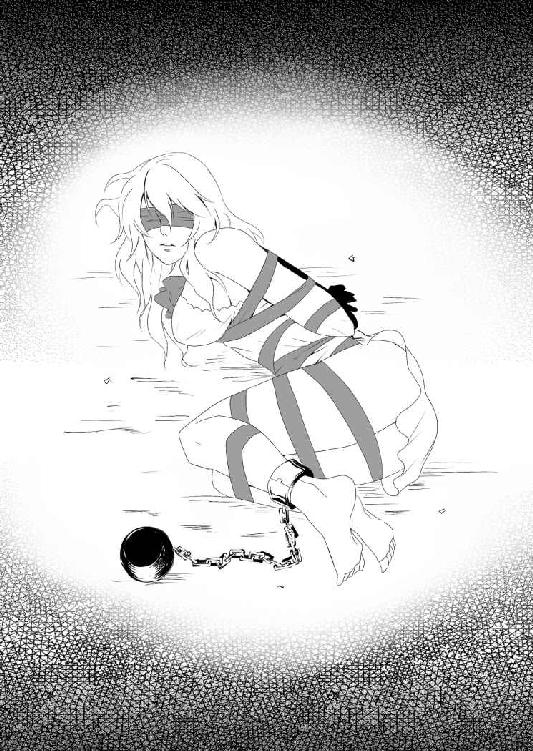
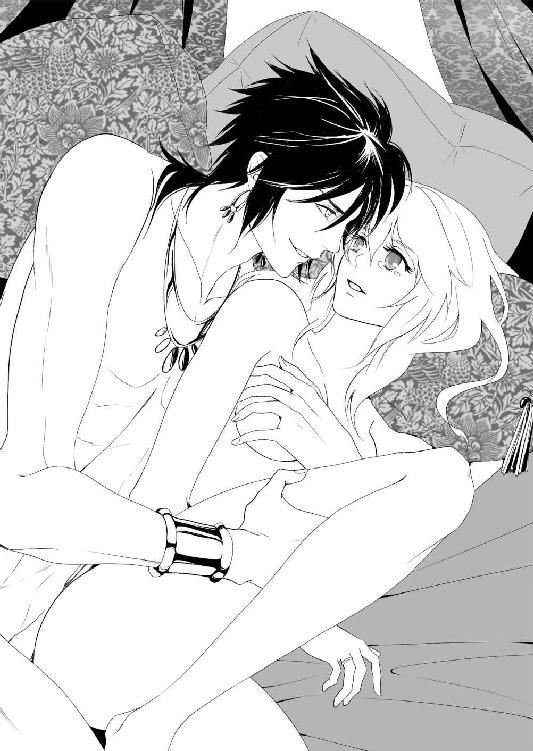
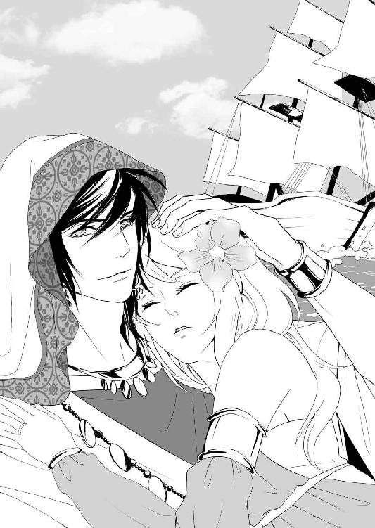

| かどわかされて 奴隷姫 (TL◆蜜姫文庫チュチュ) | |
| 国沢裕；不破希海 | |
| (2015) | |
かどわかされて 奴隷姫
［著］国沢裕
［イラスト］不破希海
【登場人物】
フーシエ..................ジャプラシオン国の貴族令嬢。十八歳。
リオ........................ジニアシルド国の宝石商人。二十四歳。
ダジージャの国王......リオと親しい内陸国の王。五十歳ほど。
ダジージャの王女......国王の愛らしい一人娘。十二歳。
アニー.....................故郷からリオを迎えに来た美しい女性。二十二歳。
ジニアシルドの国王...背も横幅も大きなリオの故郷の王。

プロローグ
気がつけば、彼女は、奇妙な静けさの中に置かれていた。
誰もはっきりした意味を持つ言葉を発しない。なのに、たくさんの人の気配。吐息や衣擦れの音。
そして、全身を突き刺すような視線を痛いほど感じている。
恐怖で唇は渇き、カラカラの喉は痛みを訴えていた。口を動かしてみても、かすれた声は、誰の耳にも届かない。
布で目隠しをされて身体の自由も奪われていたフーシエは、自分がどのような場所にいるのかがわからず、ただ身を縮こませていた。
フーシエには、とても長い時間だった。
ふいに、朗々とした声が、すぐそばから発せられる。びくりと身を震わせたフーシエは、目隠しをされたままの顔をあげた。
「お待たせいたしました！ 準備が整ったようです。さあ、本日唯一の商品となりますのは、純粋無垢に育てられた貴族の娘！」
突然の言葉に、フーシエの肩が恐怖で震える。
同時に、取り囲む空気がざわめいた。
周りの様子は見えなかったが、いままで震わせていた肌の表面を、ふいに撫であげるような熱を感じる。
これは......光をあてられたのだろうか？
フーシエは、それほど熱くもないのに、じっとりと汗をにじませた。
「――なるほど。辺境の没落貴族が、貧しさに耐えきれずに娘を手放したのか......」
したり顔で発したような声が、かすかにフーシエの耳へと届く。その言葉を理解したフーシエは、混乱する頭の中で必死に否定した。
――それは違うわ！
お父さまもお母さまも、お兄さまもお姉さまも、どんなに経済的に苦しくなっても、やさしさを失わなかった。
皆で力を合わせて、質素で慎ましく助け合って暮らしていたわ！
泣きたくなる気持ちを抑えて、すがるように、やさしい家族の顔を思い浮かべる。そして、この状況に陥る前の記憶をたどった。
フーシエの最後の記憶。
それは、両親におやすみのキスをしたあと、やわらかな毛布をふんわりとかけてもぐりこんだベッドの中だった。
たくさん光を浴び、お陽さまの匂いがしているよくふくらんだ毛布の中で、フーシエは丸くなってまどろんでいた。
ずっと続くと思っていた、幸せな時間......。
その毛布が、突然はぎ取られた。
悲鳴をあげる間もなく、フーシエはザラザラとした袋のなかへ頭から放りこまれる。袋の口を閉じられ、文字どおり手も足もでない状態で、フーシエはたちまち部屋の窓から外へと運びだされてしまったのだ。
自分がどこへ運ばれているのか、これからどうなるのかという恐怖でまんじりともせず長時間、暗闇と気持ちが悪くなるような揺れの中で過ごす。
なぜなのか、生臭いような臭いも漂ってきた。
ようやく平らで動かないところにおろされたと思ったとたんに、今度は袋の口から手が入ってきて、すぐに布で目隠しをされた。
そのまま袋から無理やり引っぱりだされ、身体の自由を奪うように、だが締めつけない力でゆるやかに全身が縛りあげられる。
そして、横座りに座らされた格好のままで、最後にひんやりとした重いものが右の足首につけられた。
◇◇◇
――わたしは、勝手に連れだされたのよ。きっと、なにかの間違いだわ！
心の中で叫んでも、誰も気がついてくれない。
ああ、声がでれば......。
この誤解を解くことができれば、かならずお父さまとお母さまが、わたしを迎えにきてくれるはずよ！
恐ろしい状況をあえて考えないようにしながら、フーシエは小刻みに身を震わせて、必死でその希望にしがみつく。
ふいに、足音が聞こえた気がした。
じっと耳をすますと、誰かがすぐそばまで近づいてくる気配がする。そう思ったとき、ようやくフーシエは目隠しをはずされた。
布を解かれた彼女は、おそるおそる、まず最初に拘束された自分の身体を見おろす。
身体の線に沿ってやさしく仕立てられた真っ白なナイトウェアは、ベッドにもぐりこんだときと変わらずに、そのまま身につけていた。
だが、その胸もとには、見慣れぬ派手なピンク色のリボンが、花のような結び目を作っている。
そして、結び目からのばされたリボンは、背中の中ほどまで艶やかに伸ばされたブラウンの髪を絡めないようにバストの下を通り、十八歳になったばかりのフーシエの豊かな胸を、さらに押しあげて強調するかのように巻かれていた。
そのまま間隔をあけながら螺旋状にくるくると腰まで巻かれたリボンは、フーシエの両腕をゆるやかに背中で固定し、さらに行儀よく両脚をそろえるように、膝のあたりまで飾られている。
そして、フーシエは、自分の右足首につけられたものに気づいて息をとめた。
ずしりと重く足首を包んでいたものは、――可憐な彼女にそぐわない鉛色の武骨な鎖だった。
それらを目にした彼女は、痛くない絶妙のきつさで全身を拘束された理由を、やっと理解した。
一気に血の気が失せ、ただでさえ色白の肌が青みを帯びる。
商品に傷をつけてはいけないからだ。
傷をつけずに、動けないようにしながら、フーシエを飾りたてているのだ。
自分は人さらいに遭い、商品として競売にかけられているのだ。
いくつもの品定めをする視線にさらされたフーシエは、瞳に涙をためながら身を縮みこませることしかできなかった。
黒い生地で仕立てられた礼装に身を包んだ男が、座っているフーシエの横に立った。低く、だが部屋の奥まで届く声量で厳かに告げる。
「本日の商品は、大切に館の奥で育てられた娘。当然、誰の手にもかかっていない清らかな少女です。手に入れられた殿方は、ぜひ、これからも人の目に触れさせぬよう、大事に隠して愛でていただきたい」
その言葉に、フーシエは戦慄した。
さらってきた娘だと暗に告げ、彼女を手に入れたあとは屋敷の奥で監禁しろというのだ。
それは、自分は行方不明者となり、もう二度と外には出られないというだけではなく、親のもとへ戻ることができないということだろう。
「ブラウンの髪が絹糸のように細く光り輝いている。さぞかし手触りがよいのだろう」
「ここからでも、しみひとつなく白くて滑らかな肌をしているのがわかるな」
「一度も口をきかないが、玉を転がすような美しい声をしているのだろうか。ぜひとも啼かせてみたいものだ」
「小さな顔におさまっている濡れたように光る大きな紫色の瞳は、宝石をはめこんでいるみたいだな」
「折れそうなほどに華奢な手足は、高級な人形のように長く形が素晴らしい......」
会場内からざわめくような声が聞こえてきて、唇を震わせるフーシエの頬を涙が伝っていく。
その姿は、純粋無垢の可憐な少女として、集まった者たちの眼に映った。
思わず息を呑み、場内が水を打ったように静かになったのを確認した男は、ここぞとばかりに声を張りあげる。
「さあ、またとない掘り出し物です。どうぞ良い値をつけていただきたい。では、まずは一万から」
「二万」
「三万！」
「三万五千」
すぐに、いくつもの声が飛び交った。フーシエは、数字がたちまちあがっていく様を、なすすべもなく眺めるしかできない。
やがて、六十五万というこの辺りでは突拍子もない金額まであがると、さすがに次の声がかからなくなった。
その数字は、数カ月は豪遊できる金額だった。
「六十五万、これ以上はでませんか。もう、ほかの方はよろしいですかな？」
この場を仕切っている男が片手をあげ、決定の言葉を続けようとした。
――そのとき。
「八十万」
部屋の入り口付近の薄暗い席のほうから、張りがある、よく通る声が響いた。
この異様な場にそぐわない華やかさを帯びた清々しい声の質に、おもわずフーシエは顔をあげる。
すると、そこには、眼だけがうかがえるように頭部から全身を、やや暗い無彩色の布で覆った男が、立ちあがるところだった。
「その娘、俺が買おう。――これ以上の金額を提示されても、俺はその上をだす」
周りを圧倒するほどの存在感を漂わせながら、男はきっぱりと言い切った。
――これでは、それ以上の金額を口にできる者はいないだろう。
仕切っていた男は、そう判断をしたようだ。苦笑いのような笑みを口もとへ浮かべながら、風変わりな男を落札者として声を張りあげた。
怯えた瞳で、フーシエは、部屋の奥から壇上のほうへと近づいてくる上背のある男を、じっと見つめ続ける。
この素性もわからぬ怪しげな男に、わたしは、買われてしまったのだ......。
第一章
「大きな街だ。これは旨い食事と清潔な宿が期待できそうだな」
そうひとりごちながら、リオは、グミンカという街の大通りを、物珍しげにゆっくりと歩いていた。
いつもは決まった国々を通るのだが、今回は商売ルートから少しそれた、初めての街となる。
二十四歳となる彼は、今回で長旅は最後と決めていたため、見知った国ではない街に冒険心で立ち寄りたかったのだ。
グミンカは、大きな港を持った国際色豊かな街だ。海を渡ることは身分証明や手続きが難しい国であるが、この街の中は、陸伝いでやってきた多くの異国の者たちが行き交い賑わっていた。
縁に幅広く飾り柄を施した無彩色の布を、頭のてっぺんからざっくりとはおり、顔だけだした格好は、ひったくりなどを防ぐ自衛の旅姿だ。
左腰には、大きな剣を鞘におさめて携えているので、不必要な争いごとを避けるためもある。
リオのような身なりの旅人は、このあたりではとても多いのか、とくに周囲の目を引きつけることはなかった。
布の下に隠された精悍な顔には、好奇心に満ちた光を宿す深緑の瞳が輝いている。笑みを刻む大ぶりの口もとには、自信があふれていた。
その表情豊かな男らしい顔を、乱れた長めの黒髪が魅力的に縁取り、艶やかな色気を醸しだしている。
背は高く、広い肩幅はがっしりとしており、衣服の下に隠された腹筋は強靭な力を秘めるように引き締まっていた。
リオは、存在するだけで迫力のある男だった。
そんなリオにとって、ひとり旅は気楽なものだ。
だが、ときおり話し相手が欲しくなる。旅も終盤となり、故郷となる懐かしい国が近くなってきたせいかもしれない。
リオは誰にでも話しかけられる性格であるため、興味が湧くものを見かけるたびに、その土地の住民に声をかけた。
だが、路肩にでている屋台の若い娘や、その土地に詳しい年齢の高いおやじとの会話だけでは、そろそろ退屈になってくるというものだ。
そう考えながら、リオは周りを見渡した。そして、さっそく目についた、人の出入りが多い大きな飲食店へと向かうことにする。
この通りでは、一番のはやりの店とリオはみた。
思ったとおり、店は繁盛しているようで、広い店内はほとんど埋まっている。
店の奥へと案内されながら、リオは席へ着くまでに、周りの客がどのようなものを食べているのかを確認した。
ようやく席を確保したリオは、無彩色の布を脱ぐと、年若く愛想のよい女の店員にお勧めを聞きだす。
そして、どうやらほとんどの客が頼んでいるらしいその郷土料理を注文した。
手頃な値段で提供された、ボリュームのある煮込み料理だった。その濃厚な味は、大いにリオを満足させた。
だが......。
ひとりで食事をすると、やはり物足りなく感じてしまうようになっている。
ゆっくりと味わいながら料理を食べるあいだ、リオは、さりげなく店内の客や従業員の様子を眺めた。
そして、もっとも情報を持っているのではと思われる、この店の主人らしき年配の男を手招く。
「どうなさいました？ お客さま」
客から、料理に対する不満をいわれるのではと思ったのだろうか。
満面の笑みを浮かべながら駆け寄ってきた主人は、低姿勢となって、小さな声をかけてくる。
その不安を払拭するように、すかさずリオは、笑顔で口を開いた。
「とても旨い料理だった。旅の途中で立ち寄った街で、こんなに素晴らしい味に出会えるとは嬉しい限りだ。ぜひお礼をいいたいと思ってね」
「それはそれは。ありがとうございます」
リオの手放しの称賛に、店の主人は、たちまちホッとした表情となる。
相手の機嫌を最大によくしてから、リオは、目的となる話を切りだした。
「ところで。短い期間となるのだが、人を雇いたいと考えている。そこで、この街のことに詳しそうなご主人にお尋ねしたいのだが、どこか、人を斡旋してくれるところをご存じだろうか」
そう告げた旅人の顔を、店の主人は品定めをするように、まじまじと見つめた。
少し長めの漆黒の髪と煌めく深緑の瞳。親しみやすい明朗な語り口と隙のなさそうな風貌は、絶妙なバランスを持って男の魅力を醸しだしている。
衣服越しからでも伝わってくる、リオの見事な肩の筋肉と、均整のとれた若さがあふれる素晴らしい身体へ視線を移しながら、主人は、なにやら考えこむ表情を浮かべた。
やがて、主人は大きくうなずき、口を開く。
「人を雇いたいなら、この街の中心部にある役所が紹介をしておりますね。ただ、身元の確認と手続きが、いささか面倒となります」
「身元の確認か。それは参ったな」
「なにか不都合でも？」
「いや。そういうわけでもないのだが......。それに、手続きが面倒というのも、なんだかな」
リオは、片手で顎を撫でながら思案した。
肩書きとしては、リオは宝石商人となる。
あちらこちらの国を渡り歩き、国から持ちだした宝石を、特定の顧客のもとへと運んでいる。
ときには欲しがる飛び入りの富豪へも、宝石を売る。また珍しい宝石を手に入れて持ち帰ることを商いにしていた。
リオの出身となるジニアシルド国は、その名の通り、ジニアシルという名の宝石の産出国なのだ。
ジニアシルは、深く上品な紫色の石で、つるりとした表面をしている。光をあてると、中心でキラキラとした細かい結晶を浮かびあがらせる。なかなか目にすることのできない、珍しく高価な石だった。
身元の確認となると、ジニアシルを含めた高価な宝石を広げて見せる必要があるかもしれない。
取引以外で高価な商品を見せたくないという、それもリオが迷うひとつの理由となっていた。
椅子の背にもたれ、じっと逡巡する旅人の様子を眺めていた店の主人は、ふいに深くうなずいた。
そのまま内緒話をするように腰を折ると、主人は、そっとリオの耳もとへ顔を寄せる。
そして、小さな声でささやいた。
「――もうひとつのところは、あまり大っぴらにはできない施設なのですが」
その言葉に、無意識にリオは、身を乗りだした。
「それは、どんなところだい？」
「非公式になるのですが......」
「非公式か。なんともそそられる言葉だな」
笑いをにじませたリオに、主人は思い切ったような表情になってささやいた。
「若く美しい女性限定でご所望でしたら、私の紹介で場所をお教えいたしますよ」
リオは、瞳を見開いて主人の顔を見た。そして、言葉の裏に含まれる意味を、すぐさま理解する。
――非公式というから、どのような場所かと思ったら......。
主人は、身元の確認を渋ったリオの様子から、じつは雇いたいという言葉は口実で、ただ旅先での性欲を満足させる女を所望していると受け取ったのだろう。
――俺は、そんなに好色そうに見えたのか？ そちらの方面を希望しているように見えたのだろうか？
少々驚きながらも、リオは、好奇心にかられた。
彼は、高価な商品を持ち運んでいるため、護衛を兼ねた旅の道連れとなる話し相手が希望だった。
だが、それでも若さがみなぎる健全な青年だ。若く美しい女性に、まったく興味がないわけがない。
驚いた表情から一転、とぼけるような笑みを口もとへ浮かべると、リオは主人へささやき返した。
「そういう観光案内のようなことも、この店ではやっているのか？」
「いえいえ。お客さまだけに特別ですよ」
主人は、顔の前で片手を振ってみせる。
それから、意味ありげに笑って言葉を続けた。
「――このように大勢が集まる店には、お客さまのような方もいらっしゃいますし、希望される情報も集まるものですからね」
「なるほど」
「今回のお話も、常にあるわけではございません。偶然今朝、上玉が入ったという噂を小耳にはさんだものですから」
「ほう」
「お客さまは、素晴らしくタイミングがよろしいようです」
極秘の情報とばかりにささやく主人に対して、考える表情を向けつつも、リオはもう行く気になっていた。
彼は、過去に女性を買ったことはない。
今回の主人からの情報は、旅先での偶然の誘いだ。その誘いに、ただの珍しいもの見たさだけの軽い気持ちで、リオは乗った。
やがて、無邪気な笑みを主人へ向けると、リオは情報料を上乗せした多額の食事料金を取りだした。
さりげなく手渡しながら告げる。
「せっかく訪れた異国の地だ。お勧めの観光名所は、あますところなく目にしていきたいものだな」
「さようでございますとも」
主人も、心得たようにうなずいた。
◇◇◇
飲食店の主人に教えられたところは、大通りから少し外れた人の行き来のない、さびれた道に面した目立たない建物だった。
個人の住宅のようにも見えるが、窓がない。周囲にひっそりと並んでいる家屋と同じような、石造りの小さな施設だった。正面に三段ほど上り階段があり、重々しく頑丈そうな木製の開き扉が備えられている。
リオは、躊躇なく扉の中央に取りつけられたベルを鳴らす。すぐに、扉の内側から声が聞こえた。
「はい。どちらさまでしょう」
それは、やや野太い男の声だった。
教えられた内容が内容だけに、その声はリオに、用心棒となる屈強な体格の持ち主を連想させた。
問われたリオは名を告げ、大通りの飲食店主に紹介された旨を説明する。すると、かちりと鍵がはずれる音がして、扉はゆっくりと押し開けられた。
中から姿を現したのは、リオの想像通り大柄な強面の男だ。
訪問者のチェックを任されているのだろうか。にこりともせずに、無言でリオの風体を眺めまわす。
その視線だけで、たいていの人間なら縮みあがるに違いないと思われた。
だが、リオは怯むそぶりもない。
余裕の笑みさえ浮かべながら、口を開く。
「きれいな商品が競売に出されると聞いたので、ぜひ見てみたいとやってきた。参加料はいかほどか」
そう続けたリオが、このような催し物を取り締まる側の人間に見えなかったのだろう。大柄な男は、金額を簡潔に告げる。
それは、かなりの数字だった。
いままで通ってきた国でも、似たようなところを目にしたことがあったリオは、だいたいの相場を知っている。
その中で、もっとも高いと思える心付けをさりげなく増額して参加料を手渡した。
すると、あっさりとうなずいた男は、身体をずらすようにして、リオを扉の中へと招きいれる。
建物へ入ったリオの背後で、ふたたび鍵のかかる音が響いた。
きっと、リオのように観光気分でやってくる輩が多いのだろう。大柄な男のあとに続いて、リオは、顔の識別が困難なほどの薄暗い廊下を歩いていく。
やがて廊下を突き当たり、曲がった先の小部屋へと入っていくと、男はコツがあるかのように、すぐそばの壁の一部を抜け穴のように開いてみせた。
「足もとに気をつけて。お静かに最後部の椅子へ腰をおろしてください」
脇に退いた男の言葉を聞きながら、リオは穴をのぞきこむ。
すると、リオがひとり、どうにか腰をかがめずに歩けるくらいの高さの天井と狭さを持った地下への階段が、目の前に現れた。
怖いもの知らずのリオは、男に謝礼の言葉をかけると、逆にわくわくとした気持ちを抑えながら階段を歩きだした。
薄暗く地下三階ほどの長い階段をおりると、目の前に、素晴らしい装飾が施された木製の扉が現れた。
そっと飾り細工のような取っ手に触れると、静かに扉が開く。
ゆっくりと扉を引っぱり開けたリオは、廊下や階段ほどではなかったが、明るいとは言い難い部屋の中を覗きこんだ。
すると、地上からは想像できないくらいの広い空間があった。
一段高い台が部屋の最奥へ半円形に作られ、その舞台から距離をあけて取り囲むように、いくつもの椅子が並べられている。
ざっと見渡して、五十ほどの席が八割近く埋まっているのを確認したリオは、男に言われた通り、一番後ろとなる椅子へと静かに腰をおろした。そこから、後ろ姿ばかりとなるが、席についている参加者たちを観察する。
皆、一様に顔を隠しているようだが、身にまとっている衣服は上質だ。
黙っていても、それぞれが、なにかしら上に立つ者の気配を醸しだしている。
それが堅気の地位としても――そうとはいえない地位としても。
リオは、一番後ろの席についているため誰にも気づかれずにいたが、普段から口もとを覆っている布を、無意識に眼の下まで引きあげる。
そして、部屋の前方へ視線を向けた。
円形の舞台の上は、奥の半分を真っ白な布のようなもので仕切られていた。
◇◇◇
やがて、時間となったらしい。
舞台の上の白い布の前に、ひとりの男が立った。
この地で礼装となるらしい黒い衣服で身を包みこみ、やわらかい笑みを満面に浮かべている。
その手慣れた立ち姿が、彼を狡猾にみせていた。
リオは目立たぬように、じっと息をひそめる。
「お待たせいたしました！ 準備が整ったようです」
ゆっくりと見回しながら張りあげた男の声は、低いながらも朗々としていて、弥が上にも、これからおこなわれることの期待を高めている。
そんな声に誘われるように、リオも舞台のほうへと視線を向けた。
「さあ、本日唯一の商品となりますのは、純粋無垢に育てられた貴族の娘！」
男の声とともに、舞台の上から明かりが一筋、真下へと照らされた。
舞台の上が、はっきりと見えるように浮きあがる。そして、仕切られていた真っ白な布が取り除かれた。
思わずリオは、その光景に視線を奪われる。
まるで豪華なプレゼントのごとく飾りつけられた、まだ全身からあどけなさを残した少女が、光の中で座っていた。
白いドレスのような衣服をまとった華奢な肢体が、ピンクのリボンで鮮やかに彩られていた。
色白のしなやかな腕と脚をふんわりとまとめ、細くくびれたウエストを強調するように締めあげながら、豊かな胸もとでは大輪のリボンの花が咲いている。
光沢のある絹糸のような長いブラウンの髪が、彼女の壊れそうなほどの細い肩をおおって背中まで伸びていた。
そして、少女にはアンバランスな、鉛色の鎖が右の足首に取りつけられている。
遠くからでもわかるほどに打ち震えている、一輪の花のように可憐な少女の姿から、リオは視線をそらすことができなかった。
感嘆のため息とざわめきに満ちた場内で、ただ黙って彼は、少女をまじまじと見つめ続けていた。
舞台の上の男が少女へ近づき、彼女の目隠しを取り去る。
その瞬間を、リオは見逃さなかった。
宝石のようなキラキラとした光を帯びた濃い紫の瞳が、花開くように現れた。そして、その瞳が驚愕のために見開かれる。
――まるで、己の姿を初めて目にしたように。
幼さを残した美しい顔立ちが、たちまち悲しみの色に染まる。
形のよい眉がひそめられると、宝石の瞳から大粒の涙があふれだし、陶器のようになめらかな頬を伝ってこぼれ落ちた。
わななく薄紅色の唇が、とても蠱惑的に映り惹きつけられる。
魅入るように少女の顔を見続けていたリオが我に返ると、舞台上の男の口上が終わり、競売がはじまっていた。
一万からはじまり、たちどころにつりあがっていく値に、いつしかリオの思考は、タイミングをはかることだけに集中していた。そして、六十五万で頭打ちとなった瞬間に、彼は声を張りあげていた。
「八十万」
場内が、水を打ったようにしんとなる。たたみかけるように、リオは立ちあがりながらきっぱりと言い放った。
「その娘、俺が買おう。――これ以上の金額を提示されても、俺はその上をだす」
光に照らされ震えている可憐な彼女の姿以外、もうリオには眼中になかった。
◇◇◇
フーシエは、涙に濡れた顔を、近づいてくる男へと向けた。
眼だけをだして無彩色の布で全身を包んだ怪しげな男は、フーシエにとって恐怖でしかなかった。
――わたしは、この見知らぬ男に競り落とされてしまったのだ。
悲しみにくれたフーシエは、ただ涙に濡れた大きな瞳を見開いて、自分の運命を眺めるしかない。
場を仕切っていた黒い服の男は、にこやかに無彩色の男を舞台上へと招きあげた。そして、彼がこの街の住人ではなく旅人だと見抜いたようだ。
確認するように声をかける。
「この競売では、この場で即金が原則でございますが、よろしいかな？」
その言葉に、旅人はあっさりとうなずいた。
彼は、黒い服の男のそばで片膝をつく。
そして、脇に提げるように大事に持ち運んでいたらしい袋を、無彩色の布の下から引っぱりだした。
ぼんやりと見つめるフーシエの前で、男は袋の中身を探った。やがて、表面に繊細な装飾が施された小さな木箱をひとつ、取りだす。
訝しげな表情となる黒い服の男に見えるように、彼は、木箱のふたをそっと開いた。
じっと見つめた黒い服の男は、直後、目を丸くする。
やおら衣嚢から常に身につけているらしい柔らかそうな白い手袋を取りだすと、木箱の中を凝視しながら素早く両手にはめ、ゆっくりと手を伸ばした。そして、丁寧に取りだすと、斜め上に掲げて、とっくりと見つめる。
黒い服の男が持っているものを見あげるように、座りこんでいたフーシエは、紫色をした石を目にした。
それは、親指と人差し指で円をつくったくらいの大きさの、つるんとした紫色の宝石だった。
そして、その石は、フーシエの位置からでもはっきりとわかるくらい、天井から向けられた光を受けて、キラキラとした細かい結晶を浮かびあがらせていた。
――あれは。
もしかしたら、めったに出回ることがない幻の宝石といわれている、ジニアシルではないだろうか......？
年頃の貴族の娘らしく、過去に耳にしたことがある宝石の記憶をフーシエが探っていると、黒服の男が唸るように口を開いた。
「――これは、間違いなく本物のジニアシルですな。この大きさ、それに中心の結晶の輝き具合から、それも最高級の......」
男の言葉に、固唾を呑んで見守っていた者たちが、一斉にざわめいた。
宝石に敬意を示すように、黒い服の男は慎重に木箱へ宝石を戻す。そして、無彩色の男の顔へ、探るような視線を向けた。
「持ち主であるあなたさまは、この宝石の価値がおわかりでしょう？ 八十万の娘ではもったいない」
「ならば、この宝石との交換で、そちらに異存はなかろう」
さらに思案する表情となる黒い服の男へ、無彩色の男は言葉を続けた。
「俺は、このジニアシルが産出される国の出身で、宝石を扱った商いをしている。どこにでもだせる品質証明の鑑定書付きでお渡ししよう」
その言葉に納得をしたのか、ついに黒い服の男は首肯した。
「――差額はだせませんよ」
「むろん、了解している」
満足気な笑みを浮かべて無彩色の男が応えると、とたんに席側から声が飛んだ。
「その宝石、ぜひこちらに譲ってくれ！」
「そうだ！ その宝石を、今度は競売にかけるんだ！」
フーシエは、その成り行きを唖然としながら眺めるしかなかった。
――わたしは、宝石と交換されたの？
いくら幻の宝石といわれていても、たった一粒の石の価値で、正体不明の男に譲り渡されてしまったの......？
交換とはいえ売られてしまったという事実と、自分が石ひとつだけの価値だと思ったフーシエは、もうそれ以上、なにも考えられなかった。
虚ろにこの場を眺めていて。――そして、ふと、無彩色の男と目が合った。彼は、じっとフーシエを見つめていたようだ。
その男の瞳から、フーシエは目がそらせなくなった。
とくりと、フーシエの胸の鼓動が、やさしい音を奏でる。
強い力を持った、引きこまれそうなほど深く印象的な緑。奥へいくほど濃いのに、その表面は澄んでいて、キラキラとした光を宿している。
それは――まるで、彼の瞳のほうが価値のある宝石のようだ。
うっとりと見惚れるように眺めていたフーシエだったが、その彼の鋭い目が、わずかに形を変えたことに気がつく。
それは、笑みを浮かべたように細められた。
その意味がわからないフーシエは、改めて自分の置かれた状況を思いだし、身を震わせた。
無彩色の男から宝石と鑑定書を手渡された黒い服の男は、フーシエと宝石とを交換とした取引成立を告げた。
とたんに、新たな商品の登場に高揚した席から、次々と声があがる。
その様子を、黒い服の男は、嬉しそうな表情で見まわしていた。
やがて、おもむろに口を開き、声を張りあげる。
「この宝石は、改めて競売にかけさせていただくことにいたします。なぜなら、幻といわれる宝石ゆえ相当な額となり、この場ではとても払いきれないものだからです」
黒い服の男は優雅に腰を折りながら、一瞬で静まった場内の客に向かって、ささやくような声になって告げた。
「どうか皆さま、次の競売では、本日の五倍の財貨をご持参くださいませ」
第二章
フーシエは、怯えた瞳で男を見あげた。
リボンでぐるぐる巻きにされて身動きがとれないフーシエへ向かって、競り落とした無彩色の男が近づいてくる。
取引が成立し、幻の宝石という新たな商品に関心が向かった参加者たちは、もうふたりの様子に目もくれなかった。
手に入らなかった娘には、もう興味を失くしたらしい。
やがて、フーシエの傍らへやってきた男は、静かに床へ片膝をついた。
全身を布で隠し眼だけをだした男に見つめられたフーシエは、どうすることもできずに、ただその瞳を見つめ返すことしかできなかった。
――鋭い目をしているわ。
その力をたたえた瞳は、とても、ただの宝石商人には思えないわ......。
もしかしたら、品質証明の鑑定書付きなんていっているけれど、ほんとうは裏取引をしているような、悪い人なのかもしれない。
けれど。
――わたしは、この男に競り落とされたのだ......。もしかしたら、また別のところで、今回と同じように売られるのかもしれないわ......。
絶望的な想いであきらめていたフーシエだが。
突然、男はフーシエの膝の下へ右腕をさしいれる。あっと思う間もなく、フーシエは男に抱きあげられていた。
バランスを失くしたフーシエは声にならない悲鳴をあげたが、すぐに、ぴったりと男の胸もとに引き寄せられる。
そこは、とても温かく安定感のある場所だった。
男は、フーシエの右足首に巻かれた鎖の重さなど取るに足らぬことらしく、軽々と抱えて歩きだす。
そのまま、この催しの手伝いをしていると思われる使用人の男に誘導され、部屋の横に取りつけられていた扉へ向かった。
◇◇◇
男がおりたときとは別の長い階段をあがると、最初に通った部屋とは別となる、明るく広い部屋へとつながっていた。
そこで、ようやく使用人の男が口を開く。
「ここで身支度を整えられたら、ほかの客人が帰られる前に、すぐにあちらの扉から退出なさいませ。長居は無用でしょう」
無愛想にそれだけを口にすると、使用人は、無彩色の男に小さな鍵を手渡した。そして、さっさと入ってきた扉の向こうへと引き返していくと、あちら側から、かちりと鍵のかかる音が響いた。
たちまち部屋の中は、しんと静まり返る。
ふたりは、どちらともなく顔を見合わせた。
「――どうやら、もう地下の競売へ戻ることはできないようだな」
苦笑するような無彩色の男の声に、おとなしく運ばれていたフーシエは身を震わせる。
冗談じゃないわ。
――もう二度と、あのような場所へ戻りたくなんてない......。
恐怖で身体を縮こませるフーシエを抱えたまま、男はぐるりと部屋の中を見渡した。
「ああ、あそこに大きな長椅子がある。――この部屋はかなりいい部屋だな。置いてある調度品も素晴らしいし、趣味も悪くない」
そう口にしながら、男はまっすぐに長椅子へと向かう。そして、壊れものを扱うように、やさしくフーシエを横たえた。
全身をリボンで結ばれているフーシエはされるがままになっていたが、不安な表情のまま、男の次の行動を見守る。
すると男は、先ほど使用人から受け取った鍵を、フーシエの目の前まであげてみせた。
「この鍵はたぶん、おまえの足首に巻かれている鎖の鍵だ。――おとなしくしていろ」
身動きはとれないうえに口の中はカラカラで、とても暴れられる状態ではないフーシエは、無抵抗で小さくうなずく。
その素直な様子に、男は笑みを浮かべたようだ。
すぐにフーシエの足先のほうへ移動をして、うつむいて鎖を解きはじめた男を、フーシエはじっと見つめた。
――この方は、やさしく扱ってくれているわ......。もしかしたら、事情を説明すれば、助けてくれるかしら？
――ああ、でもダメだわ！
この彼は、わたしと引き換えに、価値のある宝石を手放したのだった。
あんな高価な宝石だったんだもの。簡単に、お父さまやお母さまのところへ帰してくれるわけがないわ......。
心の中でぐるぐると考え続けたフーシエは、悲しげな表情になりながら、黙ってうつむいてしまった。
鎖を解く彼の手は、とても器用に動き、またたく間に解かれていく。やがて足首が軽くなったフーシエは、ホッと小さな吐息をついた。
「さあ。今度はリボンをはずそうか」
そう口にした男は、フーシエの上体のほうへ身体をずらしてきた。
はっと顔をあげたフーシエは、男の顔が、自分の胸もとをのぞきこむ位置にあることに気がつき、たちまち身をこわばらせる。
その様子に気づいたらしい男は、どうやら口もとを覆った布の下で破顔したようだ。
肩まで小刻みに揺すった。
「ははは。そんなに警戒するな。リボンを解くだけだ。それに、早くここから退散したほうがいい気がするしな」
男の心地よい笑い声を耳にして、フーシエは、少し身体の力を抜く。
そして、この縛めを解いてもらえるならと、胸もとのリボンの花を彼が解きやすいように向けた。
――そうよ。一刻もこんなところから逃げだしたいわ。
それに、ここでは彼も時間がないから、わたしに乱暴なことをしないはずだわ。
そんなフーシエの覚悟が伝わったのか、男は素早くリボンの端を見つけると、両手で開くように引っぱった。
するすると、リボンの花が解かれていく。
男は、大きく腕を動かしながら、胸から腰、太腿まで、フーシエの身体に巻かれたリボンをはずしていった。
やっと自由を手にしたフーシエは、胸いっぱいに空気を吸いこむ。
だが、恐怖から解放されたばかりの身体は震えて、うまく息が整わずに、何度も深呼吸を繰り返した。
そんな彼女へ気をきかせたらしい男は、持ち歩いている袋から携帯用の水筒を取りだして手渡した。
その魅惑的な飲み物を目にしたフーシエは、なにも考える間もなく手をさしだして受け取る。そして、一気に飲み干してしまっていた。
それは無味無臭の水だったが、フーシエにとっては、いままで口にしたことがないと思えるほど、甘美な飲み物だった。
痛みを感じるほどカラカラだった喉を潤して、フーシエはようやく安堵の息を吐く。
そんなフーシエの様子に、男は笑い声をたててからいった。
「人心地がついたところで申しわけないが、すぐにここからでよう。――だが、その格好では、なんとも心もとないな」
フーシエの全身へざっと視線を走らせた彼は、口もとの布の上から顎のあたりに片手をあて、考えこむようにつぶやく。その言葉に、フーシエは自分の姿を見おろして、一気に蒼ざめた。
ベッドにもぐりこんだときのままの、真っ白なナイトウェア一枚だった。
寝苦しくないように襟もとは大きく開いており、フーシエの弾力のある豊かな胸をゆったりと覆っている。
手触りのよいやわらかな生地が、なめらかな曲線に沿って膝のあたりまで、まとわりつくように身体を包んでいた。
――身体の線が、ですぎているわ。
だって、他人に見られることなんて、考えてもいなかったんですもの......！
羞恥心から、フーシエは肌をほんのりと染める。片方の腕で胸もとを隠しながら、もう一方の手でナイトウェアのすそを下へと引っぱった。
そのままフーシエは言葉を失ったかのように、身を縮こませる。
「――ああ、履物もないのか」
遠慮なくフーシエの足の先までじっと見つめていた男だったが。
ふいに、なにを思いついたのか、自分の頭を覆っていた布へ指をかけ、ばさりと後ろへ払った。
フーシエは、初めて目にする男の顔を、思わずまじまじと見つめてしまった。
そこには、つい胸が高鳴ってしまいそうなほどの甘やかな笑みを口もとへ刻んだ、魅惑的な顔がさらけだされていたのだ。
麗しい漆黒の髪のあいだからのぞく瞳の下に、すっと通った凛々しい鼻梁。精悍な頬。
呆けたように見つめるフーシエの視線に気づかないのか、男は手早く、まとっていた布を脱ぐ。
すると、衣服の上からでもわかるほどしなやかな筋肉が乗った、均整のとれた強靭な身体が露わになった。
健康的な色をした二の腕や厚い胸板が、布越しに見てとれる。その腰には、ずっしりとした剣を携えていた。
突如現れた端正な顔と、匂いたつような色香をまとった肉体美に、思わずうっとりと見とれてしまったフーシエの頭の上へ、おもむろに男は無彩色の布をかぶせた。
突然のことに我に返ったフーシエは、小さな悲鳴をあげる。だが、暴れる前に、男に縦抱きに持ちあげられてしまった。
バランスを失った彼女は、とっさに目の前の男の首へ、両腕でしがみつく格好になってしまう。
男は片手で、フーシエの頭だけをだすように、布を少しめくった。
すると、縦抱きに持ちあげられていたフーシエは、思いがけなく男の顔を間近で見つめることになってしまった。
目の前で見る男の顔の、なんとも美しい造形に、胸が大きく高鳴った。
早鐘のような自分の鼓動を気づかれたくなくて、フーシエは、この密着から逃れようと身をよじる。
「はははっ。そう暴れるな。裸足で歩かせるわけにはいかないからな。しばらくこれで我慢してもらおう」
軽快な口調でフーシエに告げると、男は、使用人に指示されていた出口となる扉へ向かって歩きだした。
そのときになって、ようやくフーシエは理解する。
この男は、薄着だった自分のために、まとっていた外衣を貸してくれたのだ。そのうえ足の裏が汚れないように、抱きかかえてくれている......。
いまのフーシエは、この親切な男に頼るしかどうにもできないと気づく。そして、じっと、彼のなすがままに身をまかせた。
「どうやら、飛び入りの客と身分を隠さなくてはならない常連客の入り口は、別だったらしいな。用心深いことだ」
つぶやきながら部屋からでた男は、延びる廊下に添って躊躇なく歩いていく。
すると、建物の外へとつながる扉へとたどりついたようだ。
そこには、恭しく頭をさげる高齢の男が控えていた。
「このたびはありがとうございます」
そう口にしながら扉を開き、フーシエたちを慇懃に外へと送りだす。
一歩外へ出ると、まだ日は高く明るくて、――フーシエはたちまち、その眩しさに目が眩んだ。
くらくらとしながらも必死で男の首にしがみついていたフーシエは、すぐに、別の建物へ男が足を向けたことに気がつく。
どこへ連れていかれるのかと、顔をこわばらせたフーシエは、おそるおそる目だけで周りの様子をうかがった。
そこは、どうやら衣服店のようだった。
怪しい場所ではないと理解したフーシエは、顔を起こすと、改めて周囲を見まわす。
物珍しげな表情となったフーシエを抱えたまま、男は、近寄ってきた店員らしき女性に向かって口を開いた。
「この彼女の服を一式、揃えてもらえないかな」
そして男は、驚くフーシエを、仕切り布が開いた更衣のための床の上へと、そっとおろした。
◇◇◇
フーシエは、姿見に映った自分の姿をぼんやりと眺める。
――いままで着たことがないようなデザインだわ。
それに、なんだか不思議な模様......。
ほとんど街へでることがなかったから知らなかったけれど。賑やかなところではこんな可愛らしい服がはやっているのかしら......？
なんだか風変わりな服装に思えながら、フーシエは、姿見の前で右や左を向いて角度を変えてみる。
それは、肩の上に布を束ねてひだをきれいに折り、腰のあたりでゆるやかに飾り紐を使って押さえた、神話の女神が身につけているようなドレスだった。
十八歳のフーシエの魅力を引きだすような華やかな色で、足首のちかくまで清楚に身体を包みこんでいる。
フーシエの豊かな胸を形よく包み、なめらかな曲線にそってウエストは細く締められ、丸みのあるヒップからきれいなひだが流れている上品なドレスだった。
――わたしをここに連れてきてくれた彼は、この服を見て、なんていうかしら？
似合っているって......、褒めてくれるかしら？
なぜかそう考えたフーシエは、頬を薄っすらと染める。そして、考えただけでどきどきとする胸に片手をあてながら、そっと仕切り布を開いた。
「あら、とてもお似合いです」
最初にフーシエがでてきたことに気づいた店員の女性が、口を開いた。
華やいだ声をかけると、恥ずかしそうにうつむくフーシエへ近寄り、手を伸ばして首もとや肩の位置を整える。
それから、離れたところで立っていた男のほうへ振り返ると、店員は意見を促すように首をかしげてみせた。
それまで、無彩色の布を片方の肩にかけ、店内を興味ありげに眺めていた男は、フーシエへと顔を向ける。
その視線を浴びたフーシエは、とたんに、どきりと大きく鼓動が跳ねた。
慌てて両手で隠すように胸を押さえながら、フーシエは上目づかいとなり、男がどんな言葉をその官能的な唇から紡ぎだすのだろうかと、じっと彼の顔を見つめる。
男は、真剣な顔つきとなって、頭の上からフーシエのつま先までを眺めると、たちまち相好を崩した。
「――うん、すてきじゃないか。俺もいいと思うぞ」
口もとに魅惑的な笑みをたたえた男にそう告げられ、思わずフーシエは、火照る頬を両手のひらで隠す。
そこで彼女は、男の抑揚のある低い声が、ぞくりとするほど艶っぽいことに、いまさらながら気づいた。
――この声が、わたしの鼓動を速くしているのかしら......？
見つめてくる彼の視線が恥ずかしく、フーシエは顔をあげられなくなる。
すると、こちらもなぜか頬を染めた店員が、焦るようにフーシエへ告げた。
「あ、あの。そのドレスに合う履物を、こちらに用意しておりますので、よろしければご一緒に......」
そう口にしながら、更衣場の床のそばにそろえられていたサンダルを示す。
フーシエは、促されてサンダルのそばに近寄ると、誘われるままに、片足をさしいれようとした。そのとき......。
音もなく静かに近寄ってきた男が、片手をさしだしていた。
片足をあげた彼女がよろめかないようにと、どきりとして固まったフーシエの手のひらを、自然な動作で下からすくいあげて添える。
支えられながらフーシエは、とろりとした夢心地のままでサンダルを履いた。
衣服の支払いまでしてもらったフーシエは、無彩色の布をまといなおした男の後ろを、素直についていった。
――この男の宝石と交換され、さらに衣服の一式を与えられてしまった。
この男の目的が何であれ、もうわたしは、抵抗するわけにはいかない......。
そんな気持ちで、フーシエは覚悟を決めるというより、あきらめの心境となっていた。先ほどまでのときめきは、さすがにもう消えてしまっていた。
そのフーシエの前を歩いていた男が、大通りにさしかかる十字路の手前で、ふいに立ち止まる。
フーシエも、びくりと身をこわばらせながら立ち止まった。
すると、フーシエのほうへ振り返った男は、予想外の言葉をあっさりと告げる。
「ここでお別れだ。おまえは、自分の家に帰るといい」
「え？」
「おまえは、あの場へ無理やり連れてこられたんだろう？ そんな気がしたんだ」
ぽかんと口を開けたフーシエは、信じられない気持ちで、目だけをのぞかせている男の瞳をまじまじと見つめる。
そのやわらかな光をたたえている瞳の印象から、フーシエは、布で隠された男の口もとに、あの魅惑的な笑みが浮かんでいるような気がした。
フーシエの心の中を思いしらぬであろう男は、裏を感じさせない清々しい声で言葉を続ける。
「俺はただ、あの場からおまえを助けただけだ。だから、どうこうしようという気は、まったくないんだ」
――見返りなく高価な宝石を手放してまで。
この男は、なぜそこまでして自分の身を助けてくれたのだろう......？
そう思いながらも、フーシエは、自分の家に戻れることがとんでもなく嬉しかった。
もう周りが曇って見えなくなるほど、大きな瞳に涙をためながら、フーシエは深々と頭をさげる。
「ありがとうございます！ ほんとうに助かりました......」
「礼はいらぬ。次は危ない目に遭わないように気をつけろ」
「はい！ ――それで、あの」
ゆっくりと顔をあげたフーシエは、身体の前で、もじもじと指を絡めながら言葉を続ける。
「あの、あなたのお名前を......教えていただけますか？」
そこで、男ははじめて自分が名乗っていなかったことに気づいたようだ。笑みを浮かべたのか、布から見えている瞳にぬくもりのある光を宿して、男は告げた。
「俺はリオだ」
「わたしはフーシエと申します。助けていただいたこと、一生忘れません」
名前を口にしながら、フーシエはふたたび丁寧に頭をさげる。それからフーシエは顔をあげ、名残惜し気に男の顔を見つめた。
――もういちど、お顔を拝見したかったわ......。
この目に、しっかりと恩人の顔を、刻みつけたかった......。
魅惑的な口もとや男の笑みを思い起こすように、フーシエは布に覆われた顔をじっと見つめてから、慌ててぶしつけな視線になり過ぎたかと感じて目をそらす。
自分の中に湧きあがる、いままで味わったことのない感情を抑えこみながら、フーシエは身体の向きを変えて一歩を踏みだした。
男に背を見送られながら、そのまま大通りにでて雑踏の中を歩いていく。そのフーシエの足が、しだいに速くなり、最後は駆けだしていた。
――帰れる！
やっと家に戻れるのね！
ほんとうに、なんて悪夢のような出来事だったのかしら？
お父さまとお母さまのもとに戻って、はやく抱きしめてもらいたい！
でも、きっとお兄さまやお姉さまには、笑われてしまうにちがいないわ......。
息を荒げながら走っていたフーシエの頭の中が、やがて興奮から冷めてきた。少しずつ速度を落としながら、しだいに周りを見るゆとりを取り戻してくる。
そして、ついに足が止まった。
フーシエは愕然としながら、ぽつりとつぶやく。
「――ここは......どこ？」
ここは......この街は、わたしの知っている街じゃない？
たちまち胸騒ぎをおぼえたフーシエは蒼ざめながら、少しでも記憶にあるところを探そうと瞳を凝らしてキョロキョロと見まわす。
だが、周囲を見まわすほど、知っているものを目にするどころか、不安なことばかりが思いだされてきた。
――袋に閉じこめられたまま、とっても長い時間を移動した気がするわ......。それに、わたしの身につけているこの衣服も、いままで見たことのないデザインと模様......。
フーシエは、徐々にあとずさる。
やがて、見知らぬ土地で生じる孤独と恐怖に襲われながら、走ってきた道を戻るように駆けだした。
――助けて。
こんなところ......、わたし知らないわ！
誰か、わたしをもとの場所に戻して！
家に帰して！
――誰か！
全速力で駆けるフーシエの胸が、はげしく上下する。もう空気を吸いこむことができなくなるくらい息が苦しくなっても、気が動転しているフーシエは、走ることがやめられなかった。
この足を止めたら、もう二度と、家族のいるあたたかで幸せな場所に戻れないような気がした。
そして、フーシエの目が、遠く前方に揺れる無彩色の布をとらえる。
――頼れるものは、あそこにいる彼だけだ。
それ以外なにも考えられなくなっていたフーシエは、恥ずかしいという気持ちはまったくなかった。
大通りで行き交う人々の目を気にすることなく叫ぶ。
「リオ！」
通りに突然響き渡ったフーシエの声に、男は反応したようだ。
その場に立ち止まって振り返る。
そして、彼女の姿を確認して驚くように目を見開いたリオの胸へめがけて駆け寄ったフーシエは、倒れこむように飛びついた。
◇◇◇
「おまえはこの街の生まれで、ただ単純に人さらいに遭っただけじゃないのか」
そう口にしたリオは、ようやく涙がとまったフーシエへ、温かい飲み物をすすめた。
男に抱きついてさんざん泣きじゃくったフーシエは、恥ずかしさで鼻の頭を赤くしたまま、頬も染める。
大泣きしたことも周囲の好奇の目を集めたことも、――男性の胸にみずから飛びこんで抱きついたことも。
ちょっとでも思いだすと羞恥のあまり、身もだえてしまいそうだ。フーシエは平静なふうを装ってリオの顔を見ることができない。
うつむいたまま、フーシエは目の前に押しだされた飲み物のカップを、両手で包みこむように持った。
――さっきはパニックになってしまって、思わず彼にすがってしまったけれど。
ほんとうに、よかったのかしら？
だって、彼は見ず知らずの男性で、あんな競売場にも姿を見せる人なのに。
そんな正体不明の彼に、ほかに知り合いがいないからって、頼りにしてしまってもよかったのかしら？
それに、宝石を使って助けだしてくれただけではなく、いきなり街中でわたしに飛びつかれて、その上こうやって付き合ってもらってしまって......。
きっと、ものすごく彼に、迷惑をかけてしまっているかもしれない......。
そう考えたフーシエは、しばらくじっと、ゆらゆらと揺れるカップの中の水面を見つめていた。
周囲からの好奇な視線をさけるように、ふたりはすぐ近くにあった甘味処へと場所を移した。
建物の中に入ったリオは、目立たない席を選ぶとフーシエを座らせる。そして、自分は外衣を脱いで向かいの席へと腰をおろした。
注文をとりにきた若い女性店員に温かい飲み物や甘い菓子を頼むと、フーシエが落ちつくまで、男は静かに待ってくれる。
やがて、飲み物を口にして落ちついたらしいフーシエが、涙をまじえながら説明をはじめたバラバラの内容に、リオは辛抱強く耳をかたむけてくれた。
そして、ようやくだいたいの事情を把握したらしく、リオは、ため息まじりに笑みを浮かべた。
「なるほどね......。俺は、てっきり黒い服の男の方便で、貴族の家柄は場を盛りあげるための設定だと思ったんだがな」
そうつぶやいたリオに、うつむき加減のフーシエは目だけを動かして、訝しげな視線を向けた。
――設定って？ どういう意味かしら......？
その言葉の意味を目で問いかけたフーシエに気づき、リオは微笑みを浮かべながら、頭に描いていた考えを口にする。
「この街の中でさらってきたおまえの器量がいいから、もっともらしく貴族という身分に仕立てあげ、値をつりあげようとしたのかと思っていたんだ」
そう続けられたリオの言葉に、フーシエは驚いた。
――器量がいい？
それってわたし、褒められているのかしら......？
だって、いままで家族から、容姿について評価されたことがないもの。わたしはお母さまにもお姉さまにも似ているから......。
容姿について称賛され、さらに男からまっすぐ向けられる視線に、フーシエはそわそわとなる。どうにも落ちつかなくなってしまった。
温かいカップを両手のひらで包みこむように持った指を、もじもじとさせ、カップの中をのぞきこむように顔を伏せて、彼からの視線から逃げる。
そうしながら、フーシエは、目の前の男を観察した。
なにげなくつぶやいたリオの凛々しい顔立ちも、フーシエには、たまらないほど魅力的に映っている。
好奇心に満ちた輝く緑色の瞳と、知的なラインを描いた上品な頬。
笑みが刻まれる、表情豊かな口もと。
なのに、まとう空気は只者ではないと思わせる、少し危険な香りが漂う......。
それらすべてが混じり合い、フーシエにとって、いままで出会ったことのない未知なる男に感じられた。
先ほど別れるときは、もう一度目に焼きつけたいと願った彼の顔が、こんなに近くで見ることができるなんて......。
思わずうっとりと見とれそうになるたび、フーシエは慌てて自分を戒めるようにうつむき頭を振る。
その様子を、リオは笑いをこらえるような表情となりながら、じっと興味深げに見つめていた。
だが、ふとフーシエは、リオの言葉の中に引っかかるものを感じた。
たちまちそれは、フーシエの心の中で疑問となり、彼が誤解しているのだという答えにたどりつく。
そうなると、フーシエはただちに弁解したくなって、彼の顔から視線をはずしながら口を開いた。
「あの。さっきの言葉からすると。――それは......わたしが、貴族の娘に見えないってことですか？ 上流階級の人間らしくないってことですか......？」
「――ああ、悪かった。はっきりいえば、そういうことになるな」
悪びれる様子もなく、リオは笑みを浮かべたまま、さらりと告げた。
とたんに、フーシエは機嫌を損ねた。
不機嫌さがわかるくらいに唇を尖らせてみせる。
「そりゃあたしかに、わたしの家は裕福ではなかったです。貴族というのもほとんど肩書きだけで......」
それでも、質素ながらも家族で助け合って暮らしていたし、両親は治める領土の民から信頼も得ていた。
涙の名残で瞳を潤ませたフーシエは、心の中でそう続けながら、不満そうに頬をふくらませてみせる。
そんな彼女に、リオは苦笑しながら首を横に振った。
「いやいや。俺は、身分なんてものは、もともと気にしちゃいない」
「え？ だったら、それはどういう......？」
「おまえがそう見えないってのは、貴族かどうか以前に、子どもっぽい印象が先に立ってだな、というか......いや、そうではなくて」
なにやらリオの口から、さらに聞き捨てならない言葉を聞いたフーシエは、言い返そうとした。
それが、より子どもっぽいと思われようとも、訂正してもらわねば乙女の立場がない気がしたからだ。
しかし、フーシエが口を開く前に、真面目な表情となったリオが、もっとも大切な部分を突いてきた。
「――問題なのは、おまえがこの街の民じゃなさそうだってことだ。なあ、おまえの住む国は、なんて名前の国なんだ？」
そうリオに問われ、フーシエは無意識に姿勢を正す。そして、しっかりと自分の国の名を口にした。
「わたしの国は、ジャプラシオン。わたしが住んでいるところは、中心部から離れたところだけれど、ジャプラシオン自体は大きな国だわ」
平和ですてきな国だと自負しているフーシエは、誇らしげに胸を張って答えた。とたんに、リオは眉根を寄せる。
その彼の思わぬ反応に、たちまちフーシエは自信がなくなった。
ふっと不安が頭をよぎり、うろたえる。
――え？ なにか不都合があるようなこと、わたしはいったのかしら？ ジャプラシオンって、もしかしたら悪い評判でもあるの......？
心配そうな顔となり、フーシエはリオをじっと見つめる。その視線を浴びながら、彼は椅子の背にもたれて両腕を組んだ。
思案気な表情となって、一点を見据えるように、リオは考えこむ。
「――あの。なにか......？」
居たたまれなくなって、フーシエは声をかけようとする。だが、あまりにも真剣に集中している彼の邪魔をするようで、声をかけるタイミングがわからない。
そのあいだに、フーシエの中の不安がどんどんとふくらんできた。
もしかしたら、――そんなジャプラシオンという国など知らないとか。ひょっとして、存在しないとでもいわれてしまうのだろうか。
この数時間のとんでもない状況を味わってしまったフーシエは、怯えた瞳になって、考え続けるリオを見つめることしかできなった。
そのすがるような視線に、ようやくリオは気がついたようだ。
「――ああ、悪い」
「あ、あの、――なにか......」
やっとフーシエに反応したリオは、つぶやくように続ける。
「おまえを、もとの国へ連れていく算段を考えているんだ......」
考える表情のままで、そう口にしたリオに、たちまちフーシエは安堵した。
ああ！ やっぱり！
彼は、わたしを助けてくれる気でいるのだわ！
だから、あんなに真剣な顔で考えていてくれているのね......。
期待に満ちた瞳となったフーシエは、邪魔をしないようにと、じっとおとなしくリオの次の言葉を待つ。
だが。
やがて彼から突きつけられた言葉は、フーシエを愕然とさせるものだった。
「――やはり、無理だな。いくら方法を考えても、この国から直接おまえの国に入ることは難しい」
「――え？」
自分の聞き違いかと思いながら、フーシエは無意識に声をあげる。そんな彼女を、憐みの目で見つめ返しながら、リオはその理由を口にした。
「この街は港に面しているが、治安維持のために渡航するには身分証明と手続きが難しいんだ。陸伝いの旅だけを許可されている俺は、身分証明が一切できないおまえを連れて海を渡ることはできない」
「――そんな......」
「それに、この街の行政は、このような競売の日常化を取り締まっていないのだろう？ そんな街の役所へ、たとえおまえの身柄をあずけても、確実に本来の国へ送り届けてもらえるとは限らない気がする」
フーシエは、絶望的な目でリオを見た。
そして、みるみるうちにその大きな瞳に涙をためる。堪えきれずに、ついに彼女は両手で顔を覆った。
「――だが」
じっと真剣な面持ちのままで、リオは言葉を選ぶように続ける。
「俺の国まで一緒にくる気があるのなら、船を持っている者に、おまえの国まで送り届けるように頼むことはできる」
その言葉に、フーシエは涙に濡れた顔をあげる。
そこには、じっと彼女を見つめるリオの真摯な瞳があった。
「ただ、俺は国へ戻るまでに、どうしても仕事で商品を届けなければならない特約客がいるんだ。その国に立ち寄ってから帰る予定なのだが......。どうだ？ 俺と一緒にくる気はあるか？」
フーシエは一生懸命、真っ白になっていた頭を働かそうとした。
「――それって。あなたの旅についていって、あなたの国に着けば、わたしは、家に戻れるってこと？」
「ああ」
真剣な表情から一転、リオはなにかを思いついたように、瞳をくるりと動かして笑みを浮かべてみせる。
「そうだ。考え方を変えてみないか？ たとえば、どうせまっすぐ帰ることができないんだ。おまえが家に着くまでのあいだは、少々遠回りをしながら見知らぬ国を旅行しているんだ、というふうに思えばいい」
リオの提案に、フーシエは希望の光が見えた気がした。
まだ大きな瞳は涙に濡れていたが、頬にようやく赤みがさす。
――家に帰ることができる！
フーシエがこの提案に乗ったと、リオは思ったようだ。彼は、安心しろといわんばかりに、ニッと笑ってみせる。
「そうだ。おまえが家に帰るまでの旅行なんだ。せっかくの旅なのだから、おまえは帰るまで、旅を楽しまなきゃいけないよ」
そして、前の席から手を伸ばすと、リオはフーシエの頭を撫でるように手のひらをのせ、あやすように軽く叩いた。
それが、子どもをあやすような動作だと感じたけれど、あたたかく大きな手で触れられることで、フーシエに間違いなく安心感を与えてくれた。
この人は見返りもないのに助けの手を差しのべてくれている。
――なんて親切な方なのだろう......。
キラキラした瞳で、フーシエからすがるように見つめられたリオは、やや居心地悪そうな表情をして鼻の下をこすった。
「そうだな。まあ、見聞を開くために、俺は歩いて旅をしている。その旅に付き合ってくれるのだったら、俺の国で、渡航の手続きをしよう」
「――ありがとうございます。ぜひ、わたしを連れていってください」
感謝の気持ちでいっぱいになりながら、フーシエはお礼を口にする。
リオを見つめてくるその瞳が、あまりにも純粋過ぎるとみたのだろう。さすがに照れたように、リオは横を向くと、ぽつりとつぶやいた。
「そうだ。もともと俺は、この街に入ったときに、話し相手となる旅の道連れが欲しいと思っていたんだ。そう考えてみたら、俺の目的も叶ったってことになる」
その言葉は、フーシエには、旅の同行が彼の負担になっていないんだという心づかいに聞こえた。
しらずしらず、フーシエは口もとがにゆるんでくる。
鋭い目から最初に感じた、ただの宝石商とは思えないという怖さ。威圧感。
けれど、それは大事な商品を持ち運ばなければならないから、仕事上、自然とそういう雰囲気をまとってしまっているだけなのだ。
フーシエの思った通り、――やはり、彼は、親切でやさしい人なのだ。
第三章
陽が傾きはじめたために、リオは旅人宿へと足を向けた。そのあとを、フーシエははぐれないようについていく。
彼女は、胸もとに薄茶色の袋を抱きしめていた。
袋には、旅を続けるために必要な着替えや身支度を整える小物などが入っている。それらも、すべてリオのお世話になっており、彼に頼ってばかりとなるフーシエは、申しわけない気持ちでいっぱいだった。
なにかお返しをしなければと思うのだが、十八になったばかりの彼女は、まだ経験と知識が足りない。
せめて会話だけでもと思うのだが、気のきいた言葉も、満足に伝えられなかった。
「礼などいらない。俺が好きでやっていることだ。遠慮するな」
フーシエがやっとお礼の言葉を告げたと思ったら、リオはそういって、やさしい笑みを向けてきた。
たちまち彼女は、頬を染めてうつむいてしまう。
フーシエは、ほとんど自分の街からでることはなかった。
遠くへでかける用事も貴族の集まる場へも、父親の仕事を手伝っている兄ばかりが連れていかれた。
それでも、そろそろ年頃になったフーシエのお披露目をしようかといわれていた矢先だったのだ。
フーシエは、いまさらながらそれが口惜しい。
――家に帰ったら、もっと勉強しなきゃ。
もっともっといろんなことを覚えなくては。そして、はやく貴族仲間入りをして、微力でもお父さまのお手伝いをしたい......。
フーシエは、心の中で決心して、手のひらをぐっとにぎりしめた。
そんな世間知らずの彼女にとって、異国の街や旅人宿など、すべてが物珍しかった。
そして、そばには頼りになるリオがいるから、いまのフーシエは周りへ目を向ける余裕がある。
旅人宿の受付で宿の主相手に部屋を申しこむリオの後ろで、フーシエは、興味津々の面持ちでやりとりを眺めていた。
「一泊されるのですね」
「ああ、そうだ。それと、夕食はいらない。先ほど軽く食べてきたからな」
「食事なしで一泊となりましたら、一部屋八百となりますが、一部屋になさいますか？ 二部屋で泊まられますか？ いまなら部屋は空いておりますが」
宿泊の台帳を繰りながら訊ねてきた主に、リオは、ちょっと考える顔をする。そして、おもむろに口を開いた。
「二部屋、お願いしようか」
それを耳にしたフーシエは、ふと気がついた。
一泊するだけで八百！ しかも、食事もついていないのであれば、この近辺の通貨として、かなり高額のはずだ。
そして、フーシエはハッとした。
――そういえば、自分に値をつけられたのは、六十五万ではなかっただろうか......。そのうえで、彼は八十万で名乗りでて、高価な宝石で助けだしてくれた......。
たとえ八百でも、これ以上、彼に散財させるわけにはいかないわ！
いろいろすべてが自分のせいだと思えてしまったフーシエは、突如、宿の主とリオの会話に割りこんだ。
「部屋を分ける必要はないです！ わたしは同じ部屋で大丈夫ですから、どうぞ、一部屋でお願いたします！」
凛としたフーシエの言葉に、リオのほうが目を丸くした。
「遠慮することはないぞ。部屋ぐらい......」
「でも！ 二部屋も、もったいないです！」
そこへ、どう勘違いしたのか、宿の主が笑って告げた。
「奥さまはしっかりなさっておいでだ。奥さまも同室でいいといわれているのなら、旦那さまが気をつかわれなくてもよろしいかと思いますよ」
奥さま？
――わたしがリオの奥さまってこと？
宿の主の言葉を受けて固まったフーシエの様子を見て、リオは、ついに我慢できなくなったように大笑いした。
「ははは。俺の奥さんに間違えられて、妹はびっくりしたようだ。俺たちは、あまり似ていないからな」
「ああ、ご兄妹でしたか！ それはとんだ勘違いを。失礼いたしました。それでは、ベッドをふたつ用意した一部屋を準備いたしますので、台帳のほうへ必要事項を記入してくださいませ」
「わかった。ああ、それから俺は、前金主義なんだ。先に勘定をお願いしたい」
「それはもちろん。ありがとうございます」
平然とごまかしながら、リオは宿泊の手続きをはじめる。そのそばで、フーシエは混乱していた。
ちょっと待って？ わたしは節約のために、部屋はひとつでかまわないと思っただけなのだけれど。
――もしかしたら、未婚の女性が異性と同じ部屋に泊まるということは、とてもだらしのないことなのかしら？
もしそうだとしたら、わたしったら、とっても恥ずかしいことを口にしてしまったのかしら......。
自分の言葉は独身女性として軽率だったのかと、フーシエは赤面する。そして、これ以上誤解をされないようにと、リオのそばで黙ってうつむいた。
◇◇◇
「いやいや。同室でいいとは、おまえも、なかなか積極的だな」
「そういう意味じゃないわ！」
リオは無彩色の外衣を脱いでベッドの上に放り投げながら、楽しげな笑い声をたてる。
そんな彼へ向かって、部屋の入口に立ったままのフーシエは、上目づかいとなりながら、真っ赤になって頬をふくらませた。
「でもまあ、しばらくは一緒に旅をするんだ。お互いに親睦を深めるのも悪くはないだろう」
「親睦って......」
それはどういうことかと戸惑うフーシエは、たちまち消え入りそうな語尾となる。
生まれたときから一緒の家族と、幼いころからいつの間にか挨拶を交わすようになっていた屋敷の近くの住民たち。
兄や姉に勉強を教えていた家庭教師は、そのままフーシエの先生になっていた。
だから、フーシエは改めて紹介しあうなんて、したことがない。
それに、親睦を深めるという言葉の意味と方法がわからないフーシエは、もじもじとしながら佇んだままだった。
そんなフーシエを気にすることなく、リオは楽しげに動きまわり、部屋のあちらこちらを見てまわる。
「ほら。食事ついていないが、部屋自体はなかなかいい。浴室もやわらかそうなバスタオルがかかっているし、シャワーの勢いもいい。シーツも真っ白で清潔だ」
彼は、無邪気にフーシエへ声をかける。
そして、一通り部屋を探検したリオは、最後に窓際へ近寄ると、大きな出窓の鍵をはずして両手で外側に押し開いた。
そのまま身を乗りだして、外の様子を眺める。
「二階からはどうかと思ったが、遠くの街並みまで見渡せる。通りの突きあたりに建っているから視界がひらけているのかな。しかしまあ、外にでようって気にはならないほどの小さいバルコニーが造られているな。雰囲気だけだが、風雅な宿だ」
そういいながらうなずくと、風景をみせようと思ったのだろう、リオはフーシエを手招いた。
おそるおそる、フーシエは窓際へと近づく。
そして、リオと肩を並べて、窓の外の景色を眺めた。
「――まあ！ とってもすてきな眺めね......」
「そうだろう？」
「下の通りを歩いていたときには人がぎゅうぎゅうで、自分の周りしか見えていなかったわ。こんなに広くて大きな街だとは思わなかった......」
「おまえの住んでいた国は、人が少ないのか？」
「国はとっても大きいわ。でも、わたしが住んでいるところは中心街から離れていたから、もっと自然に囲まれたところよ」
そう口にしながら、フーシエは、真っ赤に染まる夕暮れの空と、同じような色に染まる家々を、じっと見つめた。
「もう陽が沈むのね......」
「夕暮れから夜になるのは一瞬だな」
「ほんとうに今日は、いろんなことがあったわ......」
「夜風は冷える。窓を閉めておこうか」
つぶやくように告げると、リオは、外へ開いた窓へ両腕を伸ばした。
部屋の横に備えつけられていた浴室で、ゆっくりと湯につかり身体があたたまったフーシエは、やっと気持ちもほぐれてきた。
身体の汚れを落とす洗浄剤もよいものが備えつけられていて、たちまちご機嫌となる。
「やっぱり、よい宿泊部屋なんだわ。――だから、べつに二部屋とる必要はなかったわ。ひとつにして、わたしって正解！」
そんなことをいいながら、フーシエは鼻歌まじりにたっぷりと泡をたてる。そして、一気に今日の悪夢を洗い流すようにシャワーを浴びた。
「女性は、風呂が長いものなんだな」
呆れたような声をかけるリオと入れかわりで部屋に戻ると、フーシエはポカポカしたままの身体をベッドの上に投げだし、縮こませていた腕や脚を思い切り伸ばした。
ずっと緊張を強いられてきた身体は、軽い痛みとともにとても心地よい。
そして、長時間浴室にこもっていた彼女と違って、すぐに浴室から戻ってきたリオは、フーシエに気を使っているのか、すでに薄手の服を身にはおっていた。
だが、均整のとれた身体つきや硬く引き締まった腹筋は、充分、衣服の上からでもうかがえる。
外衣をはおっていたときには気づかなかったが、耳や首もとには宝石商らしく、リオは上品な細工を施した石やリングで飾られた装飾品をつけていた。
浴室から部屋へと入ってきたリオは、ベッドの上で楽しげにころころと転がったフーシエの様子に、複雑な表情を見せる。
そして、部屋に備えつけられていた冷たい飲み物をカップへ注ぎながら、さすがに見かねたように口を開いた。
「――なんて無防備な女なんだ」
「え？」
「男の前で、それはないんじゃないか？」
そういわれたフーシエは、両手をベッドについて上半身を起こした。そして、自分の姿を見る。
初対面のときのような布一枚のナイトウェアではなく、厚手の生地だ。そのうえ、しっかりと身体に巻きつけているため、肌の露出は少ないといえた。
ただ、身体にぴったりと添っているため、ラインが露わになっているという考えは、経験の少ないフーシエの頭にはない。
それのどこが無防備なのだといわんばかりに、フーシエは、不思議そうな表情になりながら、無邪気な上目づかいでリオの呆れ顔を見あげる。
「どうして？ 恥ずかしくない服装だと思うわ」
「服のことじゃない。その振る舞いだ」
そこでようやくフーシエは、他人が見ている前でベッドの上に転がったことをさしていたのかと思いあたる。
そういえば、少し、はしゃぎ過ぎたのかもしれない。
フーシエはすぐに、ベッドの上で膝をそろえるようにして座りなおした。
「そうだったわ。ベッドの上で転がるなんて、少しおとなげなかったわね。反省します」
「いや――そうじゃなくてだな......。ああ、もういい」
どうやら考えていることにずれがあったようだが、リオは、説明することをあきらめたらしい。
その態度に、フーシエはふくれてみせる。
「なによ。ちゃんといってくれなきゃわからないわ」
「いや。――別に間違っていないと思いなおしただけだ。おまえは子どもっぽい」
「なんですって？」
ムッとしたフーシエが座っている隣へ並ぶように、リオは浅く腰をおろす。
そして、手にしていたカップを彼女へと手渡した。
「おまえは、まだまだ子どもで世間知らずだってことだよ」
「まあ！ 年頃の女性に向かって失礼だわ！」
「だってそうだろう？ ベッドの上で転がるなんてさ。おまえは、男というものがわかっていない」
「男性のことくらいは知っているわ！ だって、お父さまも、お兄さまだっているもの。ふたりとも、れっきとした大人の男性だわ」
「それも、また違うと思うんだがな......。おまえは、その父親からも兄からも、きっと女性として扱われていないはずだ」
「そんなことはないわ！ ちゃんと女性として扱ってもらっているわ。ふたりとも、とってもやさしいもの。それに、お兄さまはいつもわたしのことを『ぼくの可愛いフーシエ』って呼んでくれるわ」
それを聞いたリオは、苦笑するような表情を見せた。
たちまちフーシエは、ばかにされたと思って唇を尖らせる。
リオとは反対のほうへ、ふいと顔を横に向けた。
「なによ。ばかにして」
思わず言葉にだしたフーシエへ、リオはたまらず笑い声をたてた。
「ははは。俺のいっている女性扱いの意味が違うのだが、――まあいい。わかった。それなら俺も、おまえのことを呼ぶときは、おまえの考えている女性扱いをしてやろう。そうだな......。『俺の愛するフーシエ』でどうかな」
「――え」
フーシエは、すぐに返事ができなかった。
なぜなら、ようやくそこで、父や兄から呼ばれている言葉と意味合いが違うとわかったからだ。
フーシエは、口を開かなくてもいいようにと、手渡されたカップを口もとへと持っていった。
カップをかたむけると、冷たい飲み物が唇をぬらす。だが、彼女はほとんど味わう余裕がなかった。
視線を合わせなくても、フーシエは、隣に座るリオを意識してしまう。
自分を、とんでもない窮地から救いだしてくれたリオ。
見返りも求めず、いろいろと便宜を図ってくれる男。
頼りになる心強い彼がいなければ、フーシエは途方に暮れていただろう。
同時にフーシエは、痛いほど彼の存在を感じていた。
触れそうなほどに、すぐそばにいる彼の体温と、静かな息づかい。
視線をあげれば、自分に似た風貌のやさしげな父や兄とは違う、凛々しい横顔。口角のあがった魅惑的な口もと。
自分の細い腕の横に逞しい彼の二の腕があり、その先へ視線をすべらせれば、しっかりとした骨を感じさせる、ごつごつとした大きな手。
その手のひらが、とてもやさしくてあたたかいことを、フーシエはもう知っている。
広い肩幅や、衣服の下の太腿の硬い筋肉や、前方に投げだされた長い足を目にするだけで......。
自分では気づかないあいだに、フーシエの鼓動は、大きく速くなっていた。
視線を受けなくても、まじまじと観察するようなフーシエの様子を、リオは彼女の警戒と受け取ったようだ。
リオは、小さな笑い声をたてた。
「そんなに緊張するな。同意を得ていない女性に対して、どうこうしようだなんて、まったく考えていない」
その言葉に、違う意味で心の中を見透かされた気がして、フーシエはいっそう顔を赤らめた。
その様子に、リオはずっと笑い続けている。
――その低く響く声も、フーシエには非常に好ましい感じがした。
◇◇◇
神経が過敏になっていたのだろうか。疲れてぐっすり眠っていたフーシエだったが、ふっと目が覚めた。
――なんだろう？
なにやら、ただならぬ気配がした。
フーシエは、別のベッドで寝ているはずのリオへ声をかけようと身体を起こしかけた、そのとき。
フーシエは肩をベッドへと押さえつけられ、口もふさがれる。
とっさに抗おうと、フーシエは両手で、自分の口を覆った相手の手をひきはがそうとした。だが、かよわい彼女の力では、びくともしなかった。
すると。
「――騒ぐな。声もだすな」
耳もとで、リオにささやかれた。
――どういうこと？
彼は、やさしく親切な男ではなかったの？
急に豹変するだなんて......。
混乱しながらも、この息苦しさから解放されたくて、フーシエは瞳に涙をにじませながら、小さくうなずいた。
すると、のしかかるように覆いかぶさっていたリオが、フーシエの口もとからゆっくり手をのける。
さらに耳もとで、小さな声でささやき続けた。
「――すぐに外へでられるように身支度をしろ。音もたてるなよ」
そういわれて、フーシエはようやく、なにか不穏な出来事が近くで起こっていることに気づいた。
リオにいわれた通りに、フーシエはベッドからそっと抜けだすと、袋に少ない荷物を手早く詰める。
それから、小さな声で呼びかけた。
「リオ」
すると、部屋の扉のそばで外をうかがっていたリオが、振り向いてうなずいた。
リオはもう外へでる支度ができており、出会ったときの無彩色の外衣をすでにはおっている。
「用意ができたか。――いくぞ」
「え？」
いくって、どこへ？
フーシエが小首をかしげた瞬間。
音もなく近寄ってきたリオは、ふわりと外衣を浮かせながらフーシエの腰へと片腕を巻きつけた。
声をあげる間もなくしっかりと抱き寄せられ、フーシエの顔は、リオの逞しい胸へと押しつけられる。
「俺の首に両腕をまわせ。絶対に落ちるなよ」
耳もとへそうささやかれたフーシエが返事をする前に、彼女を抱きしめたまま、リオはもう駆けだしていた。
そのとき、大きな音を響かせて、蹴破られるように部屋の扉が開かれた。
リオに抱えられたままのフーシエは、一瞬だけ、数人の影が部屋の中へ飛びこんでくる姿を目撃する。
だが、次の瞬間、フーシエは星のまたたく夜空へと身を躍らせていた。たちまち部屋がフーシエの視界から遠ざかる。
開いた窓の縁に足をかけて蹴ったリオが、ベランダの桟に片手をついて、勢いよく飛んでいたのだ。
彼とともに空中を舞ったフーシエは、恐怖で悲鳴さえあげられなくて、ただ目の前の男の首に両腕をまわしてしがみつく。
やがて、重力に従って落下の感覚を味わったフーシエは、意識を飛ばす寸前に、無事に安全な地上へ飛びおりたことがわかった。
彼の足もとから密着した身体を通して、着地の衝撃を味わう。
リオの胸の中で護られるようにしっかりと抱きしめられたフーシエは、おそるおそる、恐怖の涙で濡れた顔をあげた。
そこには、月明かりで照らされた男の顔が、頼もしげに浮かびあがる。
「――しっかりつかまっていろ」
フーシエの視線に気がついたのだろうか。
リオは、ふっと不敵な笑みを浮かべてみせると、無彩色の布でフーシエをふわりと包みこむ。
そして、月明かりの影を選びながら走りだした。
◇◇◇
「奇襲されると思っていたんだ」
細い路地の窪みに身を隠しながら、リオは小さな声でそう口にする。
冷たい石の上に腰をおろし、建物の壁に背をもたれさせたリオは、片腕をフーシエの腰にまわし、もう片方の手のひらをフーシエの後頭部にあてて、しっかりと胸に抱き寄せていた。
身体全体で、彼の膝の上ですがりつくように抱きついた格好のフーシエは、胸にくっつけた耳からリオの鼓動を感じていた。リオのささやくような声が、密着しているために大きく響いてフーシエに伝わる。
応えるように少し顔をあげたフーシエへ、リオは言葉を続けた。
「俺の持っている宝石を狙ったのかもしれないし、価値があるとみたおまえを、もう一度さらって競売にかけようと考えたのかもしれない。どちらにしろ、襲われるような気がしたんだ。宿には迷惑をかけたかもしれないが、宿泊料を先に払っていてよかったな」
冗談めかしてそういうと、リオは屈託のない笑みを、腕の中から見あげてくるフーシエへ向ける。
その笑顔につられるように、フーシエも少し笑った。それから、改めて彼の胸に、フーシエは頬を寄せる。
不安も感じられず、瞳をそっと伏せた。
――大丈夫。
彼のそばにいれば、絶対安全だ。
だって、こんなに頼りになるもの。
こうしているだけで、安心できるもの......。
規則正しいリオの鼓動とあたたかさに包まれ、いつしかフーシエは夢の中へと誘われていった。
第四章
「ほら、フーシエお嬢さま。顔をあげて姿勢を正してください。周りの方に見られておいでだ」
「そんなこと、急にいわれても」
「急ではございません。普段から胸を張っておいでになれば」
「――ん、もう！」
「あ、失礼いたしました」
「え？」
「愛するフーシエお嬢さま、と、お呼びしなければですね」
「ちょっと！ ――いじわるをいわないで。リオ」
リオへ向かって小さな声で文句を口にしていたフーシエは、真っ赤になりながら頬をふくらませる。
「いまは誰も見ていないわ。そんなお芝居、いまも続けなくっちゃいけないわけ？」
「上品さは慣れもあるかと思います。常に気にかけていても悪いものではないと思いますが？ 愛するフーシエお嬢さま」
「んもう！」
耳まで赤く染めながら、フーシエは唇を尖らせる。
そんなフーシエに魅惑的な笑みを向けながら、リオは片手をさしだした。フーシエの手のひらを下からすくうようにとると、乗合馬車のタラップへと導く。
フーシエは、昨日の少女らしさのある可愛い衣装とはうって変って、見てわかるくらいに高価な布でしつらえたドレスを身につけていた。
おとなびた色合いの生地で、身体のラインに沿って仕立てられ、腰から足首のところまで優雅に幾重にもひだが流れている。
その上で、宝石商としてリオが持ち歩いていたらしき頭飾りやネックレス、腕輪などで飾りたてられていた。
いかにも身分の高そうな貴族らしい格好といえる。
対するリオも、相変わらず無彩色の外衣をはおってはいるが、まとい方を変え、左腰にさげた大振りの剣が見えるように、身体の半分だけを覆っていた。
傍からは、貴族の娘と護衛を兼ねたお供の屈強な男、と見えるだろう。
あのあと、リオとフーシエは路地に隠れたまま追手に見つかることなく、無事に朝を迎えた。
あたたかな腕の中に包まれていたフーシエは、リオが呆気にとられながら揺り起こすまで、ぐっすりと眠りこんでいた。
「――もう、朝なの......？」
「ああ。明るくなってきた。街人が増えてくるだろうから、怪しまれるまえに動きださなければならない」
「夜中に起きたせいかしら。まだ眠いわ......」
「よくもそこまで、スヤスヤと眠れるものだな。俺以上に度胸が据わっているのではないか？」
「――だって、リオの胸の中はとってもあたたかかったわ。それに、リオがいたら安全だって安心していたんだもの」
ふいにリオは、苦笑いを浮かべてみせる。
「安全、安心って......。それは、喜んでいいのか悪いのか微妙だな」
「あら、喜んでいいのよ？ リオってすごい筋肉があるわ。ずいぶん鍛えているのね。こんなに逞しい身体をしていたら、どんな追手でも跳ねのけてくれそうだもの。リオは頼りになる方だってことよ」
「――ああ、そういう意味の安心だろうが、やはり微妙なものだな」
思っていることにずれがあるように、リオは晴れやかな朝の空を仰ぎながら、髪をくしゃりと掻きあげた。
その様子を、怪訝な表情になったフーシエは、小首をかしげて見つめる。
――どうしてかしら？ 褒められて微妙だなんて。
男の人って、女性と考え方が違うのかしら？
無邪気な瞳でじっと見つめるフーシエに向かって、くるりと瞳を動かしたリオは、悪戯めいた表情となって口を開く。
「それじゃあ、ぼちぼちと移動しようか。――フーシエ、そろそろ俺の膝からおりてもらえるかな」
「――まあ。いやだわ、ごめんなさい！」
膝の上から飛びおりるように、フーシエは慌てて後ろへさがる。
軽いとはいえ、一晩フーシエに乗られて動けなかったリオは、筋肉が固まっていたのだろう。
リオは両手を組むと、大きく頭上へあげて身体を伸ばした。
「――さあ、これからのことなんだが」
身体をほぐすように、肩や首などあちらこちらを回しながら、リオは口を開く。
「この街にいるかぎり、昨夜の連中は追ってくるだろう。だから、さっさと移動をしてしまおうと思う」
「そうね。賛成だわ」
「連中は真夜中に部屋へ忍びこんできた。いちおう他人の目があるところでは襲ってこないと思う。だから、人が多いところを選んで移動して、さっさと今日中に次の国へ入ってしまおうと考えているんだ」
「次の国へ？ ――遠いの？」
うなずきながら聞いていたフーシエは、とたんに心配そうな顔となる。リオは、過去の記憶を思いだすような表情をしながら続けた。
「いままでの経験では、俺の足で歩いて二日かかるかな。二年前に似たようなルートを通ったときは、途中で一泊野宿をした」
「野宿......」
「昨夜だって、半分は野宿みたいなものだっただろう？」
リオがそう告げると、たちまちフーシエは困惑の表情を見せる。すぐにリオは、楽しそうな笑い声をたてた。
「そんなに心配しなさんな。非常事態だ。今回は歩いていく気はない。今日中に安全な国へ入っておきたいからな」
そういうと、リオは立ちあがる。そして、手をさしのべると、フーシエの手を引っぱるように立ちあがらせた。
「この街の裏の連中に、俺やおまえの情報が流れているだろう。どうだ？ 少し変装をしてみようじゃないか」
「変装？」
不安そうに小首をかしげたフーシエへ、リオは、任せろといわんばかりのウインクをしてみせた。
そして、いまのフーシエはいかにも貴族の娘風に、リオはその護衛を兼ねた従者風となっている。
フーシエはふくれっ面のまま、乗合馬車のタラップに足を乗せた。
――リオは、わたしを貴族の娘風に仕立てたつもりね。それって結局、わたしが貴族の娘だって信じていないってことじゃない？
失礼しちゃうわ！
そう胸の中で文句を口にしながらも、結局フーシエは、貴族らしい見た目とはなんだろうと考える。
お上品にふるまうってこと？
高い衣装を着ていること？
教養ある知識を時折みせること？
お付きの者がいるってこと？
「お嬢さま、どうぞこちらの席へ」
タラップから乗合馬車に移ると、従者になりきったリオは、空いていた席へとフーシエを案内する。
そして、誘導されるままに腰をおろしたフーシエのドレスのすそを、形よく整えた。
そのかいがいしく世話を焼くそぶりは、いやでも周囲に、頼りない世間知らずな貴族の娘と面倒をみているお供、という印象を与えている気がする。
フーシエは、なんだかリオの考えている通りのふたり連れができあがっているようで、それが妙に腹立たしい。
面白がっている目をしたリオへ向かって、フーシエは唇を尖らせた。
――そのうちに絶対、貴族らしくふるまえるようになってやるんだから。
そう考えたとたんに、顔を近づけたリオから、そっと耳もとでささやかれた。
「フーシエお嬢さま、人前で唇を尖らせては恥ずかしいですよ」
少しばかりの変装をして乗りこんだ、大勢の民が乗り合う馬車は、襲われることもなく軽快に走った。
海から離れ、景色に緑が増え、やや上り坂を馬車は走っているような印象を受ける。
詳しい地図はフーシエの頭の中に入っていないが、今朝までいた街よりも、山のほうへ向かっている気がした。
――それって、わたしの国は海の向こうだとすると、離れていってしまうのではなかろうか......？
わたし、自分の国へ、ちゃんと帰ることができるのだろうか......。
窓の外を、しきりに気にしているフーシエの様子に、リオは気がついたのだろう。
フーシエのほうへ顔を寄せると、そっとささやいた。
「向かっている国が気になるのか？」
「――え？ ええ。だって、どんどん離れていってしまう感じがして......」
「それはすまない。次の得意先が、少し遠回りに位置する国になってしまうんだ」
「ええ。わかっているわ。お仕事のためだって、はじめから同行するときの約束ですものね......」
そう口にするフーシエの不安な様子に、リオはもう一度、すまないと告げた。
そして、彼女が膝の上で手のひらを合わせて指を組んでいる上へ、リオは自然な動作で片手をそっと乗せる。
包まれるあたたかさに、フーシエは不安な気持ちが消えていった。
――そうよ。どうせなら、旅を楽しまなきゃ。
そう思ったフーシエは、彼の手が自分の手の上に乗っていることの不自然さに、ふと気がつく。
不安な気持ちを取り除いてもらったことを棚にあげて、フーシエはしらじらしく、つんと顎をあげながら右手を引き抜くと、彼の乗っていた手をぺしっと払った。
「お供の分際で手に触れるなんて、あつかましいわよ」
フーシエが気取ったように、そう口にしたとたんに、リオは、馬車の乗客の視線を気にせず楽しげに声をあげて笑った。
「それより、ねえ」
ふいにフーシエは心配になる。いまだに笑いを口もとへ刻んでいるリオへ、そっと耳打ちするようにささやいた。
「こんな目立つ格好をしていては、よけいに危ないのではないの？」
そう言葉を続けるが、リオは平然とした顔となって、彼女の耳もとへ唇を寄せた。小さな声で返事をする。
「昨夜の襲撃から考えると、連中は民衆の目があるところでは行動をおこさない。この馬車の乗客の中には、昨夜の連中らしき者たちも入りこんでいないようだし、このまま大勢の人の中にまぎれて、国境を越えよう」
そういうものかと、フーシエは考える。
でも、リオのいうとおり平和で穏やかに旅ができれば、それこそ願ったり叶ったりというものだ。
そう思いながら、フーシエはどんどんと流れていく窓の外の景色を見つめ、単調な馬車の揺れに身をまかせた。
――このまま無事に、次の国へ着けばいい。そして、そこでのリオの商談が滞りなく済めば、すぐに彼の母国へと向かうだろう。
そうすれば、彼の口利きで船に乗ることができて、わたしは自分の国へ、――家へ帰ることができる......。
そして。
――そこで、彼と、お別れなのだ......。
そこまで考えたフーシエは、なにげなくぼんやりと、自分の横へ並んで座っているリオの横顔を盗み見る。
彼の男らしく力強い頬のラインを目にしたとたんに、ふいに、フーシエの胸がちくりと痛んだ。
――どうして？
どうして、こんなに胸が痛く......苦しくなるのだろう。
まだ出会って一日しか経っていないのに。
彼と別れることが、こんなにも――これほどまでに残念に感じるなんて。
◇◇◇
乗合馬車は、広々とした草原にさしかかる。遠くのほうまで延びる一本道を、軽快に走っていく。
その途中で、休憩所のような場所が見えてくると、馬車は吸いこまれるように近づいていって停まった。
そこは、違う方面への馬車に乗りかえる停留所でもあるらしい。大勢の乗客がおりる中にまじって、フーシエとリオもおりることにした。
ちょうどお昼どきとなっていたために、ふたりで食堂のような建物へ入る。
フーシエの速度に合わせてリオも歩きながら、これからの予定を口にした。
「この速さで次の馬車に乗ると、日が暮れる前に国境を越えられるな。身体は辛くないか？」
「――お尻が痛いわ......」
素直にフーシエは口にした。それは、乗り物に乗りなれないために、ほんとうに痛かったからだ。
テーブルの混み具合で一番奥の席に案内され、さらにふたりそろって壁へ向かうように横に並んで座っていたリオは、それは仕方がないなぁと苦笑した。
「のんびり旅をするのであれば、ここから歩いていくことも可能なのだが。いまは他の民と一緒に行動したほうがいいからな。とにかく向こうについてしまえば、ゆっくり休めるから」
そう続けながら、リオはフーシエの前へ、運ばれてきた料理をすすめる。
シチューのような熱々の煮込み料理で、その香りをかいだとたんに、フーシエのお腹が鳴った。
たちまち彼女は、恥ずかしさで頬を染める。
「健康な証拠だな。昨日の夕方から、なにも食べていなかったからな」
そう口にしたリオは、旺盛な食欲を見せて食べだした。
彼に笑われなかったことにホッとしながら、フーシエもスプーンを手にして、シチューをすくう。
熱々のひとくちを口へと運ぶと、味わったことのない肉汁と異国のスパイスの風味が広がった。
「美味しい......」
そうつぶやきながらスプーンを動かしていると、横から、じっと見つめられている気配がした。
――たぶん、いま横を向くとリオと目が合ってしまう。理由はどうであれ、きっと自分は恥ずかしく感じてしまうわ。
そう考えたフーシエは、あえてリオの視線を無視して食事に没頭する。
「フーシエ。ほんとうに、美味しそうに食べるね」
「――だって、ほんとうに美味しいもの」
わざとそっけなくひとこと返すと、味わうように噛みしめる。
すると、フーシエの考えがわかったのか、ふいにリオが上半身を前に倒してのぞきこんできた。
突然のことに固まったフーシエへ、リオは、満面の笑みを向けて口を開く。
「これはこれは、お嬢さま。口もとが汚れておいでだ」
言葉と同時に、リオの人差し指が伸ばされ、フーシエの唇の輪郭をするりと撫でた。
「ち、ちょっと！ なにをするの？」
「お拭きいたしますので、動かれないように」
リオの瞳に宿るのは、悪戯めいた光だった。
きっとわたしが相手にしないものだから、からかってきたのね。
そう考えたフーシエは、つんと顎をあげ、彼を軽く睨みながら口を開く。
「そのくらい、自分でできるわ」
「とんでもございません。お嬢さまのお世話をするためについているのですから」
にっこりと微笑んだリオは、そのまま指についたソースを自分の口へと運び、ぺろりと舐めあげた。
とたんに、フーシエは頬を染め、次の言葉がでないほどに狼狽する。身体の中心を、いままで味わったことのないような電流が走り抜けた。
――なんなの？ この感じ。
すごくドキドキして、なんだか変な気分だわ。でも――嫌な気分じゃない。
これはきっと、わたしがリオを意識してしまっているからだわ。
――なのに、彼はこんなことをしても涼しい顔......。まるで、わたしだけが意識しすぎているみたいじゃない？
それに、これでは、ただの子ども扱いだわ！
そこまで考えたフーシエは、ハッとした。
――だったら、わたしはリオに、どう見られたいのだろう。
子どもじゃなくて......ただ旅を同行しているだけじゃなくて......ひとりの、大人の女性として見られたいのだろうか？
ふいに表情を暗くして、フーシエはぽつりと口にした。
「――いったいなんの目的で、リオはわたしに、こんなことをするの？」
その質問に、リオは目を丸くした。
だが、すぐに破顔して、するりと言葉を口にする。
「だって、面白いだろう？」
「え？」
驚いたフーシエは、大きく目を見開いた。
――面白いって。それって、わたしで遊んでいるってこと？
「リオは、わたしをいじめて楽しんでいるの......？」
ふいに胸の奥から悲しい感情がこみあげてきて、フーシエはうつむいてしまう。そして、周りの景色が涙でにじんできた。
「いや、それは違う」
力強い声が耳もとで聞こえて、フーシエは、ハッと顔をあげた。
そして、顔をのぞきこんでいるリオの視線に気がつき、見られている恥ずかしさから一気に頬を染める。
「誤解をさせたのなら謝ろう。俺はべつに、フーシエをからかって面白がっているんじゃない」
リオは、いままでの企んだような表情から一転、真面目な顔となってフーシエを見つめた。
「おまえを俺の国まで連れていくと約束したときに、伝えたと思うんだが。俺は、一緒に旅が楽しめる、話し相手が欲しかったんだ」
「――そうね。そういっていたわ」
「でも、それは、誰でもいいってわけじゃない。――だから」
そこで言葉を切ったリオは真摯な態度となり、フーシエの片手を持ちあげると、両手で包みこむ。
そのフーシエの手へ顔を寄せると、甲にやわらかな唇を落とすように口づけた。
「俺は、おまえと出会えてよかったと思っている」
「リオ......」
「――あの場で出会えたのが、フーシエでよかった。おまえと一緒に旅ができて、俺は嬉しいと思っているんだ」
フーシエの手の甲に口づけたまま、リオは、上目づかいで顔をのぞきこんでくる。フーシエは、その甘やかな深緑の瞳から逃れるように、上気した頬をそむけた。
耳まで熱くなっていると感じてしまう。
――いやだわ。
そんな瞳で見つめられたら、なんだかもう、心臓が爆発しちゃいそうよ......。
でも、わたしひとりだけで気持ちが盛りあがっちゃっているのかもしれない。喜びすぎたら、期待しすぎたらだめ。
またリオに、からかわれてしまうわ......。
――ちょっと待って。――期待って、なんのこと？
リオが、わたしだけを甘やかせてくれているってこと？
愛情を注いてくれているってこと？
それはお父さまやお兄さまみたいに？
それとも......。
だから、だめよ。気にしたら、リオの狙いどおりに面白がられてしまう。
それでも......。一度気になってしまったら、どうしても意識してしまうわ......。
瞳をそらしていたフーシエは、愛おしむような表情を浮かべて見つめているリオに、まったく気づいていなかった。
第五章
「長い旅で疲れたであろう！ よくきてくれた！」
そう口にしながら出迎えたのは、なんと、次に訪れた国、ダジージャの国王だった。
五十歳ほどと思われるこの国の王は気さくな性格らしく、連絡が入ると、わざわざ国境となる城壁の門のところまで、みずから迎えにやってきた。
「お元気そうでなによりです。国王陛下」
丁寧な言葉でにこやかに挨拶を交わすリオに、フーシエは驚きの表情となった。
まったく社交の場へでたことのないフーシエは、自分の国の国王でさえ、実際にその目で見たことがない。
他国の国王と談笑する、その引けをとらないリオの姿を、フーシエは尊敬のまなざしで見つめた。
すると、国王が、うっとりとリオを見つめているフーシエに気がつく。
目が合ってしまったフーシエは、頭をさげるのもそこそこに、慌ててうつむいてしまった。
どうやらフーシエに興味をひかれたらしい国王は、リオへと視線を移す。
「この女性は......」
「彼女はフーシエ。ジャプラシオン出身で、ともに私の国まで旅をする大切な方です」
にっこりと笑みを浮かべて答えたリオの言葉に、やや怪訝そうな表情を浮かべていた国王は、たちまち相好を崩した。
「ジャプラシオンか。海の向こうの大国だな。この国は内陸にあるため、ほとんど親交がない国であることが残念だ」
その言葉に、フーシエは理解した。
リオと親交が深いこの国だが、予想していたとおり、フーシエを国へ帰す船が手配できないということだ。
やはりリオの国まで一緒に行かねば、戻るすべはなさそうだと思ったフーシエは、ひそかに自分の心が嬉しく感じていることに気づいていた。
その自分の心の動きに対して、この国へ着く前に、フーシエは、ひとつの理由を見つけだしていた。
――これは、彼がいった言葉どおりなのよ。
きっとわたしの中では、家に帰るまで、この旅を楽しむ気持ちになっているってことに違いないわ。
フーシエが頭の中で、そう考えているあいだに、すべてを理解したといわんばかりの国王は、リオとフーシエを城へと向かう自分の馬車へ乗るようにと促した。
「そうかそうか。大切な女性か。リオ殿の口からそのような言葉がでるとは。私も年をとるはずだ」
「ご謙遜を。まだまだ陛下はお若いですよ」
向かい合って馬車に座ってからも、大きな声で話しながら笑う男ふたりの会話を、リオの隣に腰をおろしたフーシエは黙って聞いていた。
――口をだすことなんてできないけれど。
でも、この会話では、わたしがリオと付き合っている関係に聞こえてしまうんじゃないかしら......？
それって、誤解をさせたままでもいいのかしら？
そして、ようやくフーシエは、リオが前の街で、自分を華やかに着飾らせた理由に気がついた。
ただの変装や戯れで、高級感あふれる衣装を身に着けさせたのではない。
この国に立ち寄る際、仕事の取引の相手が国王という身分の相手だから、遜色のない身なりにしたのではなかろうか。
ほんとうにそのような理由だとしたら、リオのぬかりない用意周到さに、フーシエは心の中で感嘆した。
客を迎えにでる前に、国王は宴の用意を指示していたらしい。リオとフーシエが城に着くと、すでにもてなす用意が整っていた。ふたりは大広間へと案内されて、城中の者たちから華やかな笑顔の歓迎を受ける。
こそばゆい気持ちになりながら、フーシエはリオへささやきかける。
「このお城のひとたちは、みんな明るくてすてきな笑顔だわ」
「ああ。この国はあまり大きくはないが、経済も政治も安定したよい国なんだ。治安もいい。国王も民からの人望がある」
自分が褒められたかのように、リオは自然と顔がほころんでいる。フーシエに応えて、リオもささやき返してきた。
「なあ、フーシエ」
「なぁに？ リオ」
小首をかしげたフーシエに、リオは、悪戯めいた表情となって耳打ちしてきた。
「この歓迎ぶりの中を歩くと、まるで俺たちふたりの仲を祝福してくれているような気がしないか？」
「――ちょっと。なにをいうの！」
リオの戯れの言葉に、フーシエは怒った顔をしてみせた。隣を歩くリオの脇を、肘で小突く真似をする。
楽しそうに冗談だと口にしながら笑うリオへ、唇を尖らせてみせながら、フーシエはまんざらでもなかった。
――そうかしら。わたしも結婚が決まったとしたら、こんなふうに、周りから祝福してもらえるのかしら？
もし、わたしにそんな日がきたら、きっと、いまみたいに楽しい気分で幸せをかみしめるのだろうか......？
そんな夢を考えながら、フーシエの瞳は、しらずしらずのうちにリオの一挙一動へと注がれていた。
国王のそばの上座の席へと案内されたフーシエは、リオと並んで、おそるおそる椅子へと腰をおろす。
そこは、大広間が見渡せる、特等席だった。
凛々しい風貌のリオと顔立ちの整ったフーシエが並ぶと、彼女自身は、その目を惹きつける華やかさに気がついていない。
だが、フーシエは注目する皆の視線だけを、痛いほど感じていた。
――どうしよう。このような上位の席に座らされるなんて......。わたしって、場違いじゃないかしら？
この場にいるみんなに見つめられているみたい。
前の街で、変装をするというリオの冗談で仕方なく着替えたけれど。礼儀を欠いた服装じゃなくて、ほんとうによかったわ......。
そう考えながら、フーシエは黙って様子をうかがう。
こういう公式の場の作法もなにもわからない自分は、おとなしくしていることが得策だろうと判断したのだ。
その考えがわかったのか、リオがフーシエに笑みを向けて、彼女の手に冷たい飲み物の入ったきれいな細工のグラスを手渡してきた。
お礼を口にしながら受け取ったフーシエは、ぎこちなく笑みを浮かべながら、その余裕のある笑顔を見て決意する。
――やっぱり決めた！
家に戻ったら、こんな場での礼儀作法も勉強しなくちゃ。
絶対、その落ちつきはらったリオの鼻をあかしてやるんだから！
フーシエは、周りの目が気になって、美味しそうなこってりとした料理や果物や甘そうなお菓子には、なかなか手が伸びなかった。
飲んでいるわけではないが、黙って静かに飲み物のグラスに唇をつけている。
そのそばで、リオと国王は穏やかな笑みを浮かべて、ずっと話をしていた。久しぶりに顔を合わせたらしく、ふたりの話題は尽きないらしい。
そういえば、リオがこの辺りのルートを通るのは二年ぶりだといっていたことを、フーシエは口にださずに思いだす。
それでも、宝石商人が一国の国王と、これだけ対等に会話をするなんて、と、フーシエは半ばあきれながら、上目づかいでふたりの会話に耳をかたむけていた。
「聞いた話では、今回の旅が最後の長旅だというではないか」
「ははは。そろそろ腰を落ち着けよと父からいわれてしまいまして」
「それは残念だ。リオ殿にこうして会うのも楽しみだったのだが。お父上にもよろしくとお伝えくだされ」
「こちらへの商品のお届けは、これからは別の者になりますが。また父にも会いにきていただければ光栄です」
「おお、そうだ。宝石を届けてもらったのだな」
ようやく思いだしたように、国王はリオの持ち運んでいた宝石へ興味が移った。
「大切な用事が後回しになるところだった。妻や娘が文句をいうところだ」
「このたびの石は、お妃さまと王女さまへの贈り物ですか？」
「ああ。ふたりにせがまれてな。わしにはわからんが、ご婦人は、きれいなものには目がないものでなぁ」
そういいながら、国王はリオが袋から取りだしてきた箱を受けとり、ふたを開けた。おもむろに指を伸ばして、中の紫色の石をつまみあげる。
素手でためらいもなく触れているが、ジニアシルという宝石に関しての知識は持っているらしく、広間のシャンデリアへかざすように石を持ちあげた。
フーシエの位置からもわかるくらいに、大きな宝石の中の結晶が光をとりこみ、キラキラと煌めく。
「――ほう。これはきれいだ。たしかに女性は欲しがるだろうな」
国王が、そう口にしたとたんに、離れたところに座っていたひとりの少女が、広間の中央へ走りでてきた。
甲高い声をあげながら、まっすぐに国王のほうへと駆けていく。
「お父さまばっかりずるい！ わたしにも見せて！」
その言葉に、この少女が国王の娘なのだとフーシエは気がつく。
歳は十二～三ほどだろうか。くりっとした大きな瞳に、あどけなさが残る丸い頬を持った、可愛らしい娘だった。父親譲りの気立ての良さを感じさせる、無邪気な笑みを満面に浮かべている。
肩口で切りそろえられたまっすぐでさらさらの黒髪は、艶やかな光の輪を作り、可憐な純粋さを際立たせていた。
やわらかそうな生地で仕立てられた服を巻きつけるようにまとい、肩口から丁寧に折りこまれたひだをひるがえして駆け寄ってくる。
「見せて、見せて！」
「こら。客人の前で、はしたない。静かにしないか」
たしなめるように声をだしたあと、国王は箱の中へと宝石を戻す。そのまま、やれやれという態度で、王女へ箱を手渡した。
歓声をあげた王女は、箱を胸に抱きしめると、先ほどまでともにいたらしい侍女たちのもとへと駆け戻っていく。
その様子を眺めながら、国王は恥ずかしそうに、リオへ笑みを向けた。
「いつまで経っても、王女はまだ子どもでな。のちのちは、リオ殿にもらってもらいたいと思っていたが、まだ十二歳になったばかり。こう幼すぎては......。いや、もうこの話はできぬな」
そう続けながら、国王はリオからフーシエへ、視線を移してきた。
思わずグラスをかたむけ過ぎて、フーシエは、ごくりと中の液体を飲みこむ。
そして、慌てて顔をあげると、フーシエは真っ赤になった顔を国王へと向けた。
――ああ、やっぱり。
わたしはリオと将来を誓い合った仲だと思われているのだわ。
フーシエが国王へ、なんと応えようかと迷っているあいだに、するりとリオが口をはさんできた。
「国王陛下、またまたご冗談を。あの年齢で結婚の話題をだされると、王女さまが嫌がりますよ」
「いやいや。リオ殿の名前をだすと、まんざらでもない顔をしていたのだがなぁ」
「それはそうと。お妃さまと王女さまへのふたつの石についてですが。いままでお持ちしていた扱いやすい種類の宝石とは違います。ジニアシルは、指輪よりもネックレス・ペンダントのほうがよいでしょう。穴をあけて金具をつけるより填めこむほうが、石に傷をつけずによいかと」
「填めるとは？」
「石座に宝石を填めるのです。そのうえで、石座の中央に光を通す穴をあける感じにすると、この宝石のよいところを引きだせると考えております」
「わしにはよくわからんな。そのあたりは直接、城にいる職人に伝えてくれ」
そういうと、すぐさま国王は職人を呼ぶように指示をだす。さっそく、いかにも職人風の厳めしい顔をした男が姿を現した。
国王よりも年齢が高いその職人に向かって、リオは親しげに声をかける。
どうやらリオは職人とも面識があるようだ。職人の厳めしい表情が、リオの姿を目にしたとたんに和らいだ。
リオは職人へ向かって、躊躇なく自分の考えを述べる。
「この大きさのジニアシルは、ペンダントがよいだろうと思う。特徴は中の結晶なので、石座に光穴が欲しいと思ったのだが」
「石を据える台座に、光が入る穴をあけるのですな」
そうつぶやいた職人は、少し考える表情を浮かべてからうなずいて、言葉を続けた。
「たしかに石は輝きを増すだろう。そうだな......ただの丸い穴よりも八角形、さらには台座も二段にして、横からも光が入るようにするというのはいかがだろうか」
「さすが、ダジージャきっての名匠だ。石の際立たせ方を心得ていて、ほんとうに素晴らしい」
職人と話をしているリオが、たちまち瞳を輝かせる。
だが、国王と同じく職人との会話がピンとこなかったフーシエは、そんなリオの瞳を見つめたあと、なにげなく視線を王女のほうへと移した。
その先では、周りに集まった侍女たちへ、自慢げに宝石を見せる王女の姿がある。そしてフーシエは、その王女を見つめる国王の視線にも気がついた。
宝石のことや加工などわからないと口にした国王だが、フーシエには、王女に向ける国王のやさしくあたたかい愛情を、その慈しむ瞳から充分に感じ取った。
――いいな......。
わたしもお父さまやお兄さまに、物ごころついたときから、ずっといままで、たくさんの愛情を注いでもらっていたわ......。
わたしが急にいなくなってしまって、きっとお父さまやお母さま、家族のみんなに心配をさせているわ......。
いろいろな想いを胸の中にあふれさせたフーシエは、王女から目が離せない。
そんな羨ましく王女を見つめるフーシエの視線に、職人と打ち合わせをしながらも、リオは気がついていた。
◇◇◇
宴もたけなわのあいだに、フーシエは、そっとひとり抜けだした。広間の近くに、城の中庭があることに気がつき、のぞいてみる。
月明かりに照らされた中庭は、白く浮きあがるように幻想的に輝いていた。誘われるように、フーシエはふらふらと足を踏みだす。
たくさんの花が植えられているようで、闇でほとんど姿は見えなかったが、とてもよい香りが漂っている。フーシエは、月明かりを浴びるように中庭の中央に立つと、全身で夜風にあたった。
大勢が集うような場にはあまりでたことがなかったために、全然しゃべらなくても内側から高揚する熱に全身が包まれている。
興奮のために火照った身体と頬に、冷たい風が気持ちいい......。
そう思いながら、ひっそりと庭に佇んでいると、ふいに背後から声をかけられた。
「フーシエ」
ハッとして振り向くと、リオが広間の入口に立っていた。
広間からもれる明かりが、リオの気品ある頬を照らし、どきりとするような陰影を浮かびあがらせる。
そのうっとりとさせるような色気のあるたたずまいに、たちまちフーシエの鼓動は速くなり、身体の中で大きく響く。
一瞬で、なぜなのか身体が緊張してきたフーシエは、喉の渇きを感じた。
それでも、声をかけられたのだからと、フーシエはどうにか声をだす。
「――なぁに？ リオ......」
「さっき、ここの王女がもらった宝石を、おまえはずっと見ていただろう？」
「あ......」
フーシエはうろたえた。
国王と王女の姿を目にしたために、はやく家に戻りたい気持ちが湧いたなんて、べつに隠すことでもなかった。
だが、いいよどんだのは、リオとともに過ごす旅を楽しんでいるこの気持ちに、水をさすつもりはなかったからだ。
フーシエはうつむいて、足もとに咲く、きれいに植えられ整えられた中庭の花へと視線を落とす。
その彼女の様子から、リオは彼なりに、フーシエが返答に困っている理由を考えたようだ。
しばらく黙っていたが、やがてリオは、やや軽い感じでフーシエに声をかけた。
「フーシエ。おまえも、あの宝石が欲しいかい？」
「――宝石？」
フーシエは顔をあげて、怪訝な表情を浮かべた。
王女を見て家を懐かしむ気持ちが湧いていたし、娘に贈りものをする父親の気持ちを羨ましいとは思った。
だが、宝石というものに対して、物欲などもともとないほうだったフーシエは、特別な感情など抱いていなかった。
彼の口から発せられた思いがけない言葉に目を見開いたフーシエへ、さらにリオはたたみかける。
「王女の手にした宝石を見て、おまえも欲しいと思ったのかい？」
「宝石......ジニアシルね。そりゃあ、とてもすてきな色と輝きだもの。欲しくない女性はいないと思うわ」
フーシエは、その宝石がリオの国を支えていることを理解しているし、価値があることもわかっている。
自分は、とりたてて欲しいと思わなかったが、褒めて悪いものではないと判断して、するりと称賛するような言葉が口からでた。
その言葉を聞いたリオは、ふいに目を細める。彼は、かすかに顔の向きを変えたのだろうか。逆光で陰り、表情が読めなくなってしまう。
だが、黒かと見まがう深い緑色の瞳に宿る光だけは、またたくように妖しく煌めいた。
「――リオ？」
なぜだかわからない不安が胸に湧き起こり、フーシエは彼の名前を呼ぶ。
するとリオは、ゆっくりとささやくような声をだした。
「――フーシエ、宝石が欲しいなら、欲しいといってごらん？ いまの俺は機嫌がいい。ねだるだけで、とんでもなく価値のある石が手に入るかもしれないぞ」
その瞬間、フーシエは、一気に頭へ血をのぼらせた。
頬を染め、屈辱に視界が白くなる。
――リオは......。
リオは、わたしが、彼の宝石を欲しがっていると思っているのね？
王女の持つ宝石をわたしが見ていたから、それを、羨ましく、ねたましく感じながら見つめているのだと考えたんだわ！
高価な石に目が眩んでいる卑しい女だと思ったから。
だからリオは、そんな嘲笑うような顔をしているのよ！
うつむいたフーシエの全身が、怒りで小刻みに震える。
口の中がカラカラに干上がったが、それでもどうにか顔をキッとあげると、声を振り絞って毅然と言い放った。
「見損なわないで！」
プライドを持ってそれだけ口にすると、瞳に涙をためたフーシエは身をひるがえした。
涙が、彼女の振り向く動作で宙に撒き散らされる。
目を見開いてその涙を見つめるリオを置き去りにするように、フーシエは、広間前の廊下を全速力で駆けていった。
走るフーシエの息は一気にあがり、空気を求める胸はたちまち熱くなって、同時にぎゅっとした痛みをともなう。
それは、走ったからではなく、悲しみからくる心の痛みなのだと、フーシエは気づいていた。
――わたしは、リオに好意を持っている。
それは、ただ、すてきで頼りになる男性だという意味じゃない。
父や兄に対して抱く想いじゃない。
彼に誤解されたくない、愛情ある瞳で見つめられたいという欲望をともなった好意で、それは――恋や愛と呼ばれるものだ。
旅を楽しいと感じはじめているのも、リオのそばにいたいと思っているから。
わたしは、リオを特別な男性として、好きなのだ。
第六章
「ねえ、フーシエ！ 一緒に湯浴みをしない？」
走るのをやめて、とぼとぼと歩いていたフーシエの腕に、後ろからするりと王女がまとわりついてきた。
「え？ あ、王女さま？」
フーシエは、慌てて涙のあとを拭い、腕を絡めてきた王女へ微笑みかける。
「ねえ、お願い！」
無邪気に笑みを浮かべる王女へ、フーシエは断る理由が思いつかなかった。
――そうね。
王女さまと一緒にお風呂に入れば、気がまぎれるかもしれないわ。
そう考えたフーシエは、少し腰をかがめて王女と目線を合わせると、うなずきながら返事をする。
「誘ってくれてありがとうございます。王女さま」
とたんに、嬉しそうな表情となった王女は、瞳をキラキラとさせた。
十二歳の王女はひとりっ子で、フーシエをひと目見たときから姉として慕いたいと思ったのだと、屈託のない笑顔で告げた。
いっぱいの泡をたてたあと、フーシエと王女は、全身泡だらけになって洗い合う。
「いつもは、侍女が髪も洗ってくれるのよ。でも今日は、フーシエと一緒に入るから、さがってもらったわ」
十二歳ながらも王女の貫録で、フーシエににっこりと無邪気な笑みを浮かべてみせる。
そして、フーシエに聞いてきた。
「ねえ、フーシエも、侍女に髪を洗ってもらっているの？ 何歳まで洗ってもらっていたの？」
「わたしは......」
フーシエは、なんと答えようかと思い悩む。
たしかに貴族ではあるのだが、経済的に豊かとはいえなかったからだ。
幼いころは、姉とは一緒に入っていたが、この国の城内にある湯浴み場と比べられないくらい、小さなものだった。
入浴は、何時間も湯につかって楽しむものではなかった。
「わたしは姉がいるから、小さいころはふたりで一緒に入っていたわ」
その答えで満足したのか、王女はすぐに、別の話題を振ってくる。
「ねえ。フーシエはリオと、いつ結婚をするの？」
それは、単刀直入の質問だった。
驚くフーシエの様子を気にせず、王女は言葉を続ける。
「お父さまがいっていたわ。フーシエはリオの良い人だって。それは結婚するってことでしょう？」
「――それは......」
「お父さまは、わたしとリオを結婚させようとしていたけれど、絶対にありえないわ！」
「え？」
王女の厳しい口調に、フーシエは目を見開く。
――ありえないって......。そんなにリオが嫌だったの？
フーシエが困惑していると、すぐに王女は、その理由を口にした。
「だって、わたしとリオって、十二歳も年が離れているのよ！ 信じられる？ わたしがいまのフーシエと同じ年齢になったとき、リオは三十歳のおじさんなのよ！」
リオをおじさん扱いにする王女に、思わずフーシエは、声をたてて笑ってしまった。
「いやだわ。笑わないで、フーシエ。ひとまわりも年が離れているって、重要なことだと思うわ！」
拗ねたような顔をしている王女へ、フーシエは笑いが残る表情を向ける。そこには、泡だらけの小さな女の子が、あどけない顔で唇を尖らせていた。
フーシエは、お湯を汲むと、王女と自分の頭からお湯をかけた。たちまち、たくさんの泡が身体から洗い落とされ、排水口へと流れていく。
泡の中から現れた、ぴかぴかに磨かれた王女は、まだ少女の身体つきをしていた。
フーシエは、なにげなく自分の身体と見比べる。
男を知らない純潔を保っているという意味では、王女とフーシエは同じ身体といえるだろう。
だが、まだまだ無垢な王女と違って、恋心というものを持ってしまったフーシエは、もう恋愛の苦しさで胸を痛めている。
彼のことを思っただけで、フーシエの心は、かすかに軋んだ。
表情を翳らせたフーシエへ、王女が朗らかな声をかけた。
「ねえ、フーシエ！ あなたの髪って、なんてきれいなのかしら？ 細くて指通りがよくって艶があるわ」
「そんな。王女さまの黒髪も、艶やかでさらさらしているわ」
気持ちを切りかえて、フーシエは微笑みながら王女の髪を撫でる。
すると王女は、フーシエの長いブラウンの髪からその身体へと、ぶしつけな視線を移していった。
「ねえ、フーシエの胸って、ものすごく丸くて大きいわ。いつ大きくなったの？」
「え？」
驚いたように目を見開くフーシエへ、王女は、まだ少女の域をでていないなだらかな胸をみせながら、フーシエへとすり寄っていく。
「なにか大きくする方法があるの？ 将来は、やっぱり大きいほうがいいわよね？ わたしも大きくなるかしら？」
王女は、純粋な瞳をフーシエに向け、彼女のやわらかそうなたっぷりの白い胸に手を伸ばして、無邪気に聞いてくる。
その好奇心でキラキラとした瞳に圧倒され、じりじりと浴場の片隅へと追いこまれながら、フーシエは困ったような苦笑いを浮かべた。
◇◇◇
王女に誘われるままに豪華なお風呂に浸かり、楽しい時間を過ごしたフーシエは、さっぱりとした気持ちになっていた。
すっかり消え失せたわけではないが、怒りも悲しみも、かなり鎮まっていた。
今度は、リオに対しての想いを自覚してしまったから、これからどんな顔をしてリオに会えばいいのかと、そのほうが心配となっている。
さらに、案内された客室は、なんとリオと同室で用意されていた。
広い客室は、大きなベッドがふたつ並んで置かれている。
やわらかく上品な色合いの壁の片側に扉があるので、おそらく浴室や化粧室などが向こう側にあるのだろう。
「とてもすてきなお部屋......」
見あげると、広間にあったようなシャンデリアの小さなものが、煌びやかに部屋の中央へつりさげられていた。
「でも、彼と同室なんて困るわ......」
まだ、リオの姿は部屋にはない。少々焦りながら、フーシエは案内してきた侍女へ、部屋を分けるように頼もうとした。
「でも、国王さまより、お客人は結婚を約束されたおふたりなので、分けては失礼にあたる、最大のおもてなしを、と命じられておりますので」
侍女のほうも、困惑するような表情を浮かべる。やはり国王に、ふたりの仲を誤解させてしまったようだ。
だが、これ以上、侍女を困らせるわけにもいかないと思ったフーシエは、仕方なく、ひとり部屋に残った。
ベッドのそばの背の低い装飾棚の中に、フーシエの持っていた小さな袋とリオの荷物が片付けられていた。
よく見ると、リオの持ち物は無彩色の外衣やかさばるものばかりが置かれていて、宝石などを入れて持ち運んでいると思われる、脇下へさげていた袋が見あたらない。
やはり、貴重品は持ち歩いているのだと、フーシエはぼんやり考える。
それからフーシエは、これから入ってくるであろうリオと、いきなり目が合わないようにと考えて、部屋の扉を背に向けるように、片方のベッドの縁へと腰をおろした。
少し彼の存在を意識しながらも、無邪気に眠った昨日とは違う。
わたしは、昨日までと変わらぬ態度で、リオに接することができるだろうか......？
――ああ、その前に、さっき喧嘩をしたのだわ。
だってリオが、わたしのことを、宝石を欲しがっている女だと思ったのよ。それって、ひどい侮辱じゃない......？
――わたしは、宝石が欲しいんじゃない。
その贈りものにこめられた想いが欲しいと思ったのよ......。
こんな気持ちで、彼とふたりきりになるなんて耐えられない。
少し前までは、一緒にいるのがあんなにも嬉しかったのに、いまは苦しく感じてしまうわ......。
――ああ、それ以前に......。もしかしたら、彼はわたしと同室なんてとんでもないと考えているのかもしれないわ。
いまこうして部屋に入ってこないのも、もしかしたら国王に、同じ部屋は困るとお願いをしにいっているのかもしれない......。
だって、彼はわたしを誤解したし、わたしも彼に、ひどい態度をとってしまったんだもの......。
頭の中でぐるぐると考えていたフーシエは、ふいに起こった扉の閉まる音で、びくりと身体を震わせた。
上半身を捻るようにしながら、そっと様子をうかがうように振り向くと、後ろ手に部屋の扉を閉めて立っているリオの姿が視界に入る。
そのままフーシエは動くことができず、口にする言葉も思いつかなくて、じっとリオを見つめたまま固まってしまった。
いまの彼女は、目が合うだけで手のひらに汗がじわりとにじんでくる。
――なにかいわなきゃ......。でも、なにを？
わたしが、子どもみたいに癇癪を起こして逃げだしたことを謝るの？
でも、わたしを傷つけることを口にしたのは彼のほうよ。謝るなんて......。
「ごめん。悪かった」
フーシエが逡巡しているあいだに、リオが口火を切った。
両手を身体の前に組んでゆっくり歩きだしながら、リオは、視線をさまよわせるように部屋のあちらこちらへと向ける。
「あんないい方をする気はなかった。ただ、あまりにもおまえが宝石を見つめているような気がしたから。――ほんとうに、ずっと見ていただろう？」
「あれは......」
慌てて口を開いたフーシエだが、言葉が続かない。
――国王と王女の関係を考えて、家が恋しくなったから......。
そんなふうに答えれば、旅をはやく終わらせて、国へ帰る手はずをすぐに整えてくれるだろう。
そうすれば、リオと別れて、もう二度と会えないかもしれない......。
それに、いつまでも親もとから離れることができない子どもだと思われてしまうわ。
フーシエが黙って考えこんでいる姿を、まだ怒っているのだと思ったのだろうか。リオは、やさしい声音で言葉を続ける。
「俺は、さらわれて急に故郷から連れだされたおまえの気持ちを考えていなかった。無神経な言葉を浴びせてしまったんだ。おまえが怒って当然だよな」
そして、ベッドの縁に座っているフーシエのそばまで近づくと、神妙な表情となって彼女の前に片膝をついた。
驚くフーシエの片手を、引っこめる前にすくいとり、やさしく両手で包みこむ。
「どうか俺を許して欲しい。フーシエ」
「許すだなんて。――誤解よ。あなたによけいな誤解をさせてしまったわたしも、悪かったわ」
フーシエの口からも、素直に言葉があふれた。薄っすらと涙まで、その紫色の瞳に浮かんでくる。
じっとのぞきこむように見つめてくるリオに、フーシエはいましかないと考えて、一生懸命言葉を紡いだ。
「わたしは王女を見て、父がわたしに注いでくれていた愛情を思いだしていたのよ。きっといまも、父はわたしを心配しているわ」
そこで、フーシエは顔をあげる。真摯な目で見つめてくるリオの顔を、フーシエはまっすぐに見返した。
「わたしは早く帰りたいと思っているわ。けれど、――リオ、あなたのそばにもいたいと思っているの。なんだか不思議。あなたに会って、まだ一日しか経っていないのに。こんなにあなたのことばかり考えてしまうわ」
「フーシエ。それは......」
真面目な表情だったリオは、ふいに、その口もとへ笑みを刻んでみせる。その魅惑的な笑みに、フーシエはうっとりと見とれてしまった。
表情が和らいだフーシエの手を引き寄せると、近づいた彼女の耳朶を撫でるように言葉を続ける。
「――それは、俺に、男としての魅力を感じてくれていると思っていいのかい？」
息で愛撫するようなささやきに、フーシエの心臓が一気に跳ねあがった。
近づいたリオの髪から、洗いたての香りが鼻腔をくすぐる。それが、またなぜかフーシエには、いっそう魅力的に感じられた。
頬どころか耳まで真っ赤に染めながら、フーシエは慌ててつかまれている手を引き抜こうとする。
だが、しっかりとリオの両手でつかまれていて逃げられない。
その様子を、リオは面白がるような表情となって見つめた。
「フーシエ。お互いの誤解が解けたところで、おまえに渡したいものがあるんだ」
ようやくリオから手を解放してもらったフーシエは、かすかに残った涙をぬぐう。そのあいだに、リオは持ち歩いていた袋を装飾棚へ置いた。
そして、自分にかけていたネックレスを衣服の首もとから引っぱりだす。その先には、細工を施した宝石やリングが飾られていた。
訝しげに、フーシエはリオのネックレスを見つめていて、ようやく、そのリングが小さな指輪だということに気がつく。
意外そうに目を見開くフーシエの前で、リオはネックレスをはずすと、指輪だけを自分の手のひらの上へと転がした。
ふいに、リオは、指輪をつまみあげてフーシエの目の高さまで掲げると、悪戯めいた笑みを浮かべてみせる。
その問いかけるようなリオの表情から、彼の手のひらの上に乗っている指輪へ視線を移して、フーシエはぽつりと感想をつぶやいた。
「――シンプルな形の指輪ね。――小さな石が......紫色の、これはジニアシル？ きれいな石がついているわ」
「そうだ。ジニアシルだ。だが、この指輪のジニアシルは、商品として取り引きできない価値のものだ。――いままで見たものよりも、かなり小さいだろう？ ジニアシルは本来、よく見かけるあの大きさの丸い形で岩の中で生成され、発掘されているんだ。だから、この指輪の石はカットされ、加工されているものだ」
そこで言葉を切ったリオは、フーシエの顔をのぞきこんだ。
「この指輪を、フーシエにあげたい。ぜひ、おまえにもらって欲しいんだ」
フーシエは、リオの指の先にある指輪を、まじまじと感慨深く見つめる。それから視線をあげて、リオの深い緑色の瞳をのぞきこんだ。
彼のその瞳には、あたたかな光が宿り愛情があふれている。
からかいや冗談などは、微塵も感じられなかった。
「――嬉しい」
これこそ自分が求めていた、心のこもる贈りものだ。
宝石や指輪に価値などなくても、贈ってくれる人の気持ちがあたたかな喜びとなって、フーシエの身体の奥まで沁みこんでくるようだ。
幸せだと感じたフーシエは嬉しくなってしまって、また、涙があふれてきた。視界がにじんで揺らめいてくる。
そんなフーシエに、リオは笑いを帯びたような声でささやいた。
「フーシエは泣き虫だな。いままで俺が出会ってきた女性というものは俺の母親を含め、けっこう気が強い女性ばかりだったのだが。こんなにも頼りなくて素直で、危なっかしくて目が離せない女性は、いままでいなかった」
「――そんなに？ わたしって頼りないの......？」
「俺が助けてやらないと、なにも知らない、なにもできないフーシエだ」
「――そこまでいうなんて、ひどいわ......」
「ほんとうに、目が離せないくらいに可愛くて、これほど一緒にいて気持ちが穏やかに安らぐ女性は、いままで出会ったことがないよ」
「リオ......」
「ずっとそばにいたいと思える女性は、おまえが初めてなんだ」
そう続けたリオは、フーシエの好きな笑みを浮かべてみせると、そっと彼女の左手をすくいとった。
そして、フーシエの左手の薬指へ、指輪をゆっくりと填めていく。
まるでフーシエのために誂えたかのように、指輪はぴったりと指の根もとにおさまった。
指輪についている宝石は、昨日今日と目にしたものの中で、たしかに五分の一ほどの大きさだった。
光が入りにくい構造なのか、ジニアシル特有の結晶もまったく見えなかった。
――だから、商品としての価値がないのね、きっと。
でも、わたしはリオから贈ってもらったというそれだけで、きっともう、勝るものがなにもないわ。
――この指輪は、出会ったときからずっと、リオの胸もとにあったものだわ。それが、いま、わたしの指に填まっているなんて。
――それってなんだか、とても不思議だわ......。
自分の指に填まった指輪を、フーシエはうっとりと見つめる。そんな彼女の様子に、リオも、笑みを浮かべて見つめていた。
その視線を感じて、フーシエは顔をリオへと向ける。
ふたりの視線が絡み合うと、もうそらすことができなくなった。
リオは彼女の瞳を見つめたまま立ちあがり、フーシエの横へと腰をおろす。ゆっくりと顔を近づけていった。
瞳をそらさないが、リオが接近したことでフーシエは怯えたようにうつむきかける。リオは、そんな彼女へ向かって、低くかすれた声をかけた。
「――フーシエ。怖がらないで、瞳を閉じて」
その言葉で呪縛が解けたように、フーシエは、まぶたを閉じた。
期待で、胸が騒ぐ。
震えるフーシエの唇に、引き締まった彼の唇が、そっと触れる。びくんと身体を震わせると、リオの唇がすぐに離れた。
思わずまぶたを開けると、目の前に、凛々しいリオの瞳があった。
しげしげと見つめるその瞳は、とても深く吸いこまれそうな緑色で、フーシエは目が離せない。
じっと見つめていると、魅惑的な笑みを唇に刻みながら、リオがささやく。
「――ぜんぜん怖くないだろう？」
「――ええ」
ぎこちないが、どうにか口を動かして、フーシエは言葉を続ける。
「――不思議ね。なんだか身体の中から、あたたかくなってきた気がするわ」
そうつぶやくフーシエの目が、彼の顔を穴があくかと思うほどに見つめ、やがてリオの唇をとらえた。
そのとたんに、いま、彼に口づけられたことが実感として彼女を襲った。一気に頬が羞恥で染まる。
恥ずかしさから、フーシエは両手で火照る顔を隠そうとしたが、その両手首をリオにつかまれた。
あっと思う間もなく引き寄せられ、フーシエはふたたび唇を重ねられていた。
ついばむように、何度も触れては離れる彼のやわらかな口づけに、やがてフーシエは、自然とまぶたを閉じる。
重ねられる唇のあたたかさと、彼から与えられる愛情が感じられるような気がして、フーシエの身体から、徐々に力が抜けていった。
繰り返されるやさしい口づけは、やがて心地よさをフーシエに与えてきた。いつまでも彼からの愛情を感じたいと思ってしまう。
ぼんやりとそう思ったとたんに、リオの唇が離されたまま、フーシエの唇に落とされなくなった。
思わず瞳を開いたフーシエは、しらずしらずのうちに、ねだるように彼の顔を仰ぎ見ていた。
やさしく見つめてくるリオの瞳をのぞきこむ。
「どうした？」
リオのかすれた低い声が、まるで肌の表面を愛撫するように耳朶をくすぐる。
その声だけで、フーシエの肌に鳥肌がたった。それは、未知なるものに期待する欲望の序幕であり、彼のささやく声だけでフーシエは、彼女自身が気づかないあいだに、身体の奥の熱を煽られていた。
両方の手首を握られたままで逃れられないフーシエは、わけもわからずに疼いてくる身体を持てあます。
――リオに、心を、身体を、満足させてもらいたい......。
だが、リオはわざと焦らすように動きをとめて、フーシエの言葉を待っている。
ついに、潤む瞳で彼を見つめながら、フーシエは口を開いた。
「――もっと......」
「もっと？ どうして欲しいの？」
彼の目が細められ、しらじらしく聞いてくる。
「――そんな意地悪、いわないで......」
「おまえが可愛いからだよ。そのすてきな声を、もっときかせて欲しいんだ」
わざと唇が触れるか触れないかという距離で、低い声でささやかれる。熱い吐息を吹きかけられたフーシエは、熱に浮かされるように言葉を続けた。
「もっと、キスをして......」
ようやく口にしたフーシエの懇願に、嬉しそうな表情となったリオは、たまらないように唇を押しつける。
やがてそれは、表面を触れるだけのやさしい口づけから、徐々に荒々しさを帯びていった。
フーシエは、やわらかく唇に歯をたてられる。
何度も甘噛みされ、音をたてて吸われ、唇をねぶられた。
熱い吐息をつきながら、彼の唇がフーシエの唇を愛撫するように、はさみ、まさぐる。
すると、どうしようもなく、フーシエの胸の奥が熱く疼いてきた。思わずため息がもれそうになり、フーシエは薄く唇を開く。
そのとたんに、隙間から彼の舌がさしこまれた。突然の深い口づけに、フーシエは咎めるように睨みつけようとする。
なのに、その瞳はうっとりと煌めき、リオへ、身体の奥の熱を伝えてしまう。
口づけられるだけで、フーシエは、身体の芯からいままで感じたことのない感覚が這いあがってきた。
「――リオ」
ささやくように、口づけの合間に、彼の名を呼ぶ。
「もっと声をきかせて。フーシエ......」
唇を触れたまま、かすれた声でリオがつぶやく。
その声を耳にするだけで、ぞくぞくとしてきたフーシエの身体は熱くなる。
――わたしはいま、愛する人と口づけをかわしているのだ......。
そう思っただけで、身体の奥底からいままで体験したことのないような、とろりとした潤みを感じた。
「――もっとおまえを啼かせてみたくなる......」
そうつぶやきながら、リオは、フーシエの身体をゆっくりと仰向けに横たえた。
寄せた唇でフーシエのやわらかな耳たぶを甘噛みし、熱い舌を、その小さな穴へとさしこむ。
くすぐったさに、フーシエは身体を震わせて、リオの肩に両手を置いた。押しのけようとするが、力などこもっておらず、彼の強靭な身体はびくともしない。
すると、あたたかい息がフーシエの耳殻へ吹きかけられた。
どうやらフーシエのわずかな抵抗を感じた彼が、楽しげに笑ったらしい。
リオは、肩に触れていたその両手をあっさりと絡め取ると、片手でフーシエの頭の上へと押しつけた。そして、もう片方の手のひらで、するりとフーシエのなめらかな頬を慈しむように撫でる。
身体の奥から生じる熱に、かすかな不安を抱いたフーシエは、薄っすらと瞳へ涙をためた。
じっと自分の表情を見おろし、反応を確かめてくる端正な彼の顔を見ていられなくなって、そっと瞳を閉じる。
そんな気などないのに、眦から涙の筋が伝った。
フーシエの涙の筋を、リオの唇が追うように押しあてられる。その感触がやさしくて、胸の奥が軋むように痛んだ。
苦しくなって、呼吸を整えるように口を開くと、待っていたかのように唇が重ねられ、躊躇なく彼の舌が入りこんでくる。
奥へと逃げるフーシエの舌を追いかけ、リオの舌が絡まってきた。こすり合わせ、味わうように強く吸われる。
小さく冷たかったフーシエの舌が、やがて彼の動きに合わせて、ちろりと動いた。彼女の動きを歓迎するようにまとわりつく熱いリオの舌と、しだいに大胆に交じりあう。
「――あ......」
無意識にこぼれた甘い吐息も、たちまちリオに呑みこまれた。
口づけながら、力の抜けたフーシエの脚を割るように、リオの膝が入ってきた。
そのまま彼の膝が、フーシエの秘めやかな部分ギリギリのところまで、ぐいっと押しこまれる。
触れてもいないのに、なぜか敏感に反応してしまったフーシエは、慌てて膝を閉じようともがいた。
だが、フーシエの唇に絶え間なく続けられる舌の愛撫に、やがて全身の力が抜けていった。
フーシエの抵抗がなくなると、リオは唇を離した。
長い口づけで充血したようにふくらんだフーシエの唇の輪郭を、頬に添わせていた手の親指の腹で撫でる。
顔を寄せ、唇が触れるか触れないかの距離で、リオはささやいた。
「――フーシエ。俺に、おまえのすべてをあずけてくれないか」
「――リオ......」
薄っすらと瞳を開いたフーシエは、リオの真剣なまなざしに晒される。
その言葉の意味は、身体で愛し合うということなのだと、フーシエでもわかった。
――怖い。
初めての体験は、底知れないほどに恐ろしい。
けれども、フーシエは、ただひとつの願いを叶えたくて覚悟を決める。
――いま、わたしは彼の愛が欲しい。
「――お願い......やさしくして......」
彼の瞳を見つめながら、フーシエは、緊張でこわばる唇を動かして、必死で自分の気持ちを言葉にする。
――彼の愛で、この身体の奥を貫かれたい。
「――リオ......。どうかわたしに、胸の奥で熱く疼いてくる、この初めての気持ちの意味を教えて......」
フーシエの声は、空気に溶けこんで消えてしまいそうだった。
身体は、未知なる恐怖で硬直している。
だが、フーシエの想いをしっかりと受けとめたリオは、返事を声にだす代わりに、深く唇を重ねてきた。
やさしく彼の手で衣服を脱がされ、輝くような白い裸体を晒されたフーシエは、恥ずかしさからまぶたを閉じていた。
だが、視覚を塞いだだけ、より耳が、肌が過敏になっている。
彼が自分の腰帯を解く音や、衣服を脱ぐ衣擦れの音。そして、ベッドの上に体重をかけてわずかに軋む音。
これからの行為が、フーシエの期待を高まらせていく。
やわらかい唇が、フーシエの白い首に落とされた。
「――ひゃ......」
フーシエは、押しあてられた唇から彼の引き締まった口もとを想像して、思わず声がこぼれた。
位置を変えて何度も首筋に唇を落とされながら、フーシエは、ざらざらとした舌で舐めあげられる。
そのくすぐったいような感触に、フーシエは小刻みに身体を震わせた。
彼の唇が、徐々にフーシエの細い首筋を伝って、下へとおりる。首の根もとまでくまなく愛撫しながら、鎖骨の窪みを口づけた。
口づけを降らしながら、リオの両手が、フーシエの豊かな胸のふくらみを包みこむ。
指を広げて鷲づかむと、強弱をつけながら揉みしだいた。そのやわやわとした気持ちよさに、思わずフーシエの口から甘い吐息がこぼれる。
うっとりとした表情を浮かべたフーシエに、口づけを続けていたリオは、満足そうな笑みを浮かべた。
顔をあげ、わざとフーシエを煽るように口にする。
「フーシエは感度がいい。胸の愛撫に、身体が喜んでいる......」
「――いや。言葉にださないで......」
「恥ずかしがることじゃない。もっと感じればいい」
リオはそういうと、片方のふくらみを、添えていた手でたっぷりと揺らしてから、しごくように先端を突きだす。
その尖りへ、そっと唇を寄せた。
淡く色づく先端を口の中へと含むと、やんわりと歯をあてる。
あたたかい唇の感触と鋭い刺激に、フーシエの腰が跳ねた。
無意識に小さな悲鳴をあげ、宙へ浮いた両手が、胸へと吸いつくリオの髪の中へとさしこまれる。
反射的に押しのけようとしたのだが、与えられる甘美な刺激に、すぐに力が抜けた。
彼のやわらかな髪の中で指を沈めたまま、続く甘い刺激に耐えるように首を振り、あえかな声をこぼす。
「ひゃ......あ......」
リオの口は、果実を被りつくように大きく開けられ、舌で尖りをねぶる。つっつき、舌先で転がされて、強く押しつぶされた。
「――あ、あ、あっ......」
立て続けに与えられる刺激に、フーシエは、一度あげてしまった声がとまらなくなる。
フーシエの声が枯れてしまうのではと思うほど、長い時間をかけて、リオはやわらかなふたつのふくらみを手と唇と舌で愛撫した。
やがて、リオの唇が、なだらかな曲線を描くおなかの上をなぞる。フーシエの小さな形のよい窪みを舌先でとらえ、くすぐった。
リオの指と舌が、フーシエの白い肌の上をたどっていった。
すると、触れられたところから熱を帯びて、やわらかな紅色へと変化していく。その火照りは、ぬくもりだけではなく甘い痺れと疼きをもたらした。
じりじりとした疼きから呼び起された、身体の内側から生じる制御できない熱に、フーシエは抗うことができない。
「――とてもきれいだよ。フーシエの、きめの細かいなめらかな肌が薄っすらと色づいて染まっていく......」
リオの感嘆するようなささやきに、フーシエはますます羞恥に染まる。
だが、フーシエは、リオに隅々まで見られる恥ずかしさよりも、身体の奥に疼く欲望に従った。
「――リオが......リオの手で、わたしを導いて欲しい......」
旅が終われば、彼と別れることになる。
それまでに、この身体に彼の記憶を、――彼の愛を刻みつけたい。
この一瞬だけかもしれないけれど、彼からの愛情すべてを一身に受けとめたい。
目を見開いたフーシエは、潤む瞳で必死にリオへと訴える。
その気持ちに応えるように、リオはやさしい笑みを浮かべてみせた。
フーシエの太腿へと、両手を添える。
押し開くように、ゆっくりとフーシエの膝を割っていった。
秘められていた場所をリオの目に晒されたフーシエは、手のひらで顔を隠す。
彼の指が、すでに潤っている彼女の泉の淵を、そっとたどるように撫でた。その瞬間、フーシエの腰がびくりと跳ねる。
背中を、ぞくぞくした痺れが駆けあがった。
「とても感度がいい。――こんなに濡れているよ。俺に感じているんだ」
リオの言葉に、ますますフーシエは居たたまれなくなる。
――濡れているなんて......。
まだ、そんなに触れられているわけでもないのに、――リオに、淫らな女だと思われてしまうわ......。
まともにリオの顔を見られなくて、手で顔を覆っているフーシエは、彼の視線や指の動きを、より感じやすくなっていた。
ぬるぬるとした指先で泉の淵を引っかき、割れ目にそって撫でられる指の動きに合わせて、無意識に腰が揺れるように動く。
ふいに、リオがフーシエに声をかけた。
「――ねえ、聞こえるかい？」
え？ と思ったとたんに、くちゅりとした音が響いた。同時に彼の指の先が、泉に浅く沈められ、周りのひだをくすぐるように前後へ動かされる。
くちゅくちゅとした淫猥な音が、静かな部屋の中に大きく響き、否応なくフーシエの羞恥心を煽った。
「や、やめ......あっ......」
口を開こうとすると、もう喘ぐような甘い声しかあがらなくなって、フーシエはリオの指に翻弄された。
ふたたび彼を押しのけようと、リオの髪の中へ指をもぐりこませる。だが、押しのけたい気持ちとは裏腹に、フーシエは無意識に快楽を求めるように、彼の頭を引き寄せてしまっていた。
彼の熱い吐息が、フーシエの秘められたところへ吹きかけられると、その刺激にも敏感に反応して身体が震える。
リオは、フーシエの腰が跳ねるところを確かめるように指を動かして探った。爪で執拗に内壁を引っかきながら、長い指を奥まで沈めて抉る。
ちゃぷちゃぷと指を前後に動かして、円を描くようにぐるりと秘泉を掻きまわした。
大きく激しく指を揺するかと思えば、小刻みに擦りあげる。その刺激に、フーシエはのけぞり腰を揺らした。
「あ、あ......ひゃ......ん」
上気した表情を見られたくなくて。でも、片手をあげて口もとを手の甲で押さえても、嬌声はとまらずもれてしまう。
そのとき、泉に沈められていた指が増やされた。あっと思う間もなく、ほかの指で泉の淵にある小さな突起を、やわらかく擦りあげられる。
その敏感な尖りに与えられた初めての刺激に、フーシエは足を突っ張らせながら思わず叫ぶ。
「――いやっ......あっ」
強い刺激から逃れたくても、リオのがっしりとした身体と逞しい腕に太腿の自由を奪われている。
身体をよじることさえできないフーシエは、与えられる甘美な刺激に身をあずけるしかなかった。
喘ぎ続ける声がかすれて、すすり泣くような声になってしまうほど、彼の指だけで身体の奥から揺すぶられ翻弄される。フーシエは、とろとろとした透明な蜜をあふれさせていた。
やがて、身体の奥から不思議な感覚が起こってくる。
リオの深く挿しいれた指の奥から、波のように押し寄せ高まっていく感覚に、フーシエは恐怖を感じた。
無意識に逃れようとしても、リオに身体を押さえこまれるようにがっちりと固定されてしまっている。
身動きができないフーシエは、身体をこわばらせながら首を左右に振った。
ベッドのシーツの上に広がっていた彼女の艶やかなやわらかい髪が、動きに合わせて激しく揺れる。
そのとき、フーシエの快感の瞬間を感じ取ったリオが、指を動かし続けながら甘やかな声でささやいた。
「――大丈夫だ。安心して快楽に身を委ねて。怖くないから」
リオの言葉に、彼を信じるフーシエは、徐々に身体の緊張を解く。
やがて、力を抜いたフーシエは、快感の波に呑まれるように、一気に高みへと突きあげられた。
身を震わせながら瞳を閉じて激しい快楽の余韻に浸るフーシエから、リオは指を引き抜いた。そのわずかな刺激にも、フーシエはびくんと反応する。
リオは身体を起こし、フーシエの白くやわらかい太腿を持ちあげた。彼の中心の高ぶりが、収縮を繰り返すフーシエの秘泉へと添えられる。
弛緩していたフーシエの四肢に、ふたたび緊張が走った。
「フーシエ......」
名を呼ぶ彼の声が、隠しようのない欲望でかすれている。それでも、彼はやさしげに言葉を続けた。
「フーシエ。俺はおまえが欲しい。だが、おまえが嫌だというのなら、俺はこれ以上進まない」
リオは、自分の中の欲望に抗っているのだろう。理性ぎりぎりの苦しげな表情となりながら告げる。
「おまえに後悔させたくない......が、そろそろ限界なんだ......」
フーシエの乱れた髪の中へ、リオは、そっと片手の指をさしこんだ。やさしく指をすべらせ梳きながら、反対の手で彼女の頬を撫でる。
見おろしてくる彼の真剣な表情と、その愛情あふれる瞳に向かって、フーシエは小さくうなずいた。
「――後悔なんて、しないわ......。わたしはリオに愛されたいの......」
震える唇を懸命に動かして、ぎこちなくフーシエは笑みを浮かべる。
その不安に押しつぶされそうなフーシエの瞳を見たリオは、心が決まったように身体に緊張を走らせた。
リオは軽くまぶたに口づけると、フーシエの肩に手のひらを置く。そして、力強く腰を押し進めてきた。
あてがわれていた彼の熱い高まりが、潤っている秘泉に呑みこまれる。フーシエの身体の中へ、ゆっくり埋められた。
はじめての衝撃に、フーシエの内壁は抵抗するように硬く細くなる。
そのあまりにも狭い道は、めりめりとした音を身体に響かせ、フーシエの息がとまるほどの不安と恐怖を煽った。
頭が真っ白になって、フーシエは、無意識に身体中をこわばらせ力を入れてしまう。身体が勝手に逃げようと、上へずりあがってしまう。
そんなフーシエの唇に、リオは口づけを落とした。
やさしく唇に触れたあと、すぐにこじ開けるように唇を割って舌を挿しいれる。
奥へと逃げるように縮こまっていたフーシエの舌を見つけだし、こすりつけるように絡めた。彼女が応えてくるまで、ねぶって愛撫を続ける。
激しく貪るように唇を重ねているあいだに、口づけの快楽が勝り、フーシエの意識が痛みからそれる。
ふっとフーシエの身体から力が抜けた。わずかなその一瞬の隙に、リオは一気に腰を突きいれた。
その衝撃で、フーシエの身体が、弓なりにのけぞる。
穿たれるような重く鈍い痛みとともに、身動きができないような圧迫感が、フーシエの身体の中心を貫いた。
異物感に、フーシエの腰がわななく。
思わずあげた悲鳴のあと、その苦しさに呼吸がままならなくなった。フーシエの両手が、爪をたてるようにベッドのシーツを鷲づかむ。
浅い呼吸で喘ぎながら、いやいやをするように首を激しく振る。そんなフーシエの涙で濡れた頬を、リオが、手のひらでやさしく拭った。
そっと顔を寄せ、フーシエの唇におのれの唇をかすめるように触れあわせながら、熱い吐息を吹きかけてリオがささやく。
「――フーシエ。おまえの奥まで感じているよ」
「――あ......」
「ひとつになれて、こんなに嬉しいことはない......」
「――リオ......。わたしも、うれ...しい......」
息ができないほどの痛みの中で、とぎれとぎれに応えながら、フーシエは新たに涙をあふれさせる。
それは、ひとつになれた喜びのあたたかい涙となって頬を伝い、次々にシーツを濡らしていった。
フーシエの様子から、初めて貫かれる痛みがわかるのだろう。
根もとまで埋めるように最奥まで押しこんだリオは、そのまま、フーシエの身体を抱き寄せる。
そして、あたたかく逞しい胸の中に彼女を包みこんだ。
彼の力強い鼓動に耳を押しあてながら、フーシエは、自分の身体の奥で脈打つ彼自身の存在を、ゆっくりと実感する。
――これが......愛の行為なんだわ。
圧迫感があって、身体も息も苦しくて。
でも、これでわたしは、リオとひとつになったんだわ......。
嬉しさに打ち震える胸を抱きしめながら、フーシエは、あたたかな彼に包まれて、とろりとまどろむ。
少し呼吸が穏やかになったフーシエをみて、ふいにリオが、身体をずらすように体位を変えた。
そのとたんに、つながった部分がフーシエにこすれるような刺激を与えて、彼女は思わず大きな悲鳴をあげる。
「――ああ、すまない」
リオは後ろからフーシエの身体を、両腕をまわして抱きしめる。
そして、彼女の耳殻を食むように、低くかすれた声でささやいた。
「やはり、はじめてでは、痛みがひどいんだな。できるだけ辛くないようにと思っていたんだが......」
その表情が、おのれの欲望を耐えるように歪んでいたが、背後となっていたためにフーシエには気づかれなかった。
「――大丈夫よ......驚いただけ......」
リオが動きをとめたため、鈍い痛みは続くが、耐えらえないことはない。
それ以上にフーシエは、ただ、身体の奥に彼を感じていることと、背中からあたたかく全身を抱きしめられていることに、幸せをかみしめていた。
ふたたびフーシエはまどろんでいく。
そして、今度こそ、ゆっくりと夢の中へと落ちていった。
第七章
「なんだか、周りの景色まで違う気がするわ......」
城内の中庭に置かれていた椅子に座ったフーシエは、背もたれに体重をあずけてつぶやいた。
朝から穏やかな陽が中庭を照らし、フーシエの髪をさらさらと揺らす風も、とてもさわやかで心地よい。
向こうのほうまで見通せる広々とした中庭は、だが、この城の者には珍しくないのか、誰の姿も見当たらなかった。
身体中、筋肉痛もあるしけだるさも残っている。
けれども、心も身体も、どんな言葉を使っても言い尽くせないくらい、いまのフーシエは幸せに満ちあふれていた。
「全身全霊で愛し合うって、こういうことをいうんだわ」
そう口にしてから、フーシエは、自分の言葉に赤面する。
そして、いまのつぶやきを誰かに聞かれていないだろうかと、慌ててきょろきょろと周囲を見回した。
すると、ふいに遠くからパタパタとした足音がしてきたと思ったら、ひょっこりと王女が姿を現した。
とたんにフーシエは、慌ててゆるむ頬をひきしめる。
――だめだわ。まだまだ子どもの王女に、こんなゆるんだ顔を見せては。
多感な少女に、大人の恋愛なんて感づかれたら大変だわ。
幸せいっぱいのフーシエは、力の入らない口もとを必死で引き結びながら、駆け寄ってくる王女へ顔を向けた。
我ながらゲンキンだと思いつつ、大人の余裕を持った笑みを浮かべてみせる。
「ねえ、フーシエ！ お客さまがきたわ！ リオの国の使いの者ですって！」
「リオの国の......？」
使いや迎えがくるという話など、リオからまったく聞いていなかったフーシエは、訝しげに首をかしげる。
「初耳だわ」
「リオやフーシエがこの国に入ったときに、きっとお父さまが、リオの国へ、到着の連絡をしたのよ」
「それでも、わざわざ迎えにくるなんて。――なにか急ぎの用事があったのかしら」
「栗毛色の馬に乗ってきたわ！ リオの国からここまでは、馬を飛ばせば半日もかからないもの。きっとそうよ！」
王女は、フーシエへまとわりつきながら、椅子から立ちあがらせる。そして、手を引っぱって、城内のほうへと誘った。
「はやく！ 用意された果物がなくなっちゃうわ！」
無邪気な王女に手を引かれ、フーシエは導かれるままについていった。
◇◇◇
フーシエが連れていかれた部屋では、毛の長い敷物が中央に広げられて、低くて丸い、大きな石のテーブルが据えられていた。
テーブルの上には、飲み物のグラスと、色鮮やかな果物が盛られた大皿がいくつも置かれており、それらを囲うように、打ち解けた態度の国王とリオが穏やかな空気の中で談笑している。
そして、フーシエの目に、思わぬ場面が飛びこんできた。リオのすぐ横には、見知らぬひとりの女性が座っていたのだ。
その女性の姿を目にしたとたんに、なぜなのか、フーシエの心臓がどきんとひとつ、音を立てる。
それは、指の先を冷たくさせるような、不吉な戦慄をともなっていた。
シャープな顔立ちの、思わず目を奪われるような美しい女性だった。
フーシエよりも年上だろうか。光沢のある黒髪は軽やかに彼女の肩を覆いながら、小さな顔を縁取っている。
色香が漂うエメラルドグリーンの瞳は強い光を放ち、誘うように艶やかに濡れたような深紅の唇は、妖艶な笑みを浮かべていた。
身長があり、豊満な胸とくびれた腰を、上質の布でセンスよく着飾っている。
動きやすさもあるだろうが周りの視線を集めるためなのだろうか。肌の露出が多く、彼女の長い手足は、外を駆けまわっていたかのように日なたの香りを感じさせる、健康的な色の肌をしていた。
――まるでしなやかで気品がある、猫のような感じ......。
そんな彼女は横座りとなって、リオのそばにぴったりと寄り添うように腰をおろしていた。
――王女のいっていた使いの者って、女性だったのね......？
ふいに、不安が胸の中へこみあげるフーシエだったが。
「ほら、フーシエ。はやく座って！」
部屋の入り口で立ち尽くすように固まったフーシエを、王女が背中から両手で押した。
そのままフーシエの前にまわりこみながら、王女は彼女の片腕へまとわりつく。そして、手のひらを重ねてフーシエを引っぱった。
無邪気な王女に手を引かれながら、導かれるままに、ぴったりと寄り添う彼女とは反対側となるリオの横へと移動する。そして、あいている絨毯の上へ、そろそろと腰をおろした。
そのフーシエの横へ、すとんと座りこんだ王女は、嬉々として果物へと手を伸ばす。もう王女は、周りの大人たちの話には興味がないようだった。
そのとき、ふいにフーシエは、視線を感じた。
なにげなく無警戒に顔をあげる。すると、それはリオに寄り添っていた女性の、射るような視線だった。
いままで口角をあげていた女性は、フーシエと視線がぶつかったとたんに、不機嫌そうに眉根を寄せる。それから見せつけるように、リオの肩へとしなだれかかり、彼の耳もとへ唇を寄せた。
「――ねえ、誰よ？ 彼女。初めて見る顔だわ」
「アニー殿は初めて会われるのか」
それまでリオと会話を楽しんでいた国王が、先に口を開いた。胸の内でフーシエは、彼女の呼び名がアニーだと記憶する。
だが、次の瞬間、フーシエは表情をこわばらせた。
「彼女はフーシエといって、リオの良き人だそうだ」
リオに代わって国王が、罪のない笑顔で、あっさりと彼女へ告げてしまった。
そのとたんに、フーシエは、リオに寄りかかったままの彼女から、ものすごい目で睨まれる。見くだすように心持ち顎をあげた彼女の様子が、フーシエには、気位の高い猫を思い起こさせた。
「――ふぅん。そうなんだ」
アニーは、フーシエの顔を凝視する。
「ああ、そう。良き人、ね......」
殺気を帯びたアニーの視線だけで、フーシエは、まるで心臓を槍で貫かれている気分になった。
たちまちフーシエは怯え、彼女から顔をそらして逃げるように、うつむくことしかできなくなる。
そんなフーシエの姿を、アニーは頭のてっぺんからつま先まで、じっくりと値踏みするような視線を浴びせ続けた。
そして、おもむろに彼女は立ちあがる。
「リオ。少し席をはずすわ」
「どうした、アニー」
「そこの彼女とも一緒にね」
誰にも有無をいわさない威圧的な態度で言い放ちながら、アニーはリオの後ろを通り過ぎると、フーシエの傍らに立った。
上からフーシエを見おろして、命令するように告げる。
「いまから女同士の内緒話よ。さあ、立ちなさい」
「――え？」
狼狽したフーシエにかまわず、アニーはさっさと彼女の二の腕をつかむと、力をこめて引っぱりあげる。
引きずられるままに立ちあがったフーシエを、アニーはぐいっと顔を寄せて威嚇し、彼女の抵抗する意思を抑えこんだ。
さすがにリオが、口を開く。
「おいおい、アニー。無茶をするな」
「リオは引っこんでいて。男は、女の秘め事に首を突っこまないほうが賢明よ」
「おっと......。これは怖いな」
声に笑いをにじませたリオは座ったまま、あっさりとアニーに許可をだした。
そのまま国王と笑いあうリオに、フーシエは、助けを求める声などかけられなかった。
無抵抗で彼女は、先ほどまでまどろんでいた中庭のほうへ、アニーにずるずると引きずられるように連れだされた。
◇◇◇
「ねえ、あなた、リオの良き人って、なんのことよ？」
中庭に面した城の壁を背に、フーシエはアニーに詰め寄られていた。
「あなたが周りへ、そう触れまわっているの？ ――でもなさそうね。そんな度胸もなさそうだわ。怖がりさん」
アニーに頭の両脇へ手を突かれ、ずいっと顔を近づけられたフーシエは、体格もひとまわり小さいこともあり、逃げだす手段がまったく思いつかない。
胸の前で指を組むようににぎりしめ、怯えた表情を浮かべながら、ただひたすら震えていた。
そのフーシエの様子に、アニーが鼻で笑った。どうやら争うまでもないと判断したようだった。
口づけするかのように顎を突きだし、威嚇するように鋭い視線で、フーシエの顔を眺めまわす。
「ねえ、あなた。なにを勘違いしたのか、わからないけれど。――わたしが、ずっと前からリオに一番近い女なのよ。彼のことを、もっとも深く知っているわ」
そして、アニーは恐怖で涙を浮かべたフーシエの耳もとへ唇を寄せ、ねっとりと艶を帯びた声でささやいた。
「女の内緒話をしましょうっていったわよね？ ――ねえ、あなた。リオに抱かれたの？ 彼、激しかった？」
単刀直入に切りこんできたアニーの言葉に、フーシエは絶句する。ぽかんと口を開けたまま、フーシエは、茫然とアニーの顔を見つめた。
「なにを呆けた顔をしているの？ あなた、リオの良き人なんでしょう？ だったら、当然そういうことをしているわよね？」
獲物を狙うような獰猛な目つきで、アニーはフーシエをねめつける。
「――そ、そんな......」
「リオって行動的で、直感で動くタイプだから、これだと思ったら、すぐ手をつけるはずよ。手加減もしないし、見てわかるくらい精力的でしょう？」
アニーは、ぺろりとフーシエの耳殻を舐めた。
「ねえ、朝に起きあがれないほど激しかった？ 激しすぎて、あなたの意識は最後に飛んだのかしら？」
少し離れたアニーは、興味津々の瞳で、フーシエの顔を凝視する。
その眼力から逃れることもできず、あまりにも恐ろしい状況に追いつめられたフーシエの頭の中は、ただ混乱していた。
――この女性は、リオの彼女なの？
リオは、彼女とも関係があるの？
昨夜のリオは、とてもわたしにやさしくて......。
彼と初めてひとつになれたとき、苦しいくらいの痛みがあった。けれど、それ以上は激しいこともひどいこともされていないわ。
――あれが......ひとつになることが、愛の行為よね？
それとも、もっと違うものが愛を交わすということなの？
視点が定まらず、おろおろと瞳をさまよわせるフーシエに向かって、アニーは追い打ちをかける。
いかにも、ばかにした口調でささやいた。
「あら。なぁんだ。やっていないんだ？ それは残念、っていうか、よかったわ。傷が浅くて」
断定したアニーの言葉を聞いて、行為そのものに知識がないフーシエは、ショックのあまりに両膝の力が抜ける。
壁に背をあずけたまま、ずるずると崩れるようにしゃがみこんだとき、探しにきたらしい王女が姿を現した。
フーシエとアニーの姿を、目ざとく見つける。
「あ！ アニーがフーシエをいじめているわ！」
王女が指をさしながら大きな声で叫んだとたんに、その後ろから、リオの姿も現れた。
ふたりは小走りに駆け寄ってきながら、リオが口を開く。
「なにをしているんだ。ふたりとも？」
「リオ、女同士の内緒話に首を突っこまないでっていったでしょう！」
開き直ったように、肩をそびやかせて、アニーはリオへと身体を向ける。そして、確かめたいことはもう聞いたとばかりに、あっさりとフーシエを解放した。
もう呆然自失の彼女には目もくれず、アニーはリオへと駆け寄ると、飛びつくように彼の首へと両腕を伸ばす。
「ねえ、リオ。この国の仕事は終わったんでしょう？ だったら、はやく帰りましょうよ」
「ああ、――そうだな」
「あ、そうそう。この彼女の渡航手続きもしなくちゃね。そういう約束なんでしょう？ ついたらすぐに彼女の国へ送り返してあげなきゃ」
そして、アニーはリオの腕に、するりと自分の腕を絡める。さっさと城の中を目指して歩きだしながら彼にすり寄り、耳打ちをした。
「彼女、出発する前に、ひとりで考えたいことがあるんですって」
「考えたいこと？」
おうむ返しに、リオはアニーへ問いかけて、さっとフーシエへ目を走らせようとした。
その視線のあいだをさえぎるように、アニーはリオの前へ頭をだしながら、一気にまくしたてる。
「なにか、考えることがあるのでしょう？ 出発の準備ができるまで、しばらくひとりにしてあげましょうよ」
「いや、しかし」
「リオ！ あなた、もう少し女の気持ちを理解する勉強をしたほうがいいわ。ひとりにして欲しいときがあるものよ」
「――アニー。おまえから女の気持ちについて諭される日がくるとはな」
「ちょっとリオ！ ぶつわよ？」
じゃれあうように去っていくふたりの後ろ姿に、声をかける勇気など、フーシエにはなかった。
困ったように少し離れたところから見つめてくる王女の視線を感じながら、膝を抱えて座りこむ。
そして、つぶやくような声となったが、王女へ告げた。
「――王女さま、大丈夫よ。国王のところへ戻ってくださいな......アニーのいうとおり、ひとりで考えたいの」
その言葉を聞いた王女は、迷った顔をしてからフーシエへ声をかける。
「――フーシエ、元気をだして。わたしは応援しているからね」
精一杯のエールを送ってから、王女は身をひるがえした。
王女の気配がなくなった中庭で、それから顔を伏せたフーシエは、ひとり、涙を落とした。
◇◇◇
部屋の扉を、そっと音をたてないように開いた。フーシエは、顔をのぞかせて、廊下を見渡す。
誰もいないことを確認して、フーシエはこっそりと部屋を抜けだした。
持ち物は、最初の日にリオからいろいろと旅に必要なものを用意されて詰めこんだ、小さな袋だけだ。
城内にいる使用人の興味を集めないように、うつむき加減で足早に廊下を歩き、城の出入り門までたどり着く。
幸いにも、彼女へ声をかける者はいなかった。
大きな門の脇に取りつけられている小さな通用門のそばへと近づいたフーシエは、手荷物を見咎められないように背に隠す。
そして、見張りをしている門番へ、ぎこちなく笑いかけた。
「こんにちは......」
「ああ、昨日いらっしゃったお客人ですね。どうかされましたか」
国王に連れられて入城したところを見ていたのだろう。身体が大きく顔はヒゲに覆われた門番は、愛想よくフーシエのあいさつに応えた。
「――あの、お城の周りの景色を楽しみたいと思ったの......。少しのあいだ、散歩をさせてもらえるかしら？」
「景色？ だだっ広い丘と林があるだけで、たいして面白くもないと思いますよ」
門番は、不思議そうな顔となる。
そして、人の良さを表情に表しながら言葉を続けた。
「風景なら、城の上から眺められたほうがきれいでしょうし、観光なら城下町のほうがよいでしょう。すぐに馬車を用意しましょうか」
「い、いいえ。そこまで大げさにしなくていいの。ちょっとだけ散歩を楽しみたいだけだから......」
「それでは、お連れの方は......」
「いいのよ」
フーシエは、慌てたように顔の前で片手を振った。
「彼は、国王陛下とお話し中で......。話に夢中みたいで、わたしが退屈になったから抜けだしてきたの。だから報告をしなくていいわ」
「そうなのですか」
さりげなく口止めをすることもできたフーシエは、すぐに戻ってきてくださいよとの声を背に受けながら、小さな通用門をくぐった。
◇◇◇
「治安がいいと聞いていたけれど、警備がゆるいわ......」
そうつぶやきながら、フーシエは安堵のため息をつく。そして、疲れたような笑みを浮かべた。
いっそのこと、門番がフーシエを、強引にでも引きとめてくれたら......。
連れの方が外出されようとしていますよと、門番からリオへ、その場で伝言を走らせていたら......。
頭の中に浮かんでくる、そんな都合のよい幻影を打ち消して、フーシエは小走りに駆けだした。
もう城を飛びだしてしまったのだ。
そうなると、ここで見つかるわけにはいかない。
追いかけられて引き戻されて。そして、リオに理由を問われたときに、なんと答えればよいのかがわからなかった。
足早に駆けるフーシエの頭の中では、もうリオとアニーの寄り添う姿しか、浮かんでこない。
――リオにはもう、すてきな女性がいるじゃない。
それなのに、どうしてわたしと、あんなことをしたの？
わたしに勘違いさせて、面白がっていたの？
フーシエは、昨夜のリオの真摯なまなざしを思い浮かべて、それから静かに首を横へと振った。
――リオは、面白がっていたわけでは......ないわ。ただ、旅先での一夜限りの恋を楽しんだのよ......。
それを、きっとわたしだけが、本気の恋愛だと信じこんでしまっただけ......。
それに、リオはずっとわたしを子ども扱いしていたわ。
もし、このような行為に、大人や子どもの違いがあるのだとすれば、わたしは彼から子ども扱いされたのかもしれない......。
いろんな考えがフーシエの頭の中を、ぐるぐると回る。
胸が引き裂かれるような想いを抱えながら、フーシエは、ひたすら見知らぬ土地を踏みしめていった。
フーシエには、はっきりとした行くあてなどなかった。
土地の知識もない。ただ自分の国が海を越えた向こう側だといった、あやふやなその情報だけを頼りにフーシエは進んでいく。
見通しのよい丘を超えると、すぐに林の中へと分け入った。舗装などされていない、でこぼことした土の上を選んで歩いた。
城から眺めても見つからないというところまできて、少し歩く速度をゆるめる。それでも、海があるだろうと思える方向へ、フーシエはどんどん歩いていった。
やがて、すっかり林の奥まで入りこむと、右も左も、方向がわからなくなってきてしまった。
あとを追われないようにと、人工的に作られた道を避け、足場の悪いけもの道を選んだせいかもしれない。
ただ、ひたすら太陽の位置を基準に海を目指していたフーシエだったが、この方向であっているのかどうか不安になってきた。
基準にしていた太陽が、木の葉が頭上で重なって、はっきりとした位置を示さなくなったためでもある。
昼間のはずなのに、奇妙なほど薄暗く感じてしまう。
フーシエの周りでは、鳥の鳴き声と羽ばたき、そしてかすかに吹き抜けて木の葉を揺らす風の音しか聞こえてこなかった。
フーシエが不安になることは、周りの状況だけではない。
海辺にたどりついたからといって、すぐに渡れるわけではないということを、充分に承知しているからだ。
自分がひそかに連れだされ運ばれたことを考えると、海の上を渡った時間は、それほど長くはなかったはずだ。自分の国まで、遠いこともないだろう。
海辺まででれば、肉眼で向こう岸が見えるかもしれない。
ひょっとすると、彼女が頼めば、向こう岸まで渡してくれる親切な人と出会えるかもしれない......。
そんなわずかな望みを胸に、フーシエはひたすら歩き続けた。
つとめて、リオのことを思いださないように、無心で進んでいく。
――だって、彼のことを少しでも考えるだけで胸が張り裂けそうに痛み、涙が止まらなくなるから......。
フーシエが一心不乱に歩き続けていた、そのとき。
鳥の鳴き声しか聞こえなかった静かな林の中で、下に敷き詰められていた落ち葉を踏む音を聞いた気がした。
このような見知らぬところで、自分の足が踏みしめる以外に聞こえてくる音は、たちまち不安を煽るものとなる。
「――なぁに......？」
フーシエは立ち止まり、じっと耳をすます。
「――いやだわ。動物かしら......？」
無意識に胸の前で両手を組む。そして、祈るようにまぶたを閉じて、フーシエは息を殺した。
――どうか、気のせいでありますように......。
だが、その願いは届かず、ふたたび落ち葉を踏むような音が聞こえた。さらにそれは、単数ではなく複数が踏みしめる音のようにも思えた。
「――怖い動物が集団で近づいているのかしら？ もしかしたらわたし、身を隠したほうがいいのかしら？」
きょろきょろと見まわしながら、ますますフーシエは不安と孤独が煽られる。胸を両手で押さえても、うるさいほど鼓動が大きく全身へ響き渡った。
「動物が通るのなら、樹の陰で身をひそめるより、樹の上に登るほうがいいわね......。でも、うまく登れるかしら」
フーシエは、近くにあった巨木の幹へとすり寄った。
「お兄さまと木登りをしたのは、だいぶん昔だわ......」
動物の姿をとらえてから登っては遅いかしらと考えた、そのとき。
――フーシエは、気がついた。
自分が、複数の人間に囲まれていることに......。
◇◇◇
あまりの恐怖で喉がひきつり、声がでなくなったフーシエの前に、身なりがよいとはいえない粗野な顔立ちの男が立ちふさがった。
逃げるだけしかできない獲物をいたぶれる喜びに目を光らせながら、男は鈍く陽を反射する小刀をちらつかせる。
楽しむために、怯えさせようと思ったのだろうか。
恐怖で足がすくんでしまい、逃げることもできないフーシエに、男は告げた。
「ずっと機会を狙ってつけてきた甲斐があったな。この上玉が、ふたたびこちらの手に入るとは」
フーシエは、ふっと意識が遠ざかりそうになった。
この男は――男たちは、フーシエをさらってきた者たちだ。
リオの手ですくいだされた彼女を、もう一度さらおうと、ずっとつけ狙ってきていたのだ。
ここで男たちに捕まってしまったら、ふたたび自分は、あの競売場へ連れ戻されて売られてしまう。
そして、――助けてくれるリオは、もういない。
崩れ落ちそうになる膝に、フーシエは、どうにか力をこめた。
ここで気を失っては、相手の思うつぼになってしまう。
逃げなければ！
フーシエは、身をひるがえして駆けだした。
もうすでに自分がどこにいるのかもわからない状態だった彼女は、ただひたすらやみくもに走る。
――助けて！
助けて、リオ！
もう声など届くことがない彼の名を、フーシエは心の中で必死に呼んだ。
「逃げたぞ！ 追え！」
「先回りしろ！」
「女の足だ。すぐに捕まえられるぞ！」
たちまち、フーシエの周りで怒号のような声が響き渡り、隠す必要もなくなったのか、幾多の足音が追いかけてきた。
音に驚いた鳥が一斉に羽ばたき、逃げるように大空へと舞いあがった。
後ろから追いかけてきていた男の伸ばした指先が、フーシエの艶やかな長い髪をつかもうとする。
フーシエが頭を振り、男の指から髪がするりとすり抜けた。
悔しそうな男の怒鳴り声が響く。
横から回りこんできた男の手が、フーシエの細く白い二の腕へ伸ばされた。
身をよじってフーシエはかわす。
悪態が後ろへと流れていった。
だが、すぐにフーシエの体力が尽きる。普段から運動をしていない彼女が、逃げ続けられるわけがなかった。
土から突きでた石に足をとられ、フーシエの膝ががくりと落ちる。思わず地面についた右手のひらに、擦り傷ができた。
その腕に力をこめて立ちあがろうにも、もう足が思うように動かなくなっている。
――ああ、もうだめ。
ここで捕まってしまう......。
フーシエは、荒い息をつきながら、ぎゅっと目を閉じる。
そして、覚悟を決めた。
――そのとき。
後ろからすくわれるように片腕が伸ばされて、フーシエは、細い腰を抱きかかえられていた。彼女の足が、地面から宙へと、振りあげられるように浮きあがる。
そのまま、絶望から緊張の糸が切れるように意識を飛ばしかけたフーシエの耳もとで、甘やかな低い声がささやかれた。
「まったく。困った女だ」
鼓動が、どきりと大きく高鳴る。
期待に胸をふくらませながら、おそるおそる閉じていた目を開くと、フーシエは、自分の腰へ巻きついた腕の持ち主の顔を見あげた。
そこには、忘れたくても忘れられない愛しい人が笑っていた。青毛の馬を駆りながら、フーシエの腰をがっしりと抱えていた。
片手で手綱をうまく操りながら、リオは腕に力をこめると、フーシエを馬上にいる自分の前へと引っぱりあげて座らせる。
そして、フーシエの細い肩を、逞しい胸もとへと引き寄せた。
――きてくれたのだ。
リオが、わたしを助けにきてくれた！
涙で頬を濡らしたフーシエは意識をもうろうとさせながらも、力を振り絞ってリオの胸にしがみつく。
リオは、少し走らせると手綱をひいて馬の脚を停めた。すぐに馬頭を、どよめく男たちへと向ける。
そして、しがみつくフーシエから右手を離して腰にさげていた大剣の柄をつかむと、リオは、すらりと鞘から抜き放ち、剣先を男たちへと向けた。
「退け！」
そのひと声は、すべての者を黙らせるだけの威厳を持っていた。
無法者であろう男たちも、全員が思わず動きをとめるほどの迫力に満ちていた。
リオは、馬上から強い光を宿した鋭い目で男たちを見渡しながら、感情を排除した重みのある声で、ゆっくりと続けた。
「このまま退かねば手加減はしない。――皆殺しだ」
その迫力から、本気だと男たちに伝わったのだろう。
男たちは、じりじりとあとずさる。そして、申しあわせたように身をひるがえすと一目散に逃げだした。
「リオ！」
男たちが姿を消したあと、すぐに別の蹄の音が響き、栗毛色の馬に乗ったアニーが姿を現した。
アニーは、見事な手綱さばきで、リオの馬のそばへと寄せて停める。
馬上のリオと、細い肩を抱かれるように寄り添うフーシエの姿を目にして、なんとも複雑そうな表情を浮かべた。
それは、フーシエの無事を確認できた安心と、リオに抱き寄せられている彼女に対しての嫉妬が混ざりあった表情といえた。
「ああ、アニー、どうにか間にあったようだ」
リオは、先ほどの威嚇とは打って変わって、朗らかな声で返事をする。それから、抱きついたまま震えているフーシエの顔をのぞきこみ、静かな声をかけた。
「ひとりで護衛もつけずに散歩とは、なかなか大胆な女だな。そんなに行動的な性格だとは思わなかった。覚えておこう」
その声色からリオが怒っていないと感じたフーシエは、おそるおそる顔をあげる。そして、彼女を慈しむような瞳で見つめているリオの視線とぶつかった。
その瞳の中に、フーシエは、自分へと向けられた愛情を感じる。
――でも、リオにはアニーがいるのに......。どうして、そんなに胸が締めつけられるような目で、見つめるの......？
この苦しい気持ちは、わたしから彼への愛をあきらめなければならない、切なさのためだろうか。
その瞳のやさしさに耐えられなくなって、フーシエはリオからの視線を避けるように顔を伏せた。
そのフーシエの右の手のひらに、リオは気がついた。
「すりむいたのか！ 少し血がにじんでいるな」
リオが、フーシエの手首をつかんで目の前に引き寄せる。フーシエは、慌てて手を引こうとしたが、がっしりとつかまれて逃げられなかった。
リオは、フーシエの手首をつかんだまま、片手で自分の荷物の中を探り、水筒を取りだす。一気に手のひらへ、透明な真水をかけられた。
「！」
傷にしみたフーシエは、少し顔をゆがませる。そんなフーシエの顔を見つめながら、リオはやさしい声をかけた。
「我が家直伝の膏薬を塗っておこう。なぁに、すぐに治るさ」
そうささやきながら、フーシエの手のひらに小さな入れ物から取りだしたクリームを擦りつけ、手際よく布をまきつけた。
「ちょっと、リオ。いつまでそうやっているの？ 彼女が無事ならよかったじゃない。さっさと移動しましょうよ」
不貞腐れたように口にしたアニーの言葉に、リオは、苦笑するような笑みとなって顔をあげた。
「わかったわかった」
そのままリオは、ちらりと胸もとへ顔をうずめたままのフーシエへ視線を走らせてから、種明かしをするように言葉を続けた。
「門番が、おまえの様子がさすがにおかしいと報告にきたのだ。すぐに国王から馬を借りて、おまえを探しにきた。無事でよかったよ」
その言葉に、フーシエは胸がいっぱいになる。
喉へ声が詰まり、探しにきてくれたリオやアニーに対して、謝罪の言葉や感謝の言葉を口にしたくてもできなかった。
さらには、警備が甘いと軽んじた門番に対しても、申しわけないという想いが湧きあがっていた。
門番の彼が、リオへ知らせてくれたからこそ、フーシエは助かったのだ。
そんな彼女の背を、あやすように軽くぽんぽんと叩きながら、リオは茶目っ気を帯びた声をだす。
「――もう旅の準備はできているようだな、フーシエ。ならば、国王へは、もう挨拶を済ませてきたから、このまま俺の国へ向かうぞ」
いまのフーシエに、異論はない。
リオと別れるつもりで城を飛びだしてきたのだ。
彼の国へ着いたら、すぐに渡航の手続きが行われて自分の国へ戻れるだろう。そのときが、彼との真の別れになるだけだ。
寂しいけれど。
悲しいけれど。
それまでは、この彼のぬくもりに包まれて、幸せをかみしめよう。
これからの悲しみを考えずに、ただ、この一瞬の幸せを味わおう。
たとえ、もう二度と会うことがなくなっても。
自分を何度も救ってくれた愛しい彼のことを、一生の想い出として......。

第八章
フーシエを乗せたリオの馬とアニーの馬は、追手を振り切るためもあるのか、休むこともなく一気に目指す国まで駆け抜ける。
やがて、陽がかたむく前に国境を超える門をくぐり、リオの故郷となる国へと入ることができた。
そのとたんに、たちまち歓迎されるような声があがる。
待ちかまえていたような国境門の門兵や集まっていた国民からの、歓声ともとれる盛りあがりように、フーシエは驚きを隠せない。
同じような歓迎を前の国で受けていた彼女は、リオは、この国の国王とも面識があるのだろうかと考えた。
それならば、こうやってリオの馬に抱きかかえられるように乗っている自分は、また、リオの良い人だと勘違いされるのではと危惧する。
この国は、リオの生まれ育った国だ。そこの国王に勘違いをされてしまうと、リオにとって後々面倒になるのではと考えたのだ。
なにより、いま、馬を隣に並べているアニーからの文句ありげな視線が、一番フーシエには辛い。
――もう少しだけ。
目的の場所に馬が到着すれば......。すぐに船の手配がされるのならば......。わたしは、彼のもとから消えるから......。
だから、もう少しだけ、彼のそばに寄り添わせて......。
フーシエは、心の中でアニーに謝りながら、このあたたかい幸せの一瞬を想い出に刻もうとしていた。
リオとアニーが操る馬は、境界門を通過したあと、整備された広い道を軽快に駆けていった。
リオに抱きかかえられるように寄り添ったまま、フーシエは、リオの生まれ育った土地の空気を胸に吸いこむ。
目に入る景色は、緑が多く、のどかで平穏そうなところだ。
フーシエが最初に連れていかれたところは、人が多く集まる、洗練された華やかな街だったが、ここは、フーシエの肌に合いそうな、心が休まるあたたかな風情があった。
――わたしのいたところと、なんとなく似ているからかしら。
わたし、この土地が好きだわ......。
リオの胸に抱かれながら、フーシエはぼんやりと思う。そして、すぐに自分の国へ帰されてしまうのにと、続けて考えてしまって、たちまち切なくなった。
やがてリオとアニーの馬は、休むことなくまっすぐに、その国を統治しているであろうと思われる城の前門へと吸いこまれていった。
城門を入ったところで、リオは馬を停めた。
ようやく、リオにしがみつくように寄り添っていた身体を起こし、フーシエは、周りをゆっくりと見渡す。そして、リオに抱きかかえられるように馬からおろされながら、自分の考えに納得した。
――やっぱり。思ったとおりだわ。
この国の国王とも、リオは宝石の取引をしているのね。
だから、きっと他国で仕入れてきた珍しい宝石などを、一番に国王にみせようとしているのだわ。
そんなことを考えていたフーシエは、ふと、自分の身柄も、ここの王に委ねられるのではないかと思いつく。
フーシエは、身分や身元を証明するものを、なにひとつ持っていない。
ここが最初の街のような裏取引が横行されていない国であれば、きっとこの国の法に従った厳しい取り調べをされるだろう。
そして、その上でフーシエに犯罪歴がないとわかれば、国へ送り返してもらえる手続きがされるのではなかろうか。
そのような手続きならば、国王のもとで行えば早いだろう。
城内を慣れた様子で見渡すリオとアニーの姿を見つめながら、フーシエは、ぼんやりとそう考えた。
今日、ここで、彼とはお別れかもしれない......。
勝手知ったる場所のように、リオは、アニーとフーシエのふたりを従えて城内をずんずんと歩いていく。
「あの......わたしは、どこに......？」
「フーシエは、このままついておいで」
国王と会う必要があるのかという意味も含めて、フーシエはリオに問いかける。
すると、考える間もなくリオは返事をして歩きだした。
おいでといわれたフーシエは、結局、自分がついていっていいものかどうかさえ確認できずに、びくびくしながらリオのあとを歩く。
フーシエと並んで歩くアニーは、すこぶる不機嫌そうな表情となっていた。
やがて、三人は謁見の間と思しき大きな広間へと通される。
前面が数段階段となっており、その上に設けられた王座に、この国の王であろう初老と男性が腰を据えていた。
グレイの髪を丁寧に後ろへ梳きながした頭に王冠を乗せ、背も横幅も大きな、なかなか貫録のある王だ。
若いころは、さぞかし女性の視線を集めたであろうと思われる整った顔立ちに、穏やかな表情を浮かべていた。
その王が、リオの顔を目にしたとたんに、満面の笑みとなって声を張りあげる。
「おお！ リオ！ 無事に旅から戻ったか！」
「はい。ただいま帰りました」
リオがにこやかに告げると、国王は嬉しそうに王座から立ちあがる。そして、親しげに階段をおりてきた。
その様子を、フーシエは羨ましげなまなざしで見つめる。
――リオはどこでも社交家なのね。たとえ仕事でも、こうして帰国を心待ちにしてくれる方がいるのだわ。
わたしも、はやく家に帰りたい......。けれど、国へ帰るということは、リオと永遠に別れることだ......。
その複雑な心境が、フーシエの表情を曇らせる。
仲睦まじそうなふたりから、ふっと視線をそらした。
そのとき、国王と間近で穏やかに言葉を交わしていたリオが、ふいにフーシエのほうへ振り向いた。すると、同時に国王の視線も、フーシエへと向けられる。
急にふたりの視線を浴びせられ、緊張したフーシエは身体を固くした。
国王は、興味津々の表情となって、フーシエの頭のてっぺんから足の先まで、ゆっくりと眺めまわす。
それはまったく悪意のない、いやな視線ではなかったが、単純にフーシエへ恥ずかしさを感じさせた。
そして、国王は、身体の前に組んでいるフーシエの両手に視線をとめると、わずかに目を細めてみせる。
一瞬だけ見せた、その鋭い眼光に、フーシエは縮みあがった。
――なぁに？
わたし、なにか国王の気に障ったのかしら......？ ああ、もしかしたら、擦り傷を負った右手に巻いてある布を見ているのかもしれない......。
――それに、穏やかな表情の王だと思っていたけれども、さすがに、なにかを考えたときの眼力がすごい......。
わたし、無事にこの国から、でることができるのかしら......。
国王に射すくめられたフーシエの顔はこわばり、ただでさえ白い肌が、いっそう青みを帯びる。
すると、リオが、そんなフーシエの怯えに気づいたのか、くすりと笑みをこぼした。
そして、硬直するフーシエの二の腕へ手を伸ばし、自分のほうへと引き寄せる。
国王の前に呼ばれ、震えながらフーシエは考えた。
――きっといまから、船をだしてもいいかどうかの厳しい審査がはじまるんだわ。
どうしよう。なんていって信じてもらえればいいのかしら？
わたしは、海を越えて無理やり連れてこられたために身元を証明することができないけれど、ジャプラシオンという国のフーシエという者だって......。
口にする言葉がわからずに、フーシエが国王へ向かって顔をあげた、そのとき。
隣に寄り添っていたリオが、おもむろに口を開いた。
「父上、彼女はフーシエといって、俺の妻にと望んでいる女性なんだ」
「え？」
目の前の国王がリオへ問う前に、フーシエのほうが驚きのあまりに、声をあげてしまっていた。
たちまちフーシエは、慌てて口もとを両手で覆う。
「――ご無礼を、いたしました......」
口もとを押さえたまま、ふらりと揺れたフーシエの細い肩を、リオが後ろから片腕を回して抱きしめるように支えた。
めまいを感じながらも、フーシエは、リオの顔を仰ぎ見る。
すると、悪戯めいた表情で微笑み返された。
――待って......。ちょっと待って！
いまリオは、なんていったの？
父上って......いわなかったかしら？
国王が、リオのお父さま？
――いえ、それも、驚くことだけれど。
俺の妻に......って、いわなかったかしら？
わたしが、リオの妻に？
あっけにとられた表情で見あげてくるフーシエに、リオは、苦笑するような笑みへ変化させる。少し身をかがめて、フーシエの耳もとへ唇を寄せながら、やさしい声音でささやいた。
「ああ、父上。彼女にはまだプロポーズをしていなかったから。どうやらびっくりさせてしまったようだ」
「そりゃあ、驚くだろう。求愛される前に親へ紹介されてはな」
そう口にすると、国王は面白そうに大きな声を響かせて笑った。
――え？
国王は――お父さまは、この状況で笑っているの？
息子の結婚相手を急に紹介されて、困らないの？
それって、リオとわたしとの結婚を認めているってこと？
――どうして？
だって、素姓もわからない相手なのに......？
不思議な気持ちでふたりを見つめているフーシエへ、笑い終わった国王があっさりと、フーシエの心を読んだように告げた。
「不思議そうな顔をしているな。反対しない理由を知りたいのか？ それは、リオが覚悟を決めて連れてきた女性だと、ひと目見たときからわかっていたのでな」
「――覚悟？」
それは、いったいどこで？
リオはいつ、結婚を心に決めたの？
わたしはリオから、ここに着くまで求愛されてもいないし、ましてや、彼が覚悟を決めたという素振りもぜんぜんわからなかったわ。
それに、わたしは、自分の国へ帰るのではないの？
自分の国へ送り届けられて、それで終わりじゃなかったの？
「――リオ。あの、わたしが自分の国へ帰るという話は......？」
頭が混乱する中で、やっと口を開いたフーシエの言葉に、リオは、ああそうだと、思いだしたように指を鳴らした。
「父上。その前に、彼女を国へ送り届けなければならないんだ。事情を話せば長くなるのだが、彼女の故郷となる海の向こうのジャプラシオンへ渡る手続きをしたいのだ」
その言葉に、フーシエは、うつむいて瞳を閉じた。
――なんだ......そうよね。
彼はわたしをからかったのだ。その冗談に、彼のお父さまは付き合っただけ。
やはりわたしは、このまま自分の国へ送り返されるのだわ。
それは、わたしの最初の願いのはずだ。だから、嬉しいはずなのに......。
――なのに、どうしてこんなに悲しいのだろう......。
涙で潤む瞳を見られたくなくて、フーシエはうつむいたまま顔があげられなかった。じっと身体の前で両手を組み、悲しみで小刻みに震えてくる指をにぎりしめる。
すると、彼女の肩を抱き寄せたままのリオが、平然とした表情で言葉を続けた。
「彼女を国へ送るときには、彼女のご両親へ挨拶をしにいこうと思うから、俺の渡航手続きも一緒にせねばならないな」
「――え？」
驚いて、思わずフーシエは顔をあげる。
うっかり弾みで、ためていた涙の粒が宙へ散ってしまったが、リオの言葉に、もう気にするどころではなかった。
目を見開いて、ぽかんとリオの顔を見つめるフーシエへ、彼は、なんとも惹きつけられる笑みを口もとへ刻んでみせる。
「フーシエ。おまえのご両親からも、結婚の承諾をもらわねばならないだろう？」
そして、リオはフーシエへ、ゆっくりと説明するように続けた。
「――俺はこの国の次期国王となる。せっかく家へ帰ることができるフーシエには申しわけないが、俺の花嫁として、もう一度、この国へきてもらいたい」
リオは、さらにフーシエの右手を両手で重ねるように包みこみ、自分の胸もとへ引き寄せると、魅惑的な声音で言葉を紡いだ。
「フーシエ。どうか、俺と結婚して欲しい」
「――リオ......」
だが、フーシエは、とんとんと話が進む早さについていけずに、潤んだ瞳をあちらこちらへさまよわせる。
――プロポーズの言葉は、とても嬉しい。
それが、愛するリオからだなんて、なんて幸せなことなのだろう。
けれど、――心に引っかかることがあるの......。
フーシエがその内容を口にする前に、彼女の目は、リオの後ろで踵を返して謁見の間をでていくアニーの後ろ姿をとらえた。
◇◇◇
目の前には、返事を待っているリオの真摯な瞳。
だが、フーシエはすぐに応えられなかった。
とても嬉しい。具体的な形として結婚まで夢に描いていたわけではないが、ずっと彼のそばにいたいと思っていた。
このプロポーズは、最高の喜びだ。
けれども、いますぐ快い返事をするには、ためらわれた。
それは、アニーの存在だ。それに、フーシエはリオに愛情を持っていることを自覚していたが、リオからフーシエに対して愛情を示されていない気がした。
――リオって、どうしてわたしに結婚を申しこんだの？
わたしより、アニーと一緒にいるほうが、どう見ても打ち解けているし、楽しそうなのに......。
その疑問が、フーシエの返事を鈍らせる。
「――リオ」
「なんだい？ フーシエ」
「――返事は、ちょっと待って欲しいの」
その瞬間。
フーシエの言葉に、まさか保留を言い渡されるとは思ってもいなかったらしいリオの目が、大きく見開かれる。
彼の両手に包まれていた手を引き抜き、驚くリオの身体を両手のひらで押すように離すと、フーシエは一歩さがる。
そして、さすがに国王の前で、黙ったまま立ち去ることは無礼だと感じた彼女は、深々とリオの父親へ頭をさげた。その後は一気にアニーを追って駆けだす。
フーシエの背後で、なぜか国王の、楽しくてたまらないといった大笑いする声が響いてきた。
アニーが抜けだした方向へ、フーシエが小走りに駆けていくと、城外へと続く裏門が開いていた。
訝しげに思いながらも速度をゆるめ、門の外をうかがう。
すると、そこは城の裏側になるのだろうか、豊かな緑の森を見おろせる切り立った絶壁となっており、城の私有地であることが見受けられた。
そのわずかな敷地の崖寄りに、巨大な樹が一本、大空に向かって枝を広げていた。
そして、その下のほうについている太い枝の真ん中のあたりで、なんとアニーが両手でぶらさがっている。
ぶらさがっている状態で、彼女の足先は地面から浮いているような高さだった。
「アニー？ ――なにをしているの！」
フーシエの驚きの叫びに、アニーはちらりと視線だけを寄こす。そのまま両腕に力をこめ、慣れているのか逆上がりの要領で、器用に枝の上へとよじ登った。
猫のようなしなやかな動きで、太い枝の真ん中へとまたぐように腰をかける。
「アニー！ 危ないからおりてきて！」
「こないで」
樹のそばまで駆け寄るフーシエへ、ピシリとアニーは言い放った。
「リオはあなたを選んだ。ただ、それだけのことよ。けれど、わたしはあなたを認めないわ。顔も見たくないんだから、もう近寄らないで！」
「アニー......」
「離れなさいってば！」
そっぽを向いたまま頑ななアニーの態度に、さすがにフーシエは、ムッとする。
「話をするくらい、いいじゃないの？」
「話すことなんてないわ」
「お願い、アニー。危険だから、そこからおりて」
「わたしはおりる気なんてないわ。――そんなに話をしたければ、あなたがこっちにきたら？」
挑発をするように、そう言い放つと、アニーは鼻で笑った。
フーシエに木登りなど、絶対に無理だと思ったからだろう。
そう考えたフーシエは、身体の奥底に潜む、なけなしの闘志に火がついた。
――やろうと思えばできるはずだわ！ だって、わたしは昔、お兄さまと木登りをしたことがあるんだから！
決意表明をするように、フーシエは、いままで擦り傷の上に巻いていた右手の布を取り払った。それから、巨大な樹の幹に両手を回す。
樹皮のわずかなデコボコに足を乗せ、よじ登ろうとした。三十センチほど登れれば、フーシエの身長でも、アニーの座っている枝に手が届く。
とたんにアニーは、ぎょっとしたような顔になる。
「――ちょっと！ 危ないからやめてよ」
「大丈夫よ......揺らさないわ」
「そうじゃなくて！ あなたが危ないっていっているのよ。すぐに落ちるわよ！」
普段から運動に縁がないフーシエは、よじ登ることに一生懸命で、アニーの言葉に返事をする余裕がない。
足場を探しながらジリジリと登り、やっぱりもう体力の限界と思われたとき、ようやくアニーの座る枝へ指先が触れた。
思い切って、フーシエは右手を伸ばす。だが、体力ギリギリのフーシエがつかめるはずもなく、あっさりと枝から手が滑った。
――落ちる。
そう思ったとたんに、フーシエの右手首が、上からがっしりとつかまれた。
見あげると、アニーが焦ったような表情で枝につかまりながら、片手を伸ばしてフーシエの手首をつかんでいた。
「ちょっと！ なにをやっているのよ、あなたは！」
アニーの叫び声が聞こえたらしく、ちょうど姿を見せたリオが飛んできた。
実際のところ、フーシエの足先から地面まではそんなに離れていなかったが、リオは急いで彼女の腰に両腕を巻きつけ抱きしめると、ゆっくりと下へ抱えおろした。
「まったく。なにをやっているんだ？ おまえたちは」
呆れたような声で窘めながら、両手を腰にあててため息をついたリオの前で、フーシエはうなだれた。
結果的に今回も、アニーにもリオにも迷惑をかけたのだ。
空気に消えいるような小さな声で、フーシエは謝罪する。
「――ごめんなさい。わたしが調子に乗っちゃったから、アニーにもリオにも迷惑をかけてしまったわ」
しおらしく口にするフーシエを見つめたあと、リオは、その視線を樹の上のアニーへと向けた。
「おまえに非はないのか？ フーシエは無茶をすることもあるが、それには理由があるはずだろう？ アニー」
リオにそういわれて、逃れられないと思ったのか、アニーは渋々といった様子で枝からすべりおりてくる。
そして、リオの前に立つと、つま先で地面にぐいぐいと穴をあけながら、唇を尖らせてぽつりとつぶやく。
「――だって。ほんとうに木を登ってくるとは思わなかったし......。――それに、向こうの国にいたときだって、まさか、でていくほどの行動力があるだなんて思ってもみなかったもの」
「アニー」
リオは、呆れたような大きなため息とともに、言葉を続けた。
「まったく。また、おまえは彼女に、よけいなことや、くだらんことを吹きこんだのではないだろうな？」
「またってなによ！ ――意気消沈して、海の向こうへ帰るまでおとなしくしていたらいいなと思っただけだもの。なのに、結婚だなんて......。――リオにかまってもらえているなんていい思いをしているんだから、少しぐらい彼女をいじめてもいいじゃない」
唇を尖らせたまま、拗ねた表情でリオを睨みつけると、アニーは不貞腐れたように口を閉ざす。慌ててフーシエは、ふたりのあいだに口をはさんだ。
「リオ。もういいわ。過ぎたことだし怪我もなかったし。それに、わたしが勝手に行動しちゃったから一番悪いのよ」
ここで、フーシエは言葉を途切れさせる。そして、自分の中で引っかかっていたことを口にした。
「それに、――わたしよりも、アニーのほうがリオと気が合うのではないかしら......。だから、わたしではなく、リオはアニーと結婚すべきよ」
それは、勇気を必要とする言葉だった。
口に出したことで、リオが自分の想い人がアニーだと確信してしまうかもしれない。
少しでもフーシエに向いていたリオの想いの方向が、アニーへ移ってしまうかもしれない......。
そうなってしまうのならば、フーシエにとって悲しいことだけれど、リオとアニーが幸せになるのであれば、祝福しようとさえ思っていた。
フーシエはぎこちなく笑みを浮かべて、リオの引き締まった口もとを凝視する。彼女の想像するとおりになったら、笑顔でおめでとうというのだ、と身構えながら......。
そんなフーシエへ、あっさりと、リオは告白した。
「そりゃあ、気が合うだろうな。アニーは、俺の血のつながった実の妹だから」
「――え？」
そのとたんに、いままで拗ねて横を向いていたアニーが、怒ったように声をあげた。
「あ～！ リオ！ それは喋らない約束でしょ！」
「約束って。おまえなぁ......。そのうち義理の姉妹になるってことだろう？ いつかは話すことだから、先に告げていてもいいじゃないか」
胸もとへ飛びついて文句をつけるアニーを、リオは、呆れた表情となりながらいいきかせる。そのそばで、フーシエひとりが混乱していた。
妹......？ アニーが、リオの妹？
でも、どう見てもわたしよりも年上の女性で......？
その戸惑いを隠せない表情のフーシエへ顔を向けると、アニーはリオの胸ぐらを両手でつかんだまま苛立ったように言い放つ。
「あなた、年齢の計算もできないの？ あなたは十代でしょうけれど、リオは二十四、わたしは二十二！ わたしはリオの妹であって、あなたの妹じゃないわよ！」
「――妹さん？ でも、ずっと名前を呼び捨てで......」
「わたしは妹扱いをされるのが大嫌いなのよ！ 妹じゃなくて一人前の女性として、対等に扱って欲しいわね！」
「だが、こんなに周囲を困らせては、まだまだ一人前のレイディとはいえないな」
笑いながら口をはさんだリオに、アニーは頬をふくらませて黙りこむ。
自分の胸ぐらをつかんでいたその妹の手をやさしくはずすと、リオは彼女を愛おしげに見つめて言葉を続けた。
「だから、俺とアニーは、家族としての愛情があるが、当然それ以上のものはない。フーシエが心配するようなことなんてない」
「で、でも、アニーは......」
アニーはわたしに、リオとの行為は激しかったと告げていた。
あれって、どういうこと？
わたしの訝しげな視線に気がついたアニーは、怒ったような表情となって、ぷいと顔をそむける。そして、吐き捨てるようにいった。
「あの内容って、世間一般でいわれていることじゃないの！ ――だから、どうせリオも同じだと思っただけよ」
「ちょっと待て、アニー。いったいフーシエに、なにを吹きこんだんだ？」
「リオには関係ないわ！ 女同士の内緒話っていってるでしょ！」
都合が悪くなったのか、上目づかいでリオを睨みつけながら開き直ったように、アニーは図々しくい言い放つ。
その様子に、ふっとフーシエは笑みをこぼした。
そのとたんに、アニーがキッと睨みつける。
「あなた、いま笑ったわね？ なによ、文句があるならいいなさいよ！」
睨みつけられても、いまのフーシエはアニーが怖くなかった。
照れ隠しなのだ。
彼女の瞳も表情もその行動も、自慢の兄に対する、独占したい妹の愛情からくるものなのだ。
フーシエに挑むことで、その妹から兄への愛情を隠そうとしているのだろう。
「――アニーは、ほんとうにリオのことが好きなのね」
想いをこめたようにフーシエの口から、しみじみと言葉にだされたアニーは、たちまち真っ赤になった。
そして、アニーがなにかを口にする前に、フーシエはたたみかけた。
「わたしもリオのことが好きよ。――ねえ、アニー。わたしはあなたからリオを取りあげるんじゃないわ。わたしだけのものにしたいわけでもないの。ただ純粋に、わたしは彼が好きなのよ。それは、あなたの大好きなリオのことを、あなたと同じくらい......それ以上かもしれないほど、彼のことが好きな人間が増えるだけよ」
そう一気に告げたフーシエは、無邪気な笑みをアニーへ向けた。
あっけにとられた表情となったアニーは、しばらく口を開けてフーシエの顔をまじまじと見つめる。
やがて、ふいっと視線をそらせながら、ぶっきらぼうに口を開いた。
「――指輪。あなたの、その指輪よ」
「え？ ――あ、リオからもらった、この指輪のこと？」
フーシエは、いままでその存在を忘れていたかのように、自分の左手の薬指に填まっていた指輪へと視線を向けた。
シンプルで平坦なリングに、ジニアシルとしては小さいサイズとなる宝石が填めこまれている。
「そう、その指輪。わたしに譲ってくれないかしら。昔からリオが持っていた指輪なの。もちろん、タダじゃないわよ。わたしが持っている中でとびっきりの、最高級のジニアシルと交換するわ。どう？ 悪くはないでしょう？」
視線をそらせたまま、アニーは言葉を続ける。だが、フーシエは、薄っすらと笑みを浮かべたまま、考える間もなく首を横へと振った。
「それはできないわ。だって、リオからもらったこの指輪は、どんなに価値がない指輪でも、わたしにとって大事な、心のこもった指輪ですもの」
そう口にしたとたん、アニーが怒ったような表情となって、フーシエを睨みつけた。
「ちょっと、あなた！ その指輪の説明を、ちゃんとリオから聞いてるの？ 価値がない指輪ですって？」
「え？ ええ。もちろんリオから聞いているわ。商品にならない石を使った指輪だってことを......」
「なによ、あなた、その言い方！ 商品価値があったら、売っぱらっちゃおうとか思っていたわけ？」
「え？ とんでもないわ！ そんな意味じゃなくて。――価値のない指輪でも、彼からの贈りものは、どんな素晴らしい価値があるものよりも嬉しいわ。そういう意味よ」
「価値がない？」
ふたたびそうつぶやくと、アニーは目を眇めた。
アニーは、素早く視線を走らせ、この場の成り行きを薄ら笑って傍観しているリオへと向けた。
そのリオの様子から、まったく指輪に関しての説明がされていないと理解したアニーは、大きなため息を、これ見よがしにフーシエにしてみせる。
「――あなた、ばか？」
「え？ えっと......？」
「あなた、さっきから、え？ っていっているばかり。ほかに言葉はないの？ それに、宝石の価値も、ちっともわかっていない！」
アニーは、苛立たしげに顔をしかめる。
「こんなに、なにもかもがわかっていない女が、リオの妻になるなんて！」
「価値って......。だって、価値がない宝石なんでしょう？ そう説明を聞いたわ。小さくカットしたものだし、商品にならないものだからって、リオが......」
「逆よ、逆！ 宝石は、価値がありすぎても値段がつけられなくなって、商品に向かなくなっているの！」
そこまで叫ぶように説明すると、アニーは、ぐいっとフーシエの指輪を填めた左手を引っぱった。
一瞬、アニーに指輪を奪われるのかと考えたフーシエは、怯えた顔を見せる。
「ちょっと。その指輪をはずしなさいよ。――ああ、なによその顔。心配しなくても、わたしに渡さなくていいから！ それで、石座の真ん中に穴があいているから、そこから石に光を通しなさい」
命令口調でアニーに指示されて、逆らえないフーシエは、慌てて指輪を自分の指から引き抜いた。
指から引き抜かれることによって、いままで闇に閉ざされていた石の裏から外光が入りこむ。
その瞬間。
小ぶりの石の中全体が、いままで見たことのないほどキラキラと輝きだした。その光の反射は、フーシエの目を釘付けにする。
「――大きな結晶の部分だけを切りだしたレアものなのよ。それだけ、はっきりと大きい結晶は、そうそうないわ。だから、代々この国の王の花嫁に継承される指輪にされているのよ......」
いままでの振舞いからは、とても想像できないほどのしんみりとした口調で、アニーはフーシエに伝えた。
こうして説明をしてもらえるということは、――それは、アニーからフーシエは、認めてもらえたってことなのだろうか。
――ああ、そういう意味の指輪だから、国王は、この指輪を填めたフーシエを見て、一瞬でリオとの関係を理解したのだ。
そうか、これは――花嫁に贈られる指輪......。
「なによ、その顔！ しまりのない笑顔になっちゃって！」
うっとりと指輪を見つめ続けていたフーシエの額を、ふいにアニーが指先で小突いてきた。
「本気でうっとうしい！ っていうか、そんな笑顔を向けられちゃうと、こっちのやる気がそがれるわ！」
だが、アニーの言葉とは裏腹に、その指先には愛情がこもっている。額を小突かれたあとも、フーシエは、アニーへ笑ってみせた。
ムッとした表情のまま腕を胸の前で組んで、アニーは言葉を続ける。
「――きっとリオも、あなたの笑顔に魅せられたのね。あなたの能天気そうな幸せな顔をみていると、こっちまで幸せが移ってくる気がするわ！ まあ、――周りに安らぎを与えられる女って、すてきだと思うわよ」
「――ありがとう。アニー」
素直にお礼を口にするフーシエに、アニーは、自分の前髪をくしゃりと掻きあげて、空を仰いだ。
「ああ。けっこうあっさりと吹っ切れたわ！ ――きっと、あなたみたいな手応えのない女が相手だからかしら」
そして、身をひるがえすと、アニーは城の門へ向かって歩きだす。その後ろ姿を、フーシエはリオとともに見送った。
ふいにアニーは、ぴたりと足を止める。
「あ、そうそう」
そういいながら、アニーは振り返り、にっと笑ってみせた。
「わたし、あなたのことを、お義姉さん、なんて呼ばないわよ」
驚いたように目を見開いたフーシエへ向かって、彼女は呼びかける。
「リオと同じで、呼び捨てさせてもらうわ。――ねえ、フーシエ」
そして、アニーは門の向こう側へと一気に駆けていった。
「フーシエ。――まったく。おまえからは、目が離せないな」
アニーの姿が見えなくなると、ふいにリオが、そばにいたフーシエへと話しかける。
フーシエは、ぷっと頬をふくらませた。
「ええ、どうせ頼りなくって、もの知らずで、迷惑ばかりかけちゃっているわ」
「それだけ、のびやかに純粋に育てられたんだろうと思っているよ。――俺は、おまえのそばにいるだけで、安らげる気がするんだ。やさしい気持ちになれる。だから、ずっとそばにいたいと思ったんだ」
突然、告白めいた言葉をかけられ、フーシエは慌てた。
そういえば、先ほどのプロポーズを、アニーを探しにいくためとはいえ、保留にしていたことを思いだす。
「だ、だって......いきなりプロポーズだなんて。全然そんな素振りを見せなかったじゃない。そうよ！ リオは、最初に出会った街で、さよならって別れたとき、少しも名残惜しそうじゃなかったわ。わたしを引きとめなかったわ！」
「それは、おまえが一刻も家に戻りたそうだったからだ」
「でも！」
「俺は、おまえが違う国から連れてこられた貴族なんかではなく、あの街の住民だと思っていた。だから、旅を終えたあと、改めてあの街へおまえを探しにいこうと――迎えにいこうと思っていたんだ」
「――だって、もう長い旅はしないと......」
「長い旅は、もうしない。俺が次にでる旅は、おまえを――花嫁を迎えにいく旅の予定だった」
そう口にすると、リオはフーシエの顔をのぞきこむ。視線がぶつかり絡まって、たちまちそらせなくなった。
リオの瞳は、とっても澄んだ深い緑色。その奥に、ちかりとした光がゆらゆらと輝いていた。じっと瞳を見つめていると、フーシエは吸いこまれていきそうな気持ちになってくる。
急いで目をそらせながら、フーシエは、リオの求愛に抗ってみた。
「ほんとうに、わたしを愛してくれているの？ ただのきまぐれではないの？」
「なんでそんなに疑り深いのかな。――昨夜、愛し合ったと思ったのは、俺だけの妄想なのかい？」
少し笑いを帯びたリオの言葉に、フーシエは真っ赤になりながら言葉を続ける。
「だって、ほんとうの愛の行為って、その――違うものではないの？」
「え？ なんだって？」
「だって......アニーが、ほんとうの愛の行為は違うものだ、みたいなことをいっていたから」
「――それは、どんなことだ？」
唖然とした表情となりながら、リオはフーシエに問いただす。
フーシエは、リオの反応に小首をかしげながらも言葉を続けた。
「――その、朝に起きあがれないほど、とか、意識がなくなる、とか、もっと激しい、とか......」
だが、口にしているあいだに、フーシエは、どんどん恥ずかしくなってきて、徐々に声が小さくなる。
上気する顔をうつむけてしまったフーシエへ向かって、リオは、吹きだすような笑い声をあげた。
そして、朗らかな声で応える。
「まったく！ 困った妹だ。どうせ、初なおまえをいじめて楽しんだんだろう」
その言葉を耳にしたフーシエは、心の中でひっそりと文句を口にする。
わたし、もしかしたら、アニーに騙されたの？
だとしたら、――無知のわたしをいじめるところなんて、リオにそっくり！
似た者兄妹だわ！
下を向いたまま頬をふくらませたフーシエの耳朶へ、そっとリオは唇を寄せる。そして耳殻を口づけるように、甘やかな声でささやいた。
「昨夜は、おまえが初めてだったからだ。だから、できるだけ傷つけないようにやさしくしたつもりなんだ」
――わたしのために？
わたしが痛くないように、わざとやさしく扱ってくれたの？
リオは、身じろぎするフーシエの耳たぶへ口づけを移し、唇でそっとはさむようにねぶりながら、やさしく言葉を続ける。
「たしかに、間違いなく、あれは愛の行為なんだよ。だが、愛はもっと奥深いものなんだ。一度や二度ではわかるものじゃない。――だから、時間をかけて、ふたりで愛し合って確認していこう」
リオの熱い吐息を感じて、フーシエは、ふるりと身体を震わせる。そして、おずおずと顔をあげた。
今度は、フーシエのほうから彼の瞳をのぞきこむように見つめると、リオは、うっとりと惹きつけられる笑みを口もとへ浮かべてみせる。
「もう俺のほうも、我慢の限界なんだ。昨日は、おまえを傷つけないように手加減をしたからな」
「え......？ それって」
「――おまえの望みどおり、激しく愛してもいいかな？ おまえがいいといえば、意識が飛ぶまで、とことん愛してやる」
「いやだわ。――もう......！」
彼の言葉に、一気にフーシエの頬が火照る。
気恥ずかしさから、上気したその顔を見られたくなくて、フーシエはリオから視線をそらすと、ゆっくりとうなずいた。
「――わたしも、リオと、とことん愛し合いたいわ」
彼の包みこむような愛情を感じながら、真っ赤になったままでフーシエは、ぽつりとつぶやく。
そんな彼女の頭の後ろへ手のひらをあて、リオは、しっかりと自分の胸にフーシエの頭を抱き寄せた。
そして、彼女の耳もとで、そっとリオは告げた。
「思う存分愛し合おう。――朝、起きあがれなかったら、俺がしっかり介抱してやるよ。――俺の愛するフーシエ」
エピローグ
フーシエは改めて、リオの父親となる国王へ挨拶をした。
「なんでも思いどおりに手際よく進めるリオが、意外なところで思いどおりにならない姿と顔を見た」
そういって、国王は面白そうに笑う。
にやにやと笑うリオの隣で、フーシエは恥ずかしさのあまりに真っ赤になりながら、うつむいて考えた。
――自分がアニーを追って飛びだしたとき、後ろで国王が大笑いをしていたわけ、そういうことなのね。
そして、非常に物わかりの良い国王は、両親のもとへ早く戻りたいフーシエのために明日の朝、渡航の準備を整えてくれた。
そのうえ、リオは国へ戻ってきたばかりだというのに、今度はフーシエの家族へ結婚の承諾のために、ともに旅をしてくれることになった。
リオの腕の中へ抱き寄せられているフーシエは、幸せで胸がいっぱいになる。
◇◇◇
フーシエにとって、いまはすべてが輝いて見える。
ようやくリオの個室でふたりきりとなったフーシエは、幸せな気持ちを抱きしめながら、並んでベッドの縁に腰をおろしていた。
微笑みを浮かべるフーシエへ、おもむろにリオは腕を伸ばすと、自分の膝の上へと誘って乗せる。
そして、不思議そうな表情となって、リオは、腕の中のフーシエの髪をやさしく梳きながら聞いた。
「なぜおまえは、妹の気持ちが理解できるのかな？ アニーはおまえに、辛くあたっていたんじゃないのか？」
フーシエは、後ろから抱き寄せている彼に向かって少し顔をあげ、にっこりと微笑んでみせた。
「だって、愛されているのかと不安に思う気持ちは、誰でも持っているものでしょう？ 他人のわたしでも理解できるもの。わかるわ」
「不安もなにも。アニーは、俺と血のつながった妹だ」
「ええ、そうね。なにがあっても、たとえ遠く離れてしまっても、兄と妹はつながっていると思うわ」
そうつぶやきながら、フーシエは、いまは離れてしまっている家族のことを思う。
そして、きっと父も母も兄も姉も、連れ去られてしまったフーシエのことを心配していることだろう。
だが、フーシエにはわかる。そうやって離れていても、お互いを想い合っている気持ちが、血のつながりなのだろう。
フーシエは、小首をかしげながら、リオへ言葉を続ける。
「でも、血のつながりって目に見えないから、不安になるのだわ。いつまでも、不安を吹き飛ばしてくれるような、愛しているよってサインが欲しいものなのよ」
「ふぅん......」
フーシエからそう聞いたリオは、とたんに、その瞳を煌めかせた。それは、なにか企んだときの顔だと、いまのフーシエにはわかっている。
すぐに、彼の腕の中から逃げだそうともがきだしたフーシエを、リオは、朗らかな笑い声をあげながら、ベッドの上へと放り投げた。
笑いを含んだ悲鳴をあげて、フーシエは盛大にベッドの上で転がる。
すぐに、リオは上から覆いかぶさり、フーシエを押さえつけた。その瞳は、獲物を捕えた肉食動物のように、爛々と光っている。
リオは、舌舐めずりをしながら告げた。
「おまえも、妹の気持ちがわかるというんだな？ それは、絶えず愛情を示せということで間違いはないはずだ」
「そんなことはないわ！ わたしはいま、あふれるくらいのたくさんの、あなたからの愛を感じているわ！」
「いや。まだまだ伝え足りないな」
そして、いまにも笑いだしそうな表情を浮かべているフーシエの首に、噛みつくような口づけを落とした。
フーシエは、小さな悲鳴をあげる。
唇を押しつけながら、リオは低い声でささやいた。
「――それなら不安な気持ちがなくなるまで愛してあげよう。おまえの身体に愛を刻みつけるんだ」
首もとを甘噛みし、熱い舌で舐めあげる。そのこそばゆさに、フーシエは笑い声をたてながら身をよじった。
フーシエの身体の奥に、じわりと火が灯る。そして、彼の顔へ潤んだ瞳を向けると、ふたりの目が絡み合った。
そのリオの瞳の奥に揺らめく欲望の炎を見つけ、彼も気持ちが同じなのだと感じて、フーシエは喜びに包まれる。
リオが、フーシエの顔へ、そっと自分の顔を寄せた。
こつり、と、額を合わせてくる。
そして、煌めく瞳の奥深くをのぞきこむように見つめながら、かすれた声でささやいてきた。
「――フーシエ。おまえの瞳は、とてもきれいだ......。ジニアシルの宝石よりも澄んだ紫色で、結晶よりもキラキラとした光をたたえている......」
「――リオの瞳も、とっても輝いているわ......」
「ああ。――それは、これから行われる営みに期待が高まっているからだ。早く、おまえが欲しくてたまらない」
彼の形のよい引き締まった唇から、はっきりと欲望を告げられたフーシエは、ふるりと身震いをした。
ぞくぞくとしたものが、身体の表面を這っていく。
彼の熱い吐息が、フーシエの頬をかすめるように触れるだけで、身体の芯に電流が走ったように痺れてくる。
リオは、フーシエの感じやすいところを探るように、うなじを撫であげ、耳たぶを指先で愛撫する。
やさしく指を這わされ、その心地よさとこそばゆさに、フーシエがぎゅっと耐えるように瞳を閉じたとき、そっと唇が触れた。
軽く唇を押しつけては、すぐに離れる。フーシエがもどかしく思うほど、やさしい口づけが繰り返される。
やがて、フーシエの唇の輪郭に沿って、リオの舌が這わされた。湿り気のあるあたたかい唇と舌は、フーシエの意識をとろりと心地よくさせる。
フーシエは、自然とまぶたを閉じた。
リオは、斜に顔をかたむけて、視界を閉ざしたことで敏感になった唇へ、唇を重ね合わせてくる。
軽く触れたあと、舌の先でノックされるようにつつかれた。
フーシエが薄っすらと唇を開くと、やわらかくこじ開けるように、彼の舌が挿しこまれてくる。
歯列や上顎を舐めながら、愛しい舌を探すように、彼の舌がフーシエの口内をまさぐっていく。
そして、奥に縮こまるように隠れていたフーシエの小さな舌を見つけだしたとたんに、ゆるやかに吸いあげた。
「――ああ...ん...」
思わずフーシエは、ため息のような声をもらした。
欲情したリオに、自分は求められているのだという幸せな想いが、吐息とともにこぼれ落ちる。
リオは、唇でフーシエの唇をまさぐるように食みながら、逃げる彼女の舌を追いかけて絡ませ、ねぶる。
執拗にフーシエの唇を求め、蹂躙するように深く貪った。
彼の舌の先が、彼女の舌をすくいあげるように絡まるたびに、フーシエの身体がびくりと反応する。
そしてフーシエも、いつのまにか誘われるように舌を動かしていた。みずからリオの舌へ絡めにいく。
たどたどしい動きの舌を、リオは悦びを表すように、舌の先で舐めあげた。あやすようにこそばして、味わうようにこすり合わせる。
リオが、わざと音をたてるように舌を動かして、触れ合ったところから、濡れた淫猥な音が、くちゅくちゅと響いた。
瞳を閉じていたフーシエは、耳からも侵され、たちまち身体が火照ってくる。淫らな音が、しだいにフーシエの脳内を刺激していく。淫靡な音は、昨夜の愛の行為を、淫らにほのめかしていた。
フーシエは、唇が重なり、こうして舌がこすり合わされるだけで、身体の奥の秘めやかな場所を愛撫されている気がした。
口づけだけで、フーシエの奥まったところが熱く痺れてきて、――きっともう、しっとりと濡れているはずだ。
フーシエは、自分の身体が、愛の行為に向けて整っていくのが感じられた。それは、恥ずかしくもあるが、とても嬉しくもある。
昨日のような未知なる行為への不安が、いまはとても薄れていた。
リオが、彼女のために自分を抑えて、やさしく扱ってくれていたことを知っているからだ。
不安が薄れているぶん、期待が高まっている。
無意識に太腿の内側を擦り合わせながら、フーシエはぼんやりと考えていた。
彼に愛されることが、こんなにも待ち遠しいなんて......焦らされて、うずうずしているなんて。
はやく愛して欲しい。
はやく触って欲しい。
ああ。自分が、こんなにもどかしい気持ちになるなんて......。
深く口づけたまま、リオはフーシエの衣服へ手をかけた。
首もとの隙間から、熱い手のひらが忍びこむ。
やわらかな布をずらしながらさしこまれたリオの手が、フーシエのなめらかな肌を撫であげた。
外気にさらされた白い肌が、リオの指先が触れたところから、ほんのりと淡く色づいていく。
手のひらから彼の熱い体温を感じて、たちまちフーシエの鼓動は大きく跳ねあがった。
その音が速く激しくなってくる。
彼女の肌に触れる彼にも伝わっているのではないかと思うと、フーシエは恥ずかしくなった。
密着する肌を通して、彼に、高められていく自分の欲望が知られてしまう......。
唇を離したリオは、濡れた唇を、親指の腹でなぞるように拭った。その口づけの甘美な余韻が、いつまでもフーシエから離れない。
うっとりと瞳を閉じているフーシエの頬へ、リオは、自分の頬を寄せて愛でるように擦り合わせた。
そして、頬へも軽く口づけると、その唇を首筋へとおろしていく。鎖骨に口づけて、細い肩へ舌を這わせた。
フーシエの丸い果実のような豊かな胸の先は、すでにツンと尖って、彼へ存在を示していた。
そのやわらかいふたつのふくらみへ、リオは大きな両手を添える。すくうように手のひらで包んで、揉みあげ、揺らして、やんわりと指を沈めていった。
フーシエのふたつのふくらみは形を変え、やわらかくリオの指の形を受けいれる。
揉みしだくように、しっとりとした肌の感触を味わいながら、リオが呻くような感嘆の声をもらした。
彼の大きな手の中で、フーシエの豊かなふくらみは薄い紅色に染まりながら、たぷたぷと震える。
そして、その片方の赤く色づく頂へと、リオは唇を寄せた。
口内へと含んで、硬い尖りを舌の先で転がす。軽く歯をあてられ甘噛みされると、フーシエの全身に甘美な痺れが走った。
「あ......ん......」
リオの愛撫は巧みで、執拗にフーシエを喘がせる。その与えられる刺激に、フーシエはまぶたを閉じて、うっとりと感じていた。
リオのもう片方の手は、指のあいだに尖りをはさんで鷲づかんでいた。
すぐに硬くなっていた尖りは、指のあいだで摘まみあげられ、その強弱をつけた愛撫にたまらなくなって、フーシエは身をよじり、あえかな声をあげる。
「ひゃ......あん......あ......」
たちまちフーシエの頬は、上気する。
こぼれた頼りない声は、いつもの自分の声じゃない......。
「――ああ、すてきな声だ......。もっときかせて」
リオに低くかすれた声でささやかれ、フーシエの身体の奥がどくりと疼いた。
飽きることなく、リオはフーシエの胸の尖りを指で擦りあげる。両方の頂を交互に指の腹で扱き、赤く色づくまで吸いあげる。
力を加えて強く摘まむと、そのあとには、やさしくかすめるような口づけを落とす。
唇のあいだに銜えて、激しく揺すられた。
口内に引きこまれ、ねっとりと熱い舌でねぶられる。
フーシエは、無意識に腰を揺らしながら、絶え間なく与えられる責め苦に翻弄されるように喘ぎ続けた。
やがてリオの口づけは、フーシエの全身へと降り注ぎながら、徐々におりていった。
香りたつような胸の谷間を通って、しっとりとしたなめらかな肌を弄び、やがて小さな窪みにたどりつく。
ふっと、リオが笑いを含んだ声でささやいた。
「――フーシエの臍は、丸くて可愛らしいな」
熱い吐息を吹きかけられ、そのこそばゆさに耐えるように、フーシエは、声を押し殺して身体を震わせる。
ねっとりと小さな窪みを舌でくすぐられ、フーシエは身をよじった。彼の舌が触れるところから、淫らに濡れた音が響く。
彼の唇は、さらになめらかな肌をすべりおりて、淡い茂みへと向かった。
一緒におりていくリオの手のひらは、フーシエの胸からわき腹を撫で、やわらかな太腿を揉みしだく。
その気持ちよさに、フーシエは身体を火照らせながら、表情をうっとりとさせた。
フーシエの表情を確認しながら、リオは、ゆるんだ彼女の膝を割り、身体をそのあいだへとすべりこませる。
そして、秘めやかな深い谷間の奥へと、ゆっくりと顔を近づけた。彼の目の前に、薄くやわらかい茂みがさらされる。
「――あ、いや......。見ないで......」
気がついたフーシエの腰が跳ねた。
ささやきながら両手で、リオの頭をのけようとする。
だが、あっさりとフーシエの手は空中で絡めとられ、その身体の下へと押しこまれてしまった。
両手の自由を奪われたフーシエは、彼女の秘めやかなところに顔を寄せたリオから、じっと見つめられる。
その恥ずかしさから、フーシエは思わず、ぎゅっと瞳を閉じてしまった。
だが、瞳を閉じることによって、よけいに彼の視線の先が気になってしまい、自分の感覚が鋭くなってしまった気がした。
「――なんて淫らな反応をする身体なんだ」
熱い吐息とともにささやかれるその言葉は、フーシエを煽っているのだとわかる。そして、その言葉通りに、フーシエの身体の奥で、ずきんとした疼きが走った。
抑えようもない欲望が、フーシエの内側から湧き起こってきて、じわじわと身体を侵していく。
リオの指の先が、するりと太腿のやわらかい根もとを撫であげた。フーシエは、びくんと背をそらせながら、その刺激に身を震わせる。
リオは、口もとへ笑みを浮かべて、彼女の反応を楽しむように泉の淵を、そろりとなぞった。そのぬるりとした感触が、どれだけ濡れているのかをフーシエに教え、羞恥を思いださせる。
「ひゃあ...あ...ん...」
自分のあげた嬌声に、フーシエはぞくりと身を震わした。
――ああ。
もう、恥ずかしいと思えなくなるほど、乱れてしまうことができたら......。
フーシエは、必死で声をださないようにと、唇を噛みながら、そんなことさえ考えてしまう。
理性があるあいだは、辱めは快楽の極上のスパイスでしかないことを、フーシエはぼんやりと理解していた。
耐えようと口をかたく閉じていても、指の先でくすぐられると、無意識に甘い喘ぎをもらしてしまう。
リオの指の先で、フーシエのぴったりと合わさった割れ目の上を、するりと撫であげられた。
電流のような刺激が、全身へと走る。
――ああ、彼の長くて男らしい指が、わたしの秘めたところを蹂躙する......。
そう想像するだけで、フーシエの身体の奥が潤んできて、とろりと透明な雫があふれてきた。
たちまち、身体の芯が痺れて熱くなる。
リオは、長い中指で雫をすくうと、指全体にまとわせた。そして、浅いところをひっかくように、ひだを掻き分ける。
くちゅくちゅとした水音が、フーシエの耳を打った。
そして、すぐに小さかった音が大きくなって、恥ずかしく卑猥な水音となり、フーシエの耳から脳内へと侵入していく。
つぷりと浅く挿しこまれた指の動きに合わせて、下半身に甘い痺れが起こり、そこから波紋のように全身へ耐えようもない刺激が広がっていく。
その指が、割れ目の上をするすると撫でて、やがてやんわりと割り開く。熱く潤った泉の中へと、探るように沈められた。
フーシエの秘められたところにあるひだが、挿しこまれたリオの指に絡みつきながら、彼の侵入を許す。
奥までゆっくりと挿しこんだ中指を、リオは、小刻みに揺すった。そのとたんに、快感がフーシエを襲い、彼女の唇から嬌声がこぼれる。
「あ......ああ...ん...」
身体の下に押しこまれた手でシーツをつかみ、フーシエは快楽に耐えるように瞳を閉じたまま、首を左右へ振った。
だが、勝手に腰が浮きあがってしまう。そして、その羞恥が、よりフーシエの快感を煽って、身体の芯をゾクゾクとさせた。
リオは、リズミカルに指を動かした。
その途中で、わざとリズムを乱したような動きをいれる。
くちゅくちゅと音をたて、指で掻きまわされた。
そのうちに、いつの間にか指の数が、一本から二本に増やされる。
秘泉が大きく広げられ、挿しこまれた指が、それぞれ違う動きをしながら、フーシエの中を淫らに内壁を擦りあげる。
そのたびに、フーシエの中の快感が煽られ、背中にぞくぞくとしたものが這いあがってきた。
フーシエの息も、浅く荒くなっていく。
勝手に腰が揺れてしまう。
やがて、前の夜にも感じたような浮遊感が、フーシエを襲った。
身体をこわばらせたフーシエに気づいたように、リオは彼女の耳もとで唇を寄せると、甘くかすれた声でささやく。
「――フーシエ、快楽に身をまかせて......怖くないから」
そうささやきながら、リオは、より深く抉るように指を激しく掻きまわす。そして、蜜を絡めた親指の腹でこするように、泉の淵の突起を擦りあげた。
身体の奥から、熱がせりあがってくる。
甘い刺激が身体の芯へ集まり、全身へと広がっていく。
その快感に耐えられず、腰がわなないた。
一気に快楽の高みへと押しあげられたフーシエは、小さな悲鳴をあげながら、身体を小刻みに震わせた。
力が抜けたフーシエだったが、リオは長い指を彼女の奥へ挿しいれたまま、達する姿を見つめていた。
その指を締めつける収縮がおさまるころに、ゆるりと蠢かす。
たちまち、鎮まりかけたフーシエの快楽の残り火が、ちろりと炎をあげた。
「――ああ。もう......だめ......」
瞳を開いてリオに訴えようとするが、フーシエのわずかな抵抗は、あっさりと彼の情欲に潤んだ瞳に絡めとられる。
じっとフーシエの顔を見つめたまま、彼は口もとへ、フーシエの大好きな笑みを魅惑的に浮かべてみせた。
「まだだ。フーシエ。もっと感じるんだ......」
そうささやいたリオは身体をずらせると、フーシエの秘泉へ長い指を沈めたまま、その淵に飾られた小さな突起へ唇を寄せる。
敏感になっていた小さな芽は、リオのかすめるような口づけでも、腰が揺れるほどの刺激をともなった。
秘泉の奥から透明な液体がリオの指を伝って、とろとろとあふれだす。
口づけられた敏感な尖りは、あたたかい唇に包まれてふっくらと膨れあがり、フーシエに新しい快楽を引き起こした。
やわらかい口内で、舌の先でつつかれ、甘く疼く花芯を露わにされる。
「ああ！ ――いやっ...あ...ん......」
ふるふると腰を震わせるフーシエの脚を、リオの身体が押さえこんだ。逃れようのない拷問のような愉悦が、次々とフーシエを襲う。
たちまち不思議な熱が、その敏感な一点に集まってきた。
あたたかい唇に挟まれて、味わうように食まれる。尖らせた舌の先で何度も突かれ、ざらりと舐めあげられ、こねまわされた。
秘泉から次々とあふれて滴る愛液は、リオの舌に絡めとられるように啜られた。
「いやぁ......ひゃん......あん...」
嬌声をあげながら身をよじろうとしても、リオの逞しい片腕が、がっしりとフーシエの腰を抱えこむ。
与えられる快感はどこまでも甘美で、その気持ちよさから逃げられない。
ただ、息も絶え絶えに喘ぐ。
やがて、小さな尖りを強く吸われながら、淫らに泉へ沈められた指に内壁を擦られ、フーシエは腰をがくがくと揺らした。
きゅっと切なく身体の奥がひきつれると、フーシエは、頭の中が真っ白になるほどの快感に攫われた。
◇◇◇
力が抜けたフーシエの身体から、リオは、残りの布をすべて剥ぎとった。そして、おのれの肉体も、すべてさらして、フーシエの上に覆いかぶさる。
薄っすらと目を開いて、フーシエは、彼の力強い身体を間近で見た。そして、思わず彼のしなやかな筋肉に、手のひらをすべらせる。
その逞しい体躯に、フーシエは、うっとりと見とれた。そして、先ほど達したばかりなのに、自分の中に湧いてくる欲望を感じる。
――彼のこの素晴らしい身体に、わたしは思いっきり貫かれたい。はやく、彼の熱いものを身体の中で感じたい......。
食い入るようなフーシエの視線を感じたのか、リオがくすりと笑いをもらす。
とたんに、フーシエは恥ずかしくなって、顔をそらしながら瞳を閉じた。
彼に、欲望を見透かされたようだ。
そう考えるだけで、フーシエの身体は内側から火照ってくる。身体のあちらこちらに疼く熱をどうにかしたくてたまらない。
あふれてくる期待と欲望を、はやくどうにかして欲しい......。
「――リオ......」
名前を呼んで、この先をねだる声を、ついだしてしまう。
希望どおり、彼の硬い筋肉が、フーシエのやわらかい肌に寄り添った。そして、フーシエの秘めやかなところへ、彼の硬い分身があてられる。
びくりと身体を震わせたフーシエは、そっと彼の顔を見た。
リオの真摯な瞳が目の前にあり、フーシエの心臓を鋭く貫く。それは、甘美な痛みとなって全身に広がっていった。
お互いに愛おしげに、フーシエとリオは見つめ合う。そして、フーシエは火傷をするほどの熱を、彼の下半身から感じていた。
あてがわれたまま、表面だけをすりあわされる。
じらされたフーシエのほうが、もう我慢できないと感じたとき、リオが力強く腰を突きいれてきた。
ゆっくりと埋められる太く硬い欲望は、フーシエの震えるひだを広げるように突き進む。
時間をかけて最奥まで深く身を沈めると、リオは詰めていた息を吐きながら、フーシエの髪の中へ顔をうずめた。
彼を身体の中へと招きいれたフーシエは、その彼の存在感に、ひしひしとした喜びを感じていた。
リオは、腰を動かしだした。
いたわるように、馴染ませるように、焦らすように、ゆっくりと動く。深く浅く、味わうように、ゆっくりと挿入を繰り返した。
突きいれながら、フーシエの頬へ口づけを落とし、のけぞる喉に口づけを落とし、舌で舐めあげる。
しだいに、フーシエの奥からあふれてくる蜜をまといながら、掻き混ぜるように腰を回した。狭いフーシエの内壁を、わざと擦りあげるように抜き挿しする。
ふたりの密着する部分が、濡れた音を響かせる。その音が、フーシエの頭の中を麻痺させるように蕩けさせた。
唇を重ね、舌を絡め、お互いに熱い吐息を貪り合いながら、激しく突きあげる。
やがて擦りあげられるフーシエの身体の中で、痛みが薄らぎ、代わりに快感が生じてきた。それが、どんどんと湧きあがり、狂おしいほどの快楽となる。
最奥まで貫かれて。
狭い内壁を強く弱く擦りあげられて。
抉るように突かれるたびに、目も眩むような甘い戦慄が駆け抜け、フーシエを飲みこんでいった。
「あん......あ...ん...」
あまりの気持ちよさが怖くなったフーシエは、必死に彼の背に両腕をまわして、しがみつく。
そして、激しくなる呼吸の中で、リオもフーシエをしっかりと捕まえるように抱きしめる。
呼吸が重なる一体感が、ふたりを包んでいく。
リオの突きあげを一身に受けながら、フーシエは、その激しさにめまいがするほど嬉しかった。
繰り返される甘やかな刺激を、身体の奥へと刻んでいく。
彼の律動が徐々に速くなり、執拗に内壁を擦りたて、ひときわ深く腰を突きいれて彼女の最奥を穿つ。
弾ける熱を身体の奥で感じたフーシエは、無意識に彼の身体を掻き抱き、そして、彼の熱い飛沫を余すことなく受けとめた。
力が抜けて横たわるフーシエの身体を、リオが愛しげに抱きしめる。彼の艶のある熱っぽい唇が、フーシエの額にそっと押しあてられた。
ぴったりと密着した身体からリオの激しい鼓動が響いてきて、フーシエは嬉しさで全身が小刻みに震えていた。
彼の逞しい胸に頬を寄せ、両腕を彼の背にまわすと、持てる力の限り抱きしめる。
疼くような感覚が残る身体は、まだまだ火照っている。
少しでも煽られると、たちまち感じてしまう......。
そうフーシエが考えて、身じろぎしたとたんに、リオが体勢を変えるように身体を起こした。
それだけで、つながったところが擦れあって、リオのまだまだ質量のある昂まりが、フーシエの内壁を抉る。
「――ひゃ...ん...」
その思わぬ刺激と熱さに、フーシエは喘ぐ。だが、その衝撃は痛み以上に、快感をともなっていた。
リオが、ふいを突かれたように小さく呻く。
そして、意地の悪い笑みを浮かべると、フーシエの耳もとへ唇を寄せてささやいた。
「フーシエ......。中で俺を締めつけている。気持ちがいいのか？」
その艶を帯びた甘やかな言葉に、フーシエは自分の奥がどくりと脈打ち、彼の存在を感じるように、よりやわらかく締めつけるのを感じた。
――気持ちいい......。
フーシエの心と身体が、そう認めてしまった。
痛みや苦しさ以上に、彼が欲しいと身体が感じている。
そして、気持ちがいいと思うほど、自分の身体の奥が、さらに彼を引きこもうと締めつけていた。
激しく収縮して、彼を奥へ呑みこもうとしている......。
身体を起こしたリオは、つながったまま、自分の上にフーシエを座らせる。背後から両腕を彼女の腰へと回して、全身を力強く抱き寄せた。
それだけで、フーシエは、みずからの体重の分だけ、リオの硬い欲望を最奥まで誘った。フーシエの身体が、その深い密着からくる快感で弓なりにのけ反る。
「ああ......ん...」
しっかりと彼女の身体を抱き支えたリオは、その首筋に唇を落とした。丹念に口づけを繰り返す。
彼の黒髪がやわらかく、さわさわとフーシエの肌に触れた。ぞわりとした痺れが身体の中心を貫き、肌の表面が粟立つ。
彼の口づけは、泣きたくなるほどやさしく感じられる。
そっと瞳を伏せたフーシエの頬を、あたたかな涙が流れ落ちた。その雫も、リオはやさしく唇を寄せて受けとめる。
フーシエは悦びの渦にまきこまれて、身も心も打ち震えた。
背後からフーシエの背骨に沿って腰まで、リオはゆっくり指を這わせる。
指はやさしく触れているのに、指先がたどったあとは、熱を持っているようだ。次々とフーシエの肌に熱い疼きが起こり、つながった身体の奥から全身へと、甘い痺れが広がっていく。
外からも中からも、フーシエはリオに翻弄される。
太腿のやわらかいところを手のひらで押さえられると、ゆっくりと身体を揺さぶられるように、彼の欲望が抜き挿しされた。
その律動は、徐々に激しくなっていく。
最奥まで貫かれるときの甘い痺れが、フーシエの頭を真っ白にする。
「あ......ふぁ......ひゃん......」
無意識にこぼれるあえかな声が、リオの欲望を煽っていく。
たぷたぷと揺れていた胸のふくらみへ、リオの片手が伸びる。
背後から、フーシエの豊かな胸を下からすくいあげるように手のひらで包みこみ、大きく揺さぶりながら、指先で頂を捏ねくり回す。
二本の指の腹で、尖りを潰すように擦りあげられて、フーシエはのけぞりながら、小さな悲鳴をあげた。
「ん...ん......あ」
小刻みに身体を揺すられ、持ちあげられて楔の上に落とされて。
そのたびに、フーシエは嬌声をあげながら、身体の奥まで彼を感じていた。
ときおりリズムを狂わすように、力強く下から突きたてられると、フーシエの喘ぎが大きくなる。
その痛み以上の快感に、思わずフーシエの視界がにじんできた。うっとりと頭の中にもやがかかる。
身体の奥から、とめどなく快楽が湧きあがってくる。絶え間のないフーシエの喘ぎ声とリオの荒々しい息が、部屋の空気を濃密に彩る。
濡れた淫猥な響きが、ふたりの愛の行為を煽り、羞恥が、より淫靡な快楽を引きだしていく。
激しく揺さぶられて、フーシエは快感を貪った。
抉るように突きいれられる彼の欲望を、逃さないように締めつける。
そのうちに、突きあげる彼の動きに合わせて、フーシエも腰を揺らしていた。ふたりで、お互いに悦びを高め合っていく。
脈打つ彼が、フーシエの身体いっぱいに埋めこまれ、彼女を満たそうと膨れあがっていた。
――わたしは、愛されている。
その想いはフーシエの唇から言葉となってこぼれていく。
「――ああ、リオ......。愛しているわ......」
そして、フーシエの耳もとへ顔を寄せた彼の口から、愛のささやきを聞いた。
「ああ、フーシエ。――愛している」
名前を呼ばれるだけで、フーシエは身体の奥から熱いものがこみあげた。包みこむ彼をきゅっと締めあげる。
そして、その愛の言葉とともに最奥まで愛でられたフーシエは、いままでに味わったことがない目が眩むほどの絶頂を、リオとともに体験した。
注ぎこまれる愛の熱い精を身体の奥に感じ、狂おしいほどの快感の中で、フーシエはリオに抱きしめられながら意識を飛ばした。
「――愛しているよ、フーシエ。――俺の愛するフーシエ」
◇◇◇
あたたかいリオの胸に頭を乗せたフーシエは、自分を包みこむ彼の大きな愛情を感じていた。
波に揺られるような、彼の穏やかな呼吸と鼓動に耳をかたむけながら、そっとまぶたを閉じて故郷を想う。
明日の朝、リオの国から見送られて、ふたりは一緒にフーシエの国へと旅立つ。
けれど、もうフーシエは船に乗って人生という大海へ乗りだしていた。そこで、最愛のリオと出会ったのだ。
彼は、この逞しい腕でわたしを護ってくれているのだから、わたしは彼の求める安らぎになろう。
そして、彼がわたしに安心感を与えてくれるときは、わたしが全力で彼を護って支えていくのだ。
これから、ほんとうに長い時間をかけて、運命の荒波をふたりで乗り越えていくのだと、そっと彼女は心に誓う。
そして、けだるい満足感がある、ゆらゆらと気持ちのよい夢心地の中で、彼の首に両腕を巻きつけ引き寄せながら未来に想いを馳せた。
きっと、わたしは喜びにあふれた幸せな人生を送るだろう。
楽しいことも辛いこともあるだろうけれど。
リオとともに、もうふたりの船出は、はじまっているのだ。
完

あとがき
こんにちは、国沢裕と申します。この作品を読んでくださり、ありがとうございます。
今回の作品は、過去作が屋内ばかりだったので、外をあちらこちら旅したいなぁと考えてできあがりました。
颯爽と現れて格好よくヒロインを救ってくれるヒーローのリオ。事件に巻きこまれて頼りないけれど、相手を思いやることができる心やさしいヒロインのフーシエ。
そんなふたりの旅物語を、一緒に楽しんでいただければ幸いです。読み終わったあと、少しでも面白かったなと感じてもらえたらなぁと思っています。
イラストを描いてくださったのは、不破希海さま。すてきなふたりを描いてくださり、ほんとうにありがとうございます。
読者の皆さまにも、イラストからふたりの物語を楽しんでいただければ、とても嬉しく思います。
最後になりましたが、この作品を生みだすためにご尽力くださった方々、感謝しております。ありがとうございます。
それでは、また皆さまにお会いできることを願って。
国沢裕
かどわかされて 奴隷姫
著 者：［著］国沢裕／［イラスト］不破希海
発 行：２０１５年３月１日
発行所：株式会社ハーレクイン
住所：東京都千代田区外神田３−16−８
電話：（０３）５２９５−８０９１（営業）／０５７０-００８０９１（読者サービス係）
※本書の無断転載・複製等は、著作権法上禁止されております。
この作品はフィクションであり、実在の人物・団体・事件等とは関係ありません。
(C)KUNIZAWA,Yuu